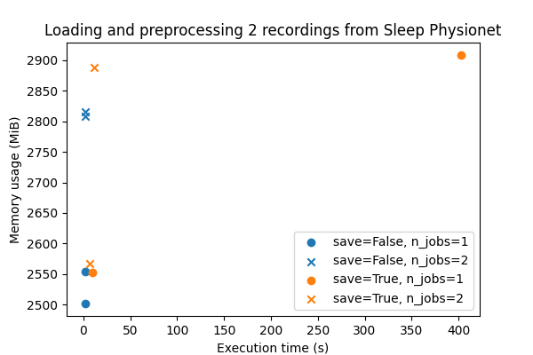

Note
Go to the end to download the full example code.
Benchmarking preprocessing with parallelization and serialization#
In this example, we compare the execution time and memory requirements of
preprocessing data with the parallelization and serialization functionalities
available in braindecode.preprocessing.preprocess().
We compare 4 cases:
Sequential, no serialization
Sequential, with serialization
Parallel, no serialization
Parallel, with serialization
Case 1 is the simplest approach, in which all recordings in a
braindecode.datasets.BaseConcatDataset are preprocessed one after the
other. In this scenario, braindecode.preprocessing.preprocess() acts
inplace, which means memory usage will likely stay stable (depending on the
preprocessing operations) if recordings have been preloaded. However, two
potential issues arise when working with large datasets: (1) if recordings have
not been preloaded before preprocessing, preprocess() will need to load them
and keep them in memory, in which case memory can become a bottleneck, and (2)
sequential preprocessing can take a considerable amount of time to run when
working with many recordings.
A solution to the first issue (memory usage) is to save the preprocessed data
to a file so it can be cleared from memory before moving on to the next
recording (case 2). The recordings can then be reloaded with preload=False
once they have all been saved to disk. This enables using the lazy loading
capabilities of braindecode.datasets.BaseConcatDataset and avoids
potential memory bottlenecks. The downside is that the writing to disk can take
some time and of course requires disk space.
A solution to the second issue (slow preprocessing) is to parallelize the preprocessing over multiple cores whenever possible (case 3). This can speed up preprocessing significantly. However, this approach will increase memory usage because of the way parallelization is implemented internally (with joblib, copies of (part of) the data must be made when sending arguments to parallel processes).
Finally, case 4 (combining parallelization and serialization) is likely to be both fast and memory efficient. As shown in this example, this remains a tradeoff though, and the selected configuration should depend on the size of the dataset and the specific operations applied to the recordings.
# Authors: Hubert Banville <hubert.jbanville@gmail.com>
#
# License: BSD (3-clause)
import tempfile
import time
from itertools import product
import matplotlib.pyplot as plt
import pandas as pd
from memory_profiler import memory_usage
from sklearn.preprocessing import scale
from braindecode.datasets import SleepPhysionet
from braindecode.preprocessing import (
Preprocessor,
create_fixed_length_windows,
preprocess,
)
We create a function that goes through the usual three steps of data
preparation: (1) data loading, (2) continuous data preprocessing,
(3) windowing and (4) windowed data preprocessing. We use the
braindecode.datasets.SleepPhysionet dataset for testing purposes.
def prepare_data(n_recs, save, preload, n_jobs):
if save:
tmp_dir = tempfile.TemporaryDirectory()
save_dir = tmp_dir.name
else:
save_dir = None
# (1) Load the data
concat_ds = SleepPhysionet(
subject_ids=range(n_recs), recording_ids=[1], crop_wake_mins=30, preload=preload
)
sfreq = concat_ds.datasets[0].raw.info["sfreq"]
# (2) Preprocess the continuous data
preprocessors = [
Preprocessor("crop", tmin=10),
Preprocessor("filter", l_freq=None, h_freq=30),
]
preprocess(
concat_ds, preprocessors, save_dir=save_dir, overwrite=True, n_jobs=n_jobs
)
# (3) Window the data
windows_ds = create_fixed_length_windows(
concat_ds,
0,
None,
int(30 * sfreq),
int(30 * sfreq),
True,
preload=preload,
n_jobs=n_jobs,
)
# Preprocess the windowed data
preprocessors = [Preprocessor(scale, channel_wise=True)]
preprocess(
windows_ds, preprocessors, save_dir=save_dir, overwrite=True, n_jobs=n_jobs
)
Next, we can run our function and measure its run time and peak memory usage for each one of our 4 cases above. We call the function multiple times with each configuration to get better estimates.
Note
To better characterize the run time vs. memory usage tradeoff for your specific configuration (as this will differ based on available hardware, data size and preprocessing operations), we recommend adapting this example to your use case and running it on your machine.
n_repets = 2 # Number of repetitions
all_n_recs = 2 # Number of recordings to load and preprocess
all_n_jobs = [1, 2] # Number of parallel processes
results = list()
for _, n_recs, save, n_jobs in product(
range(n_repets), [all_n_recs], [True, False], all_n_jobs
):
start = time.time()
mem = max(memory_usage(proc=(prepare_data, [n_recs, save, False, n_jobs], {})))
time_taken = time.time() - start
results.append(
{
"n_recs": n_recs,
"max_mem": mem,
"save": save,
"n_jobs": n_jobs,
"time": time_taken,
}
)
0%| | 0.00/48.3M [00:00<?, ?B/s]
0%| | 32.8k/48.3M [00:00<04:05, 197kB/s]
0%| | 81.9k/48.3M [00:00<02:44, 294kB/s]
0%| | 115k/48.3M [00:00<02:48, 287kB/s]
0%| | 147k/48.3M [00:00<03:00, 267kB/s]
0%|▏ | 180k/48.3M [00:00<02:52, 279kB/s]
0%|▏ | 213k/48.3M [00:00<02:57, 271kB/s]
1%|▏ | 246k/48.3M [00:00<02:55, 274kB/s]
1%|▏ | 279k/48.3M [00:01<02:52, 278kB/s]
1%|▎ | 311k/48.3M [00:01<02:50, 282kB/s]
1%|▎ | 344k/48.3M [00:01<03:00, 265kB/s]
1%|▎ | 393k/48.3M [00:01<02:50, 281kB/s]
1%|▎ | 426k/48.3M [00:01<03:02, 263kB/s]
1%|▎ | 459k/48.3M [00:01<03:12, 249kB/s]
1%|▍ | 492k/48.3M [00:01<03:07, 256kB/s]
1%|▍ | 524k/48.3M [00:01<03:06, 256kB/s]
1%|▍ | 557k/48.3M [00:02<03:08, 254kB/s]
1%|▍ | 590k/48.3M [00:02<02:59, 267kB/s]
1%|▌ | 623k/48.3M [00:02<03:10, 251kB/s]
1%|▌ | 672k/48.3M [00:02<02:53, 274kB/s]
1%|▌ | 705k/48.3M [00:02<02:56, 271kB/s]
2%|▌ | 737k/48.3M [00:02<03:08, 253kB/s]
2%|▌ | 770k/48.3M [00:02<03:10, 250kB/s]
2%|▋ | 803k/48.3M [00:03<03:05, 256kB/s]
2%|▋ | 836k/48.3M [00:03<03:00, 264kB/s]
2%|▋ | 868k/48.3M [00:03<02:58, 265kB/s]
2%|▋ | 901k/48.3M [00:03<02:56, 269kB/s]
2%|▊ | 934k/48.3M [00:03<02:54, 272kB/s]
2%|▊ | 967k/48.3M [00:03<02:52, 275kB/s]
2%|▊ | 999k/48.3M [00:03<02:53, 273kB/s]
2%|▊ | 1.03M/48.3M [00:03<03:01, 261kB/s]
2%|▊ | 1.06M/48.3M [00:04<02:57, 267kB/s]
2%|▊ | 1.10M/48.3M [00:04<02:55, 270kB/s]
2%|▉ | 1.13M/48.3M [00:04<02:53, 272kB/s]
2%|▉ | 1.16M/48.3M [00:04<02:59, 262kB/s]
2%|▉ | 1.20M/48.3M [00:04<03:11, 246kB/s]
3%|▉ | 1.23M/48.3M [00:04<03:12, 245kB/s]
3%|▉ | 1.26M/48.3M [00:04<03:06, 252kB/s]
3%|█ | 1.29M/48.3M [00:04<03:04, 255kB/s]
3%|█ | 1.33M/48.3M [00:05<03:27, 227kB/s]
3%|█ | 1.36M/48.3M [00:05<03:12, 244kB/s]
3%|█ | 1.39M/48.3M [00:05<03:05, 254kB/s]
3%|█ | 1.43M/48.3M [00:05<02:58, 263kB/s]
3%|█▏ | 1.46M/48.3M [00:05<03:07, 251kB/s]
3%|█▏ | 1.49M/48.3M [00:05<03:11, 245kB/s]
3%|█▏ | 1.52M/48.3M [00:05<03:07, 250kB/s]
3%|█▏ | 1.56M/48.3M [00:05<03:06, 251kB/s]
3%|█▏ | 1.59M/48.3M [00:06<03:01, 257kB/s]
3%|█▎ | 1.62M/48.3M [00:06<03:12, 243kB/s]
3%|█▎ | 1.65M/48.3M [00:06<03:19, 234kB/s]
3%|█▎ | 1.69M/48.3M [00:06<03:26, 226kB/s]
4%|█▎ | 1.74M/48.3M [00:06<03:02, 255kB/s]
4%|█▍ | 1.77M/48.3M [00:06<03:14, 239kB/s]
4%|█▍ | 1.80M/48.3M [00:07<03:28, 223kB/s]
4%|█▍ | 1.84M/48.3M [00:07<03:36, 215kB/s]
4%|█▍ | 1.87M/48.3M [00:07<03:23, 229kB/s]
4%|█▍ | 1.90M/48.3M [00:07<03:16, 236kB/s]
4%|█▌ | 1.93M/48.3M [00:07<03:10, 244kB/s]
4%|█▌ | 1.97M/48.3M [00:07<03:04, 251kB/s]
4%|█▌ | 2.00M/48.3M [00:07<02:58, 260kB/s]
4%|█▌ | 2.03M/48.3M [00:07<03:04, 251kB/s]
4%|█▌ | 2.06M/48.3M [00:08<03:16, 235kB/s]
4%|█▋ | 2.10M/48.3M [00:08<03:26, 224kB/s]
4%|█▋ | 2.12M/48.3M [00:08<03:24, 226kB/s]
4%|█▋ | 2.15M/48.3M [00:08<03:42, 208kB/s]
5%|█▋ | 2.18M/48.3M [00:08<03:23, 227kB/s]
5%|█▋ | 2.21M/48.3M [00:08<03:13, 239kB/s]
5%|█▊ | 2.24M/48.3M [00:08<03:07, 246kB/s]
5%|█▊ | 2.28M/48.3M [00:09<03:00, 255kB/s]
5%|█▊ | 2.31M/48.3M [00:09<02:59, 256kB/s]
5%|█▊ | 2.34M/48.3M [00:09<03:29, 219kB/s]
5%|█▉ | 2.39M/48.3M [00:09<03:03, 250kB/s]
5%|█▉ | 2.42M/48.3M [00:09<02:59, 256kB/s]
5%|█▉ | 2.46M/48.3M [00:09<02:56, 260kB/s]
5%|█▉ | 2.49M/48.3M [00:09<02:54, 263kB/s]
5%|█▉ | 2.52M/48.3M [00:09<02:50, 269kB/s]
5%|██ | 2.56M/48.3M [00:10<02:50, 269kB/s]
5%|██ | 2.59M/48.3M [00:10<02:48, 272kB/s]
5%|██ | 2.62M/48.3M [00:10<02:47, 274kB/s]
5%|██ | 2.65M/48.3M [00:10<02:53, 264kB/s]
6%|██ | 2.69M/48.3M [00:10<03:08, 243kB/s]
6%|██▏ | 2.72M/48.3M [00:10<03:18, 230kB/s]
6%|██▏ | 2.75M/48.3M [00:10<03:23, 224kB/s]
6%|██▏ | 2.79M/48.3M [00:11<03:18, 229kB/s]
6%|██▏ | 2.82M/48.3M [00:11<03:02, 249kB/s]
6%|██▏ | 2.85M/48.3M [00:11<03:04, 247kB/s]
6%|██▎ | 2.88M/48.3M [00:11<03:13, 235kB/s]
6%|██▎ | 2.92M/48.3M [00:11<03:04, 247kB/s]
6%|██▎ | 2.95M/48.3M [00:11<02:57, 255kB/s]
6%|██▎ | 2.98M/48.3M [00:11<02:52, 262kB/s]
6%|██▎ | 3.01M/48.3M [00:11<03:00, 252kB/s]
6%|██▍ | 3.05M/48.3M [00:12<03:13, 234kB/s]
6%|██▍ | 3.08M/48.3M [00:12<03:03, 247kB/s]
6%|██▍ | 3.11M/48.3M [00:12<02:55, 258kB/s]
7%|██▍ | 3.15M/48.3M [00:12<02:53, 261kB/s]
7%|██▍ | 3.18M/48.3M [00:12<02:59, 252kB/s]
7%|██▌ | 3.23M/48.3M [00:12<02:39, 283kB/s]
7%|██▌ | 3.26M/48.3M [00:12<02:38, 285kB/s]
7%|██▌ | 3.29M/48.3M [00:12<02:38, 284kB/s]
7%|██▌ | 3.33M/48.3M [00:13<02:45, 273kB/s]
7%|██▋ | 3.36M/48.3M [00:13<02:42, 277kB/s]
7%|██▋ | 3.39M/48.3M [00:13<02:49, 265kB/s]
7%|██▋ | 3.44M/48.3M [00:13<02:37, 285kB/s]
7%|██▋ | 3.47M/48.3M [00:13<02:38, 282kB/s]
7%|██▊ | 3.51M/48.3M [00:13<02:39, 282kB/s]
7%|██▊ | 3.54M/48.3M [00:13<02:40, 279kB/s]
7%|██▊ | 3.57M/48.3M [00:14<02:41, 278kB/s]
7%|██▊ | 3.60M/48.3M [00:14<02:42, 274kB/s]
8%|██▊ | 3.64M/48.3M [00:14<02:47, 267kB/s]
8%|██▉ | 3.67M/48.3M [00:14<02:39, 281kB/s]
8%|██▉ | 3.70M/48.3M [00:14<02:41, 276kB/s]
8%|██▉ | 3.74M/48.3M [00:14<02:40, 278kB/s]
8%|██▉ | 3.77M/48.3M [00:14<02:38, 280kB/s]
8%|██▉ | 3.80M/48.3M [00:14<02:56, 252kB/s]
8%|███ | 3.83M/48.3M [00:14<02:51, 260kB/s]
8%|███ | 3.87M/48.3M [00:15<02:47, 265kB/s]
8%|███ | 3.90M/48.3M [00:15<02:45, 269kB/s]
8%|███ | 3.93M/48.3M [00:15<02:42, 273kB/s]
8%|███ | 3.96M/48.3M [00:15<02:42, 272kB/s]
8%|███▏ | 4.00M/48.3M [00:15<02:39, 277kB/s]
8%|███▏ | 4.03M/48.3M [00:15<02:44, 269kB/s]
8%|███▏ | 4.06M/48.3M [00:15<02:35, 284kB/s]
8%|███▏ | 4.10M/48.3M [00:15<02:36, 282kB/s]
9%|███▏ | 4.13M/48.3M [00:16<02:38, 279kB/s]
9%|███▎ | 4.16M/48.3M [00:16<02:36, 282kB/s]
9%|███▎ | 4.19M/48.3M [00:16<02:37, 281kB/s]
9%|███▎ | 4.23M/48.3M [00:16<02:36, 282kB/s]
9%|███▎ | 4.26M/48.3M [00:16<02:35, 284kB/s]
9%|███▎ | 4.29M/48.3M [00:16<02:41, 272kB/s]
9%|███▍ | 4.33M/48.3M [00:16<02:53, 253kB/s]
9%|███▍ | 4.36M/48.3M [00:16<02:50, 258kB/s]
9%|███▍ | 4.39M/48.3M [00:17<02:44, 267kB/s]
9%|███▍ | 4.42M/48.3M [00:17<02:42, 271kB/s]
9%|███▌ | 4.46M/48.3M [00:17<02:44, 266kB/s]
9%|███▌ | 4.49M/48.3M [00:17<02:41, 271kB/s]
9%|███▌ | 4.52M/48.3M [00:17<02:40, 274kB/s]
9%|███▌ | 4.55M/48.3M [00:17<02:40, 273kB/s]
9%|███▌ | 4.59M/48.3M [00:17<02:41, 272kB/s]
10%|███▋ | 4.62M/48.3M [00:17<02:35, 280kB/s]
10%|███▋ | 4.65M/48.3M [00:17<02:37, 278kB/s]
10%|███▋ | 4.69M/48.3M [00:18<02:36, 279kB/s]
10%|███▋ | 4.72M/48.3M [00:18<02:36, 279kB/s]
10%|███▋ | 4.75M/48.3M [00:18<02:34, 283kB/s]
10%|███▊ | 4.78M/48.3M [00:18<02:34, 282kB/s]
10%|███▊ | 4.82M/48.3M [00:18<02:29, 291kB/s]
10%|███▊ | 4.85M/48.3M [00:18<02:30, 289kB/s]
10%|███▊ | 4.88M/48.3M [00:18<02:41, 269kB/s]
10%|███▉ | 4.93M/48.3M [00:18<02:28, 292kB/s]
10%|███▉ | 4.96M/48.3M [00:19<02:36, 276kB/s]
10%|███▉ | 5.00M/48.3M [00:19<02:43, 266kB/s]
10%|███▉ | 5.03M/48.3M [00:19<02:42, 267kB/s]
10%|███▉ | 5.06M/48.3M [00:19<02:35, 278kB/s]
11%|████ | 5.10M/48.3M [00:19<02:33, 282kB/s]
11%|████ | 5.13M/48.3M [00:19<02:32, 284kB/s]
11%|████ | 5.16M/48.3M [00:19<02:35, 277kB/s]
11%|████ | 5.19M/48.3M [00:19<02:30, 287kB/s]
11%|████ | 5.23M/48.3M [00:20<02:33, 281kB/s]
11%|████▏ | 5.26M/48.3M [00:20<02:27, 291kB/s]
11%|████▏ | 5.29M/48.3M [00:20<02:28, 290kB/s]
11%|████▏ | 5.32M/48.3M [00:20<02:35, 277kB/s]
11%|████▏ | 5.36M/48.3M [00:20<02:52, 250kB/s]
11%|████▏ | 5.39M/48.3M [00:20<02:52, 249kB/s]
11%|████▎ | 5.44M/48.3M [00:20<02:32, 281kB/s]
11%|████▎ | 5.47M/48.3M [00:20<02:32, 280kB/s]
11%|████▎ | 5.51M/48.3M [00:21<02:32, 282kB/s]
11%|████▎ | 5.54M/48.3M [00:21<02:31, 282kB/s]
12%|████▍ | 5.57M/48.3M [00:21<02:32, 280kB/s]
12%|████▍ | 5.60M/48.3M [00:21<02:33, 278kB/s]
12%|████▍ | 5.64M/48.3M [00:21<02:56, 242kB/s]
12%|████▍ | 5.67M/48.3M [00:21<02:49, 251kB/s]
12%|████▍ | 5.70M/48.3M [00:21<02:45, 258kB/s]
12%|████▌ | 5.73M/48.3M [00:21<02:41, 264kB/s]
12%|████▌ | 5.77M/48.3M [00:22<02:37, 271kB/s]
12%|████▌ | 5.80M/48.3M [00:22<02:33, 277kB/s]
12%|████▌ | 5.83M/48.3M [00:22<02:32, 279kB/s]
12%|████▌ | 5.87M/48.3M [00:22<02:30, 282kB/s]
12%|████▋ | 5.90M/48.3M [00:22<02:31, 281kB/s]
12%|████▋ | 5.93M/48.3M [00:22<02:30, 282kB/s]
12%|████▋ | 5.96M/48.3M [00:22<02:29, 284kB/s]
12%|████▋ | 6.00M/48.3M [00:22<02:31, 280kB/s]
12%|████▋ | 6.03M/48.3M [00:22<02:26, 290kB/s]
13%|████▊ | 6.06M/48.3M [00:23<02:30, 281kB/s]
13%|████▊ | 6.09M/48.3M [00:23<02:34, 273kB/s]
13%|████▊ | 6.13M/48.3M [00:23<02:42, 260kB/s]
13%|████▊ | 6.16M/48.3M [00:23<02:42, 260kB/s]
13%|████▊ | 6.19M/48.3M [00:23<02:47, 252kB/s]
13%|████▉ | 6.23M/48.3M [00:23<02:58, 236kB/s]
13%|████▉ | 6.26M/48.3M [00:23<02:54, 241kB/s]
13%|████▉ | 6.29M/48.3M [00:24<02:45, 255kB/s]
13%|████▉ | 6.32M/48.3M [00:24<02:40, 262kB/s]
13%|████▉ | 6.36M/48.3M [00:24<02:36, 268kB/s]
13%|█████ | 6.39M/48.3M [00:24<02:32, 275kB/s]
13%|█████ | 6.42M/48.3M [00:24<02:38, 264kB/s]
13%|█████ | 6.46M/48.3M [00:24<02:46, 252kB/s]
13%|█████ | 6.49M/48.3M [00:24<02:58, 235kB/s]
13%|█████▏ | 6.52M/48.3M [00:24<02:55, 238kB/s]
14%|█████▏ | 6.55M/48.3M [00:25<02:43, 255kB/s]
14%|█████▏ | 6.59M/48.3M [00:25<02:54, 239kB/s]
14%|█████▏ | 6.64M/48.3M [00:25<02:39, 261kB/s]
14%|█████▏ | 6.67M/48.3M [00:25<02:52, 241kB/s]
14%|█████▎ | 6.70M/48.3M [00:25<03:06, 223kB/s]
14%|█████▎ | 6.75M/48.3M [00:25<02:41, 258kB/s]
14%|█████▎ | 6.78M/48.3M [00:25<02:37, 263kB/s]
14%|█████▎ | 6.82M/48.3M [00:26<02:49, 244kB/s]
14%|█████▍ | 6.85M/48.3M [00:26<02:56, 236kB/s]
14%|█████▍ | 6.90M/48.3M [00:26<02:34, 268kB/s]
14%|█████▍ | 6.93M/48.3M [00:26<02:34, 268kB/s]
14%|█████▍ | 6.96M/48.3M [00:26<02:43, 252kB/s]
14%|█████▍ | 7.00M/48.3M [00:26<02:41, 256kB/s]
15%|█████▌ | 7.03M/48.3M [00:26<02:38, 260kB/s]
15%|█████▌ | 7.06M/48.3M [00:27<02:35, 265kB/s]
15%|█████▌ | 7.09M/48.3M [00:27<02:33, 269kB/s]
15%|█████▌ | 7.13M/48.3M [00:27<02:44, 250kB/s]
15%|█████▋ | 7.16M/48.3M [00:27<02:39, 259kB/s]
15%|█████▋ | 7.19M/48.3M [00:27<02:43, 252kB/s]
15%|█████▋ | 7.23M/48.3M [00:27<03:06, 221kB/s]
15%|█████▋ | 7.27M/48.3M [00:27<02:45, 248kB/s]
15%|█████▋ | 7.31M/48.3M [00:28<02:40, 255kB/s]
15%|█████▊ | 7.34M/48.3M [00:28<02:45, 247kB/s]
15%|█████▊ | 7.37M/48.3M [00:28<02:42, 252kB/s]
15%|█████▊ | 7.41M/48.3M [00:28<02:34, 266kB/s]
15%|█████▊ | 7.44M/48.3M [00:28<02:42, 251kB/s]
15%|█████▉ | 7.49M/48.3M [00:28<02:25, 280kB/s]
16%|█████▉ | 7.52M/48.3M [00:28<02:24, 282kB/s]
16%|█████▉ | 7.55M/48.3M [00:28<02:26, 279kB/s]
16%|█████▉ | 7.59M/48.3M [00:29<02:33, 266kB/s]
16%|█████▉ | 7.62M/48.3M [00:29<02:41, 253kB/s]
16%|██████ | 7.65M/48.3M [00:29<02:38, 257kB/s]
16%|██████ | 7.68M/48.3M [00:29<02:35, 262kB/s]
16%|██████ | 7.72M/48.3M [00:29<02:32, 267kB/s]
16%|██████ | 7.75M/48.3M [00:29<02:31, 268kB/s]
16%|██████ | 7.78M/48.3M [00:29<02:38, 256kB/s]
16%|██████▏ | 7.82M/48.3M [00:29<02:51, 237kB/s]
16%|██████▏ | 7.85M/48.3M [00:30<02:37, 257kB/s]
16%|██████▏ | 7.88M/48.3M [00:30<02:35, 260kB/s]
16%|██████▏ | 7.91M/48.3M [00:30<02:31, 267kB/s]
16%|██████▏ | 7.95M/48.3M [00:30<02:31, 266kB/s]
17%|██████▎ | 7.98M/48.3M [00:30<02:31, 266kB/s]
17%|██████▎ | 8.01M/48.3M [00:30<02:42, 248kB/s]
17%|██████▎ | 8.04M/48.3M [00:30<02:55, 230kB/s]
17%|██████▎ | 8.08M/48.3M [00:31<02:46, 241kB/s]
17%|██████▍ | 8.11M/48.3M [00:31<02:39, 252kB/s]
17%|██████▍ | 8.14M/48.3M [00:31<02:34, 260kB/s]
17%|██████▍ | 8.18M/48.3M [00:31<02:29, 269kB/s]
17%|██████▍ | 8.21M/48.3M [00:31<02:31, 265kB/s]
17%|██████▍ | 8.24M/48.3M [00:31<02:45, 242kB/s]
17%|██████▌ | 8.27M/48.3M [00:31<02:47, 239kB/s]
17%|██████▌ | 8.31M/48.3M [00:31<02:38, 253kB/s]
17%|██████▌ | 8.34M/48.3M [00:32<02:37, 254kB/s]
17%|██████▌ | 8.37M/48.3M [00:32<02:28, 268kB/s]
17%|██████▌ | 8.40M/48.3M [00:32<02:31, 264kB/s]
17%|██████▋ | 8.45M/48.3M [00:32<02:23, 278kB/s]
18%|██████▋ | 8.49M/48.3M [00:32<02:24, 276kB/s]
18%|██████▋ | 8.52M/48.3M [00:32<02:34, 257kB/s]
18%|██████▋ | 8.55M/48.3M [00:32<02:48, 236kB/s]
18%|██████▋ | 8.59M/48.3M [00:33<02:56, 226kB/s]
18%|██████▊ | 8.61M/48.3M [00:33<03:18, 200kB/s]
18%|██████▊ | 8.63M/48.3M [00:33<03:18, 200kB/s]
18%|██████▊ | 8.67M/48.3M [00:33<03:00, 219kB/s]
18%|██████▊ | 8.70M/48.3M [00:33<02:50, 232kB/s]
18%|██████▊ | 8.73M/48.3M [00:33<02:47, 236kB/s]
18%|██████▉ | 8.77M/48.3M [00:33<02:40, 246kB/s]
18%|██████▉ | 8.80M/48.3M [00:33<02:51, 230kB/s]
18%|██████▉ | 8.83M/48.3M [00:34<03:04, 214kB/s]
18%|██████▉ | 8.86M/48.3M [00:34<02:55, 225kB/s]
18%|██████▉ | 8.90M/48.3M [00:34<02:57, 223kB/s]
19%|███████ | 8.95M/48.3M [00:34<02:41, 244kB/s]
19%|███████ | 8.98M/48.3M [00:34<02:51, 229kB/s]
19%|███████ | 9.00M/48.3M [00:34<02:56, 223kB/s]
19%|███████ | 9.03M/48.3M [00:35<03:08, 209kB/s]
19%|███████ | 9.06M/48.3M [00:35<02:53, 226kB/s]
19%|███████▏ | 9.09M/48.3M [00:35<02:44, 239kB/s]
19%|███████▏ | 9.13M/48.3M [00:35<02:37, 249kB/s]
19%|███████▏ | 9.16M/48.3M [00:35<02:36, 250kB/s]
19%|███████▏ | 9.19M/48.3M [00:35<02:47, 234kB/s]
19%|███████▎ | 9.22M/48.3M [00:35<02:49, 231kB/s]
19%|███████▎ | 9.26M/48.3M [00:35<02:38, 246kB/s]
19%|███████▎ | 9.29M/48.3M [00:36<02:33, 255kB/s]
19%|███████▎ | 9.32M/48.3M [00:36<02:30, 259kB/s]
19%|███████▎ | 9.36M/48.3M [00:36<02:43, 239kB/s]
19%|███████▎ | 9.38M/48.3M [00:36<02:43, 238kB/s]
19%|███████▍ | 9.40M/48.3M [00:36<03:01, 215kB/s]
20%|███████▍ | 9.44M/48.3M [00:36<02:47, 232kB/s]
20%|███████▍ | 9.47M/48.3M [00:36<02:38, 246kB/s]
20%|███████▍ | 9.50M/48.3M [00:36<02:33, 254kB/s]
20%|███████▍ | 9.54M/48.3M [00:37<02:40, 241kB/s]
20%|███████▌ | 9.57M/48.3M [00:37<02:40, 241kB/s]
20%|███████▌ | 9.60M/48.3M [00:37<02:53, 223kB/s]
20%|███████▌ | 9.63M/48.3M [00:37<02:59, 216kB/s]
20%|███████▌ | 9.67M/48.3M [00:37<02:44, 236kB/s]
20%|███████▌ | 9.70M/48.3M [00:37<02:43, 236kB/s]
20%|███████▋ | 9.73M/48.3M [00:37<02:34, 250kB/s]
20%|███████▋ | 9.76M/48.3M [00:38<02:45, 233kB/s]
20%|███████▋ | 9.80M/48.3M [00:38<02:50, 226kB/s]
20%|███████▋ | 9.83M/48.3M [00:38<02:44, 235kB/s]
20%|███████▊ | 9.86M/48.3M [00:38<02:35, 247kB/s]
20%|███████▊ | 9.90M/48.3M [00:38<02:31, 254kB/s]
21%|███████▊ | 9.93M/48.3M [00:38<02:27, 260kB/s]
21%|███████▊ | 9.96M/48.3M [00:38<02:26, 261kB/s]
21%|███████▊ | 9.99M/48.3M [00:39<02:35, 247kB/s]
21%|███████▉ | 10.0M/48.3M [00:39<02:41, 238kB/s]
21%|███████▉ | 10.1M/48.3M [00:39<02:34, 248kB/s]
21%|███████▉ | 10.1M/48.3M [00:39<02:31, 253kB/s]
21%|███████▉ | 10.1M/48.3M [00:39<02:36, 244kB/s]
21%|███████▉ | 10.2M/48.3M [00:39<02:30, 253kB/s]
21%|████████ | 10.2M/48.3M [00:39<02:42, 235kB/s]
21%|████████ | 10.2M/48.3M [00:40<02:49, 225kB/s]
21%|████████ | 10.3M/48.3M [00:40<02:42, 235kB/s]
21%|████████ | 10.3M/48.3M [00:40<02:35, 244kB/s]
21%|████████▏ | 10.3M/48.3M [00:40<02:28, 256kB/s]
21%|████████▏ | 10.4M/48.3M [00:40<02:36, 243kB/s]
22%|████████▏ | 10.4M/48.3M [00:40<02:52, 220kB/s]
22%|████████▏ | 10.4M/48.3M [00:40<02:41, 234kB/s]
22%|████████▏ | 10.5M/48.3M [00:40<02:34, 245kB/s]
22%|████████▎ | 10.5M/48.3M [00:41<02:29, 254kB/s]
22%|████████▎ | 10.5M/48.3M [00:41<02:22, 265kB/s]
22%|████████▎ | 10.6M/48.3M [00:41<02:41, 234kB/s]
22%|████████▎ | 10.6M/48.3M [00:41<02:42, 232kB/s]
22%|████████▎ | 10.6M/48.3M [00:41<02:37, 239kB/s]
22%|████████▍ | 10.7M/48.3M [00:41<02:29, 252kB/s]
22%|████████▍ | 10.7M/48.3M [00:41<02:24, 260kB/s]
22%|████████▍ | 10.7M/48.3M [00:42<02:20, 267kB/s]
22%|████████▍ | 10.8M/48.3M [00:42<02:24, 260kB/s]
22%|████████▍ | 10.8M/48.3M [00:42<02:30, 249kB/s]
22%|████████▌ | 10.8M/48.3M [00:42<02:25, 257kB/s]
22%|████████▌ | 10.9M/48.3M [00:42<02:36, 240kB/s]
23%|████████▌ | 10.9M/48.3M [00:42<02:42, 231kB/s]
23%|████████▌ | 10.9M/48.3M [00:42<02:20, 266kB/s]
23%|████████▋ | 11.0M/48.3M [00:42<02:26, 255kB/s]
23%|████████▋ | 11.0M/48.3M [00:43<02:57, 211kB/s]
23%|████████▋ | 11.0M/48.3M [00:43<02:57, 210kB/s]
23%|████████▋ | 11.1M/48.3M [00:43<02:44, 227kB/s]
23%|████████▋ | 11.1M/48.3M [00:43<02:33, 243kB/s]
23%|████████▋ | 11.1M/48.3M [00:43<02:53, 214kB/s]
23%|████████▊ | 11.2M/48.3M [00:43<02:49, 219kB/s]
23%|████████▊ | 11.2M/48.3M [00:44<02:54, 213kB/s]
23%|████████▊ | 11.2M/48.3M [00:44<02:43, 227kB/s]
23%|████████▊ | 11.3M/48.3M [00:44<02:38, 234kB/s]
23%|████████▊ | 11.3M/48.3M [00:44<02:27, 252kB/s]
23%|████████▉ | 11.3M/48.3M [00:44<02:42, 228kB/s]
23%|████████▉ | 11.3M/48.3M [00:44<02:45, 223kB/s]
24%|████████▉ | 11.4M/48.3M [00:44<02:54, 211kB/s]
24%|████████▉ | 11.4M/48.3M [00:44<02:53, 213kB/s]
24%|████████▉ | 11.4M/48.3M [00:45<02:39, 232kB/s]
24%|█████████ | 11.5M/48.3M [00:45<02:29, 246kB/s]
24%|█████████ | 11.5M/48.3M [00:45<02:41, 228kB/s]
24%|█████████ | 11.5M/48.3M [00:45<02:45, 223kB/s]
24%|█████████ | 11.6M/48.3M [00:45<02:33, 240kB/s]
24%|█████████ | 11.6M/48.3M [00:45<02:26, 251kB/s]
24%|█████████▏ | 11.6M/48.3M [00:45<02:23, 256kB/s]
24%|█████████▏ | 11.6M/48.3M [00:45<02:20, 262kB/s]
24%|█████████▏ | 11.7M/48.3M [00:46<02:19, 262kB/s]
24%|█████████▏ | 11.7M/48.3M [00:46<02:30, 243kB/s]
24%|█████████▏ | 11.7M/48.3M [00:46<02:23, 255kB/s]
24%|█████████▎ | 11.8M/48.3M [00:46<02:19, 262kB/s]
24%|█████████▎ | 11.8M/48.3M [00:46<02:18, 264kB/s]
25%|█████████▎ | 11.8M/48.3M [00:46<02:14, 271kB/s]
25%|█████████▎ | 11.9M/48.3M [00:46<02:13, 274kB/s]
25%|█████████▎ | 11.9M/48.3M [00:46<02:37, 231kB/s]
25%|█████████▍ | 11.9M/48.3M [00:47<02:47, 217kB/s]
25%|█████████▍ | 12.0M/48.3M [00:47<02:35, 233kB/s]
25%|█████████▍ | 12.0M/48.3M [00:47<02:28, 245kB/s]
25%|█████████▍ | 12.0M/48.3M [00:47<02:24, 252kB/s]
25%|█████████▍ | 12.1M/48.3M [00:47<02:21, 256kB/s]
25%|█████████▌ | 12.1M/48.3M [00:47<02:40, 226kB/s]
25%|█████████▌ | 12.1M/48.3M [00:47<02:27, 245kB/s]
25%|█████████▌ | 12.2M/48.3M [00:48<02:21, 256kB/s]
25%|█████████▌ | 12.2M/48.3M [00:48<02:22, 254kB/s]
25%|█████████▌ | 12.2M/48.3M [00:48<02:21, 255kB/s]
25%|█████████▋ | 12.3M/48.3M [00:48<02:37, 229kB/s]
25%|█████████▋ | 12.3M/48.3M [00:48<02:44, 219kB/s]
26%|█████████▋ | 12.3M/48.3M [00:48<02:34, 233kB/s]
26%|█████████▋ | 12.4M/48.3M [00:48<02:32, 236kB/s]
26%|█████████▊ | 12.4M/48.3M [00:49<02:38, 227kB/s]
26%|█████████▊ | 12.4M/48.3M [00:49<02:30, 238kB/s]
26%|█████████▊ | 12.5M/48.3M [00:49<02:36, 229kB/s]
26%|█████████▊ | 12.5M/48.3M [00:49<02:38, 227kB/s]
26%|█████████▊ | 12.5M/48.3M [00:49<02:36, 229kB/s]
26%|█████████▉ | 12.6M/48.3M [00:49<02:16, 262kB/s]
26%|█████████▉ | 12.6M/48.3M [00:49<02:14, 265kB/s]
26%|█████████▉ | 12.6M/48.3M [00:50<02:13, 268kB/s]
26%|█████████▉ | 12.7M/48.3M [00:50<02:18, 258kB/s]
26%|█████████▉ | 12.7M/48.3M [00:50<02:39, 224kB/s]
26%|██████████ | 12.7M/48.3M [00:50<02:35, 229kB/s]
26%|██████████ | 12.8M/48.3M [00:50<02:27, 241kB/s]
26%|██████████ | 12.8M/48.3M [00:50<02:21, 251kB/s]
27%|██████████ | 12.8M/48.3M [00:50<02:17, 258kB/s]
27%|██████████ | 12.9M/48.3M [00:50<02:21, 251kB/s]
27%|██████████▏ | 12.9M/48.3M [00:51<02:35, 228kB/s]
27%|██████████▏ | 12.9M/48.3M [00:51<02:27, 241kB/s]
27%|██████████▏ | 13.0M/48.3M [00:51<02:19, 253kB/s]
27%|██████████▏ | 13.0M/48.3M [00:51<02:16, 259kB/s]
27%|██████████▏ | 13.0M/48.3M [00:51<02:18, 254kB/s]
27%|██████████▎ | 13.1M/48.3M [00:51<02:42, 217kB/s]
27%|██████████▎ | 13.1M/48.3M [00:51<02:39, 221kB/s]
27%|██████████▎ | 13.1M/48.3M [00:52<02:56, 199kB/s]
27%|██████████▎ | 13.1M/48.3M [00:52<02:41, 218kB/s]
27%|██████████▎ | 13.2M/48.3M [00:52<02:41, 218kB/s]
27%|██████████▍ | 13.2M/48.3M [00:52<02:29, 235kB/s]
27%|██████████▍ | 13.3M/48.3M [00:52<02:42, 216kB/s]
27%|██████████▍ | 13.3M/48.3M [00:52<02:46, 211kB/s]
28%|██████████▍ | 13.3M/48.3M [00:53<02:54, 200kB/s]
28%|██████████▍ | 13.4M/48.3M [00:53<02:35, 225kB/s]
28%|██████████▌ | 13.4M/48.3M [00:53<02:53, 201kB/s]
28%|██████████▌ | 13.4M/48.3M [00:53<02:54, 201kB/s]
28%|██████████▌ | 13.5M/48.3M [00:53<02:39, 218kB/s]
28%|██████████▌ | 13.5M/48.3M [00:53<02:30, 232kB/s]
28%|██████████▋ | 13.5M/48.3M [00:53<02:26, 238kB/s]
28%|██████████▋ | 13.5M/48.3M [00:54<02:49, 206kB/s]
28%|██████████▋ | 13.6M/48.3M [00:54<02:31, 230kB/s]
28%|██████████▋ | 13.6M/48.3M [00:54<02:35, 224kB/s]
28%|██████████▋ | 13.6M/48.3M [00:54<02:26, 237kB/s]
28%|██████████▊ | 13.7M/48.3M [00:54<02:28, 233kB/s]
28%|██████████▊ | 13.7M/48.3M [00:54<02:28, 233kB/s]
28%|██████████▊ | 13.7M/48.3M [00:54<02:35, 222kB/s]
28%|██████████▊ | 13.8M/48.3M [00:55<02:55, 197kB/s]
29%|██████████▊ | 13.8M/48.3M [00:55<02:38, 218kB/s]
29%|██████████▊ | 13.8M/48.3M [00:55<02:27, 234kB/s]
29%|██████████▉ | 13.9M/48.3M [00:55<02:34, 223kB/s]
29%|██████████▉ | 13.9M/48.3M [00:55<02:33, 225kB/s]
29%|██████████▉ | 13.9M/48.3M [00:55<02:39, 215kB/s]
29%|██████████▉ | 14.0M/48.3M [00:55<02:41, 213kB/s]
29%|██████████▉ | 14.0M/48.3M [00:56<02:28, 231kB/s]
29%|███████████ | 14.0M/48.3M [00:56<02:21, 243kB/s]
29%|███████████ | 14.1M/48.3M [00:56<02:15, 253kB/s]
29%|███████████ | 14.1M/48.3M [00:56<02:25, 235kB/s]
29%|███████████ | 14.1M/48.3M [00:56<02:35, 220kB/s]
29%|███████████▏ | 14.2M/48.3M [00:56<02:25, 236kB/s]
29%|███████████▏ | 14.2M/48.3M [00:56<02:30, 227kB/s]
29%|███████████▏ | 14.2M/48.3M [00:57<02:35, 220kB/s]
29%|███████████▏ | 14.3M/48.3M [00:57<02:46, 205kB/s]
30%|███████████▏ | 14.3M/48.3M [00:57<02:29, 228kB/s]
30%|███████████▎ | 14.3M/48.3M [00:57<02:20, 242kB/s]
30%|███████████▎ | 14.4M/48.3M [00:57<02:14, 253kB/s]
30%|███████████▎ | 14.4M/48.3M [00:57<02:09, 262kB/s]
30%|███████████▎ | 14.4M/48.3M [00:57<02:10, 259kB/s]
30%|███████████▎ | 14.5M/48.3M [00:57<02:08, 263kB/s]
30%|███████████▍ | 14.5M/48.3M [00:58<02:15, 249kB/s]
30%|███████████▍ | 14.5M/48.3M [00:58<02:13, 253kB/s]
30%|███████████▍ | 14.5M/48.3M [00:58<02:07, 264kB/s]
30%|███████████▍ | 14.6M/48.3M [00:58<02:06, 267kB/s]
30%|███████████▍ | 14.6M/48.3M [00:58<02:04, 270kB/s]
30%|███████████▌ | 14.6M/48.3M [00:58<02:03, 272kB/s]
30%|███████████▌ | 14.7M/48.3M [00:58<02:14, 250kB/s]
30%|███████████▌ | 14.7M/48.3M [00:58<02:18, 243kB/s]
31%|███████████▌ | 14.7M/48.3M [00:59<02:12, 254kB/s]
31%|███████████▌ | 14.8M/48.3M [00:59<02:10, 258kB/s]
31%|███████████▋ | 14.8M/48.3M [00:59<02:06, 266kB/s]
31%|███████████▋ | 14.8M/48.3M [00:59<02:16, 245kB/s]
31%|███████████▋ | 14.9M/48.3M [00:59<02:23, 233kB/s]
31%|███████████▋ | 14.9M/48.3M [00:59<02:44, 204kB/s]
31%|███████████▋ | 14.9M/48.3M [00:59<02:45, 202kB/s]
31%|███████████▊ | 15.0M/48.3M [01:00<02:31, 221kB/s]
31%|███████████▊ | 15.0M/48.3M [01:00<02:20, 238kB/s]
31%|███████████▊ | 15.0M/48.3M [01:00<02:26, 228kB/s]
31%|███████████▊ | 15.0M/48.3M [01:00<02:26, 227kB/s]
31%|███████████▊ | 15.1M/48.3M [01:00<02:41, 206kB/s]
31%|███████████▉ | 15.1M/48.3M [01:00<02:36, 213kB/s]
31%|███████████▉ | 15.1M/48.3M [01:00<02:23, 232kB/s]
31%|███████████▉ | 15.2M/48.3M [01:01<02:42, 204kB/s]
31%|███████████▉ | 15.2M/48.3M [01:01<02:51, 193kB/s]
32%|███████████▉ | 15.2M/48.3M [01:01<02:36, 211kB/s]
32%|████████████ | 15.3M/48.3M [01:01<02:27, 224kB/s]
32%|████████████ | 15.3M/48.3M [01:01<02:21, 233kB/s]
32%|████████████ | 15.4M/48.3M [01:01<02:06, 261kB/s]
32%|████████████ | 15.4M/48.3M [01:01<02:11, 250kB/s]
32%|████████████ | 15.4M/48.3M [01:01<02:06, 260kB/s]
32%|████████████▏ | 15.5M/48.3M [01:02<02:08, 255kB/s]
32%|████████████▏ | 15.5M/48.3M [01:02<02:15, 243kB/s]
32%|████████████▏ | 15.5M/48.3M [01:02<02:18, 237kB/s]
32%|████████████▏ | 15.5M/48.3M [01:02<02:22, 230kB/s]
32%|████████████▏ | 15.6M/48.3M [01:02<02:13, 244kB/s]
32%|████████████▎ | 15.6M/48.3M [01:02<02:09, 252kB/s]
32%|████████████▎ | 15.6M/48.3M [01:02<02:13, 244kB/s]
32%|████████████▎ | 15.7M/48.3M [01:03<01:59, 273kB/s]
33%|████████████▎ | 15.7M/48.3M [01:03<01:58, 275kB/s]
33%|████████████▍ | 15.8M/48.3M [01:03<02:19, 234kB/s]
33%|████████████▍ | 15.8M/48.3M [01:03<02:12, 246kB/s]
33%|████████████▍ | 15.8M/48.3M [01:03<02:05, 259kB/s]
33%|████████████▍ | 15.9M/48.3M [01:03<02:12, 245kB/s]
33%|████████████▍ | 15.9M/48.3M [01:03<02:21, 229kB/s]
33%|████████████▌ | 15.9M/48.3M [01:04<02:23, 226kB/s]
33%|████████████▌ | 16.0M/48.3M [01:04<02:30, 215kB/s]
33%|████████████▌ | 16.0M/48.3M [01:04<02:31, 213kB/s]
33%|████████████▌ | 16.0M/48.3M [01:04<02:23, 226kB/s]
33%|████████████▌ | 16.1M/48.3M [01:04<02:15, 238kB/s]
33%|████████████▋ | 16.1M/48.3M [01:04<02:20, 230kB/s]
33%|████████████▋ | 16.1M/48.3M [01:04<02:22, 226kB/s]
33%|████████████▋ | 16.2M/48.3M [01:05<02:32, 211kB/s]
33%|████████████▋ | 16.2M/48.3M [01:05<02:29, 215kB/s]
34%|████████████▊ | 16.2M/48.3M [01:05<02:18, 232kB/s]
34%|████████████▊ | 16.3M/48.3M [01:05<02:20, 229kB/s]
34%|████████████▊ | 16.3M/48.3M [01:05<02:20, 229kB/s]
34%|████████████▊ | 16.3M/48.3M [01:05<02:19, 229kB/s]
34%|████████████▊ | 16.3M/48.3M [01:05<02:26, 218kB/s]
34%|████████████▊ | 16.4M/48.3M [01:06<02:16, 234kB/s]
34%|████████████▉ | 16.4M/48.3M [01:06<02:24, 221kB/s]
34%|████████████▉ | 16.4M/48.3M [01:06<02:12, 240kB/s]
34%|████████████▉ | 16.5M/48.3M [01:06<02:18, 231kB/s]
34%|████████████▉ | 16.5M/48.3M [01:06<02:26, 217kB/s]
34%|████████████▉ | 16.5M/48.3M [01:06<02:16, 233kB/s]
34%|█████████████ | 16.6M/48.3M [01:06<02:09, 245kB/s]
34%|█████████████ | 16.6M/48.3M [01:07<02:06, 251kB/s]
34%|█████████████ | 16.6M/48.3M [01:07<01:59, 265kB/s]
34%|█████████████ | 16.7M/48.3M [01:07<02:10, 242kB/s]
35%|█████████████ | 16.7M/48.3M [01:07<02:18, 228kB/s]
35%|█████████████▏ | 16.7M/48.3M [01:07<02:13, 236kB/s]
35%|█████████████▏ | 16.8M/48.3M [01:07<02:15, 233kB/s]
35%|█████████████▏ | 16.8M/48.3M [01:07<02:25, 217kB/s]
35%|█████████████▏ | 16.8M/48.3M [01:08<02:32, 207kB/s]
35%|█████████████▎ | 16.9M/48.3M [01:08<02:35, 203kB/s]
35%|█████████████▎ | 16.9M/48.3M [01:08<02:23, 219kB/s]
35%|█████████████▎ | 16.9M/48.3M [01:08<02:29, 211kB/s]
35%|█████████████▎ | 17.0M/48.3M [01:08<02:31, 207kB/s]
35%|█████████████▎ | 17.0M/48.3M [01:08<02:18, 227kB/s]
35%|█████████████▍ | 17.0M/48.3M [01:08<02:19, 225kB/s]
35%|█████████████▍ | 17.0M/48.3M [01:09<02:17, 228kB/s]
35%|█████████████▍ | 17.1M/48.3M [01:09<02:13, 235kB/s]
35%|█████████████▍ | 17.1M/48.3M [01:09<02:03, 253kB/s]
35%|█████████████▍ | 17.1M/48.3M [01:09<02:08, 243kB/s]
36%|█████████████▍ | 17.2M/48.3M [01:09<02:01, 256kB/s]
36%|█████████████▌ | 17.2M/48.3M [01:09<02:14, 232kB/s]
36%|█████████████▌ | 17.2M/48.3M [01:09<02:09, 240kB/s]
36%|█████████████▌ | 17.3M/48.3M [01:09<02:11, 237kB/s]
36%|█████████████▌ | 17.3M/48.3M [01:10<01:49, 283kB/s]
36%|█████████████▋ | 17.3M/48.3M [01:10<01:52, 276kB/s]
36%|█████████████▋ | 17.4M/48.3M [01:10<01:55, 268kB/s]
36%|█████████████▋ | 17.4M/48.3M [01:10<01:57, 263kB/s]
36%|█████████████▋ | 17.4M/48.3M [01:10<02:13, 232kB/s]
36%|█████████████▋ | 17.5M/48.3M [01:10<02:17, 224kB/s]
36%|█████████████▋ | 17.5M/48.3M [01:10<02:11, 236kB/s]
36%|█████████████▊ | 17.5M/48.3M [01:10<02:06, 244kB/s]
36%|█████████████▊ | 17.5M/48.3M [01:11<02:09, 238kB/s]
36%|█████████████▊ | 17.6M/48.3M [01:11<02:12, 232kB/s]
36%|█████████████▊ | 17.6M/48.3M [01:11<02:34, 199kB/s]
36%|█████████████▊ | 17.6M/48.3M [01:11<02:25, 211kB/s]
37%|█████████████▉ | 17.7M/48.3M [01:11<02:14, 227kB/s]
37%|█████████████▉ | 17.7M/48.3M [01:11<02:18, 222kB/s]
37%|█████████████▉ | 17.7M/48.3M [01:11<02:15, 225kB/s]
37%|█████████████▉ | 17.8M/48.3M [01:12<02:18, 221kB/s]
37%|█████████████▉ | 17.8M/48.3M [01:12<02:32, 200kB/s]
37%|██████████████ | 17.8M/48.3M [01:12<02:20, 217kB/s]
37%|██████████████ | 17.8M/48.3M [01:12<02:11, 232kB/s]
37%|██████████████ | 17.9M/48.3M [01:12<02:04, 244kB/s]
37%|██████████████ | 17.9M/48.3M [01:12<02:01, 251kB/s]
37%|██████████████ | 17.9M/48.3M [01:12<02:14, 226kB/s]
37%|██████████████ | 18.0M/48.3M [01:12<02:14, 226kB/s]
37%|██████████████▏ | 18.0M/48.3M [01:13<02:23, 211kB/s]
37%|██████████████▏ | 18.0M/48.3M [01:13<02:10, 232kB/s]
37%|██████████████▏ | 18.1M/48.3M [01:13<02:04, 243kB/s]
37%|██████████████▏ | 18.1M/48.3M [01:13<02:02, 247kB/s]
37%|██████████████▏ | 18.1M/48.3M [01:13<02:05, 241kB/s]
38%|██████████████▎ | 18.1M/48.3M [01:13<02:17, 219kB/s]
38%|██████████████▎ | 18.2M/48.3M [01:13<02:15, 223kB/s]
38%|██████████████▎ | 18.2M/48.3M [01:13<01:53, 266kB/s]
38%|██████████████▎ | 18.2M/48.3M [01:14<02:01, 247kB/s]
38%|██████████████▎ | 18.3M/48.3M [01:14<01:52, 268kB/s]
38%|██████████████▍ | 18.3M/48.3M [01:14<01:58, 253kB/s]
38%|██████████████▍ | 18.4M/48.3M [01:14<02:02, 245kB/s]
38%|██████████████▍ | 18.4M/48.3M [01:14<01:57, 254kB/s]
38%|██████████████▍ | 18.4M/48.3M [01:14<01:54, 260kB/s]
38%|██████████████▌ | 18.4M/48.3M [01:14<01:50, 270kB/s]
38%|██████████████▌ | 18.5M/48.3M [01:15<01:55, 259kB/s]
38%|██████████████▌ | 18.5M/48.3M [01:15<02:01, 246kB/s]
38%|██████████████▌ | 18.6M/48.3M [01:15<02:00, 247kB/s]
38%|██████████████▌ | 18.6M/48.3M [01:15<02:19, 214kB/s]
39%|██████████████▋ | 18.6M/48.3M [01:15<02:13, 223kB/s]
39%|██████████████▋ | 18.6M/48.3M [01:15<02:04, 239kB/s]
39%|██████████████▋ | 18.7M/48.3M [01:15<01:59, 249kB/s]
39%|██████████████▋ | 18.7M/48.3M [01:16<02:02, 243kB/s]
39%|██████████████▋ | 18.7M/48.3M [01:16<02:00, 245kB/s]
39%|██████████████▋ | 18.8M/48.3M [01:16<02:20, 210kB/s]
39%|██████████████▊ | 18.8M/48.3M [01:16<02:31, 196kB/s]
39%|██████████████▊ | 18.8M/48.3M [01:16<02:25, 203kB/s]
39%|██████████████▊ | 18.9M/48.3M [01:16<02:09, 228kB/s]
39%|██████████████▊ | 18.9M/48.3M [01:16<02:10, 226kB/s]
39%|██████████████▉ | 18.9M/48.3M [01:17<02:15, 216kB/s]
39%|██████████████▉ | 19.0M/48.3M [01:17<02:11, 223kB/s]
39%|██████████████▉ | 19.0M/48.3M [01:17<02:03, 237kB/s]
39%|██████████████▉ | 19.0M/48.3M [01:17<02:04, 235kB/s]
39%|██████████████▉ | 19.1M/48.3M [01:17<02:09, 226kB/s]
40%|███████████████ | 19.1M/48.3M [01:17<02:04, 235kB/s]
40%|███████████████ | 19.1M/48.3M [01:17<02:05, 233kB/s]
40%|███████████████ | 19.2M/48.3M [01:18<01:57, 249kB/s]
40%|███████████████ | 19.2M/48.3M [01:18<01:45, 275kB/s]
40%|███████████████▏ | 19.3M/48.3M [01:18<02:01, 238kB/s]
40%|███████████████▏ | 19.3M/48.3M [01:18<02:03, 235kB/s]
40%|███████████████▏ | 19.3M/48.3M [01:18<01:57, 246kB/s]
40%|███████████████▏ | 19.4M/48.3M [01:18<01:53, 256kB/s]
40%|███████████████▏ | 19.4M/48.3M [01:18<01:50, 262kB/s]
40%|███████████████▎ | 19.4M/48.3M [01:19<02:01, 238kB/s]
40%|███████████████▎ | 19.5M/48.3M [01:19<02:10, 221kB/s]
40%|███████████████▎ | 19.5M/48.3M [01:19<02:01, 237kB/s]
40%|███████████████▎ | 19.5M/48.3M [01:19<01:55, 250kB/s]
40%|███████████████▍ | 19.6M/48.3M [01:19<01:49, 264kB/s]
41%|███████████████▍ | 19.6M/48.3M [01:19<01:47, 268kB/s]
41%|███████████████▍ | 19.6M/48.3M [01:19<02:08, 223kB/s]
41%|███████████████▍ | 19.7M/48.3M [01:20<02:10, 220kB/s]
41%|███████████████▍ | 19.7M/48.3M [01:20<02:00, 237kB/s]
41%|███████████████▌ | 19.7M/48.3M [01:20<01:54, 249kB/s]
41%|███████████████▌ | 19.8M/48.3M [01:20<01:49, 262kB/s]
41%|███████████████▌ | 19.8M/48.3M [01:20<01:46, 267kB/s]
41%|███████████████▌ | 19.8M/48.3M [01:20<01:56, 244kB/s]
41%|███████████████▌ | 19.9M/48.3M [01:20<01:50, 257kB/s]
41%|███████████████▋ | 19.9M/48.3M [01:20<01:45, 269kB/s]
41%|███████████████▋ | 19.9M/48.3M [01:21<01:43, 275kB/s]
41%|███████████████▋ | 20.0M/48.3M [01:21<01:41, 280kB/s]
41%|███████████████▋ | 20.0M/48.3M [01:21<01:40, 282kB/s]
41%|███████████████▋ | 20.0M/48.3M [01:21<01:38, 286kB/s]
41%|███████████████▊ | 20.1M/48.3M [01:21<01:39, 285kB/s]
42%|███████████████▊ | 20.1M/48.3M [01:21<01:43, 273kB/s]
42%|███████████████▊ | 20.1M/48.3M [01:21<01:45, 267kB/s]
42%|███████████████▊ | 20.1M/48.3M [01:21<01:47, 262kB/s]
42%|███████████████▊ | 20.2M/48.3M [01:21<01:43, 273kB/s]
42%|███████████████▉ | 20.2M/48.3M [01:22<01:41, 278kB/s]
42%|███████████████▉ | 20.2M/48.3M [01:22<01:39, 283kB/s]
42%|███████████████▉ | 20.3M/48.3M [01:22<01:45, 266kB/s]
42%|███████████████▉ | 20.3M/48.3M [01:22<02:01, 231kB/s]
42%|███████████████▉ | 20.3M/48.3M [01:22<02:02, 229kB/s]
42%|███████████████▉ | 20.3M/48.3M [01:22<01:54, 245kB/s]
42%|████████████████ | 20.4M/48.3M [01:22<01:48, 257kB/s]
42%|████████████████ | 20.4M/48.3M [01:22<01:45, 266kB/s]
42%|████████████████ | 20.4M/48.3M [01:23<01:56, 240kB/s]
42%|████████████████ | 20.5M/48.3M [01:23<01:50, 253kB/s]
42%|████████████████▏ | 20.5M/48.3M [01:23<01:46, 261kB/s]
43%|████████████████▏ | 20.5M/48.3M [01:23<01:49, 255kB/s]
43%|████████████████▏ | 20.6M/48.3M [01:23<01:41, 273kB/s]
43%|████████████████▏ | 20.6M/48.3M [01:23<01:48, 256kB/s]
43%|████████████████▏ | 20.6M/48.3M [01:23<01:41, 272kB/s]
43%|████████████████▎ | 20.7M/48.3M [01:23<01:50, 250kB/s]
43%|████████████████▎ | 20.7M/48.3M [01:24<01:48, 254kB/s]
43%|████████████████▎ | 20.7M/48.3M [01:24<01:57, 235kB/s]
43%|████████████████▎ | 20.8M/48.3M [01:24<01:57, 236kB/s]
43%|████████████████▎ | 20.8M/48.3M [01:24<01:53, 242kB/s]
43%|████████████████▍ | 20.8M/48.3M [01:24<02:09, 212kB/s]
43%|████████████████▍ | 20.9M/48.3M [01:24<02:09, 212kB/s]
43%|████████████████▍ | 20.9M/48.3M [01:24<01:59, 229kB/s]
43%|████████████████▍ | 20.9M/48.3M [01:25<01:51, 246kB/s]
43%|████████████████▍ | 21.0M/48.3M [01:25<01:55, 237kB/s]
43%|████████████████▌ | 21.0M/48.3M [01:25<01:49, 249kB/s]
44%|████████████████▌ | 21.0M/48.3M [01:25<01:51, 245kB/s]
44%|████████████████▌ | 21.1M/48.3M [01:25<02:07, 215kB/s]
44%|████████████████▌ | 21.1M/48.3M [01:25<01:58, 229kB/s]
44%|████████████████▌ | 21.1M/48.3M [01:25<01:53, 239kB/s]
44%|████████████████▋ | 21.2M/48.3M [01:26<01:57, 232kB/s]
44%|████████████████▋ | 21.2M/48.3M [01:26<02:01, 224kB/s]
44%|████████████████▋ | 21.2M/48.3M [01:26<02:04, 218kB/s]
44%|████████████████▋ | 21.3M/48.3M [01:26<01:55, 233kB/s]
44%|████████████████▋ | 21.3M/48.3M [01:26<01:48, 250kB/s]
44%|████████████████▊ | 21.3M/48.3M [01:26<01:41, 266kB/s]
44%|████████████████▊ | 21.4M/48.3M [01:26<01:51, 243kB/s]
44%|████████████████▊ | 21.4M/48.3M [01:27<01:55, 233kB/s]
44%|████████████████▊ | 21.4M/48.3M [01:27<01:49, 246kB/s]
44%|████████████████▊ | 21.5M/48.3M [01:27<01:44, 257kB/s]
44%|████████████████▉ | 21.5M/48.3M [01:27<01:45, 255kB/s]
45%|████████████████▉ | 21.5M/48.3M [01:27<01:42, 262kB/s]
45%|████████████████▉ | 21.6M/48.3M [01:27<01:48, 247kB/s]
45%|████████████████▉ | 21.6M/48.3M [01:27<01:54, 235kB/s]
45%|████████████████▉ | 21.6M/48.3M [01:27<01:55, 231kB/s]
45%|█████████████████ | 21.6M/48.3M [01:28<01:48, 245kB/s]
45%|█████████████████ | 21.7M/48.3M [01:28<01:44, 255kB/s]
45%|█████████████████ | 21.7M/48.3M [01:28<01:43, 258kB/s]
45%|█████████████████ | 21.7M/48.3M [01:28<01:42, 259kB/s]
45%|█████████████████ | 21.8M/48.3M [01:28<01:42, 259kB/s]
45%|█████████████████▏ | 21.8M/48.3M [01:28<01:46, 248kB/s]
45%|█████████████████▏ | 21.8M/48.3M [01:28<01:42, 258kB/s]
45%|█████████████████▏ | 21.9M/48.3M [01:28<01:53, 233kB/s]
45%|█████████████████▏ | 21.9M/48.3M [01:29<01:49, 242kB/s]
45%|█████████████████▏ | 21.9M/48.3M [01:29<01:43, 255kB/s]
45%|█████████████████▎ | 22.0M/48.3M [01:29<01:44, 252kB/s]
45%|█████████████████▎ | 22.0M/48.3M [01:29<02:02, 216kB/s]
46%|█████████████████▎ | 22.0M/48.3M [01:29<02:05, 210kB/s]
46%|█████████████████▎ | 22.1M/48.3M [01:29<01:44, 252kB/s]
46%|█████████████████▍ | 22.1M/48.3M [01:29<01:40, 262kB/s]
46%|█████████████████▍ | 22.1M/48.3M [01:29<01:37, 269kB/s]
46%|█████████████████▍ | 22.2M/48.3M [01:30<01:45, 248kB/s]
46%|█████████████████▍ | 22.2M/48.3M [01:30<01:40, 259kB/s]
46%|█████████████████▍ | 22.2M/48.3M [01:30<01:38, 265kB/s]
46%|█████████████████▌ | 22.3M/48.3M [01:30<01:37, 269kB/s]
46%|█████████████████▌ | 22.3M/48.3M [01:30<01:33, 278kB/s]
46%|█████████████████▌ | 22.3M/48.3M [01:30<01:33, 277kB/s]
46%|█████████████████▌ | 22.4M/48.3M [01:30<01:46, 244kB/s]
46%|█████████████████▌ | 22.4M/48.3M [01:31<01:57, 221kB/s]
46%|█████████████████▋ | 22.4M/48.3M [01:31<01:54, 226kB/s]
47%|█████████████████▋ | 22.5M/48.3M [01:31<01:40, 256kB/s]
47%|█████████████████▋ | 22.5M/48.3M [01:31<01:37, 264kB/s]
47%|█████████████████▋ | 22.5M/48.3M [01:31<01:33, 276kB/s]
47%|█████████████████▋ | 22.6M/48.3M [01:31<01:41, 254kB/s]
47%|█████████████████▊ | 22.6M/48.3M [01:31<01:49, 236kB/s]
47%|█████████████████▊ | 22.6M/48.3M [01:31<01:43, 249kB/s]
47%|█████████████████▊ | 22.7M/48.3M [01:32<01:39, 257kB/s]
47%|█████████████████▊ | 22.7M/48.3M [01:32<01:38, 260kB/s]
47%|█████████████████▉ | 22.7M/48.3M [01:32<01:48, 236kB/s]
47%|█████████████████▉ | 22.8M/48.3M [01:32<01:47, 239kB/s]
47%|█████████████████▉ | 22.8M/48.3M [01:32<01:49, 233kB/s]
47%|█████████████████▉ | 22.8M/48.3M [01:32<01:46, 238kB/s]
47%|█████████████████▉ | 22.9M/48.3M [01:32<01:46, 239kB/s]
47%|██████████████████ | 22.9M/48.3M [01:33<01:50, 231kB/s]
47%|██████████████████ | 22.9M/48.3M [01:33<01:54, 223kB/s]
47%|██████████████████ | 23.0M/48.3M [01:33<02:13, 190kB/s]
48%|██████████████████ | 23.0M/48.3M [01:33<01:59, 212kB/s]
48%|██████████████████ | 23.0M/48.3M [01:33<01:48, 232kB/s]
48%|██████████████████ | 23.1M/48.3M [01:33<01:54, 221kB/s]
48%|██████████████████▏ | 23.1M/48.3M [01:33<02:00, 209kB/s]
48%|██████████████████▏ | 23.1M/48.3M [01:34<02:03, 203kB/s]
48%|██████████████████▏ | 23.2M/48.3M [01:34<01:57, 215kB/s]
48%|██████████████████▏ | 23.2M/48.3M [01:34<01:48, 232kB/s]
48%|██████████████████▎ | 23.2M/48.3M [01:34<01:48, 233kB/s]
48%|██████████████████▎ | 23.3M/48.3M [01:34<01:34, 267kB/s]
48%|██████████████████▎ | 23.3M/48.3M [01:34<01:46, 235kB/s]
48%|██████████████████▎ | 23.3M/48.3M [01:35<01:47, 233kB/s]
48%|██████████████████▎ | 23.4M/48.3M [01:35<01:43, 242kB/s]
48%|██████████████████▍ | 23.4M/48.3M [01:35<01:43, 241kB/s]
48%|██████████████████▍ | 23.4M/48.3M [01:35<01:42, 244kB/s]
49%|██████████████████▍ | 23.5M/48.3M [01:35<01:52, 222kB/s]
49%|██████████████████▍ | 23.5M/48.3M [01:35<01:59, 208kB/s]
49%|██████████████████▍ | 23.5M/48.3M [01:35<01:54, 217kB/s]
49%|██████████████████▌ | 23.5M/48.3M [01:35<01:48, 229kB/s]
49%|██████████████████▌ | 23.6M/48.3M [01:36<01:39, 249kB/s]
49%|██████████████████▌ | 23.6M/48.3M [01:36<01:36, 257kB/s]
49%|██████████████████▌ | 23.6M/48.3M [01:36<01:32, 266kB/s]
49%|██████████████████▌ | 23.7M/48.3M [01:36<01:43, 239kB/s]
49%|██████████████████▋ | 23.7M/48.3M [01:36<01:39, 248kB/s]
49%|██████████████████▋ | 23.7M/48.3M [01:36<01:35, 258kB/s]
49%|██████████████████▋ | 23.8M/48.3M [01:36<01:33, 262kB/s]
49%|██████████████████▋ | 23.8M/48.3M [01:36<01:33, 262kB/s]
49%|██████████████████▋ | 23.8M/48.3M [01:37<01:32, 265kB/s]
49%|██████████████████▊ | 23.9M/48.3M [01:37<01:39, 245kB/s]
49%|██████████████████▊ | 23.9M/48.3M [01:37<01:36, 254kB/s]
50%|██████████████████▊ | 23.9M/48.3M [01:37<01:39, 245kB/s]
50%|██████████████████▊ | 24.0M/48.3M [01:37<01:30, 268kB/s]
50%|██████████████████▉ | 24.0M/48.3M [01:37<01:29, 271kB/s]
50%|██████████████████▉ | 24.1M/48.3M [01:37<01:51, 218kB/s]
50%|██████████████████▉ | 24.1M/48.3M [01:38<01:42, 237kB/s]
50%|██████████████████▉ | 24.1M/48.3M [01:38<01:47, 226kB/s]
50%|██████████████████▉ | 24.2M/48.3M [01:38<01:43, 235kB/s]
50%|███████████████████ | 24.2M/48.3M [01:38<01:37, 247kB/s]
50%|███████████████████ | 24.2M/48.3M [01:38<01:34, 255kB/s]
50%|███████████████████ | 24.2M/48.3M [01:38<01:43, 233kB/s]
50%|███████████████████ | 24.3M/48.3M [01:38<01:42, 235kB/s]
50%|███████████████████ | 24.3M/48.3M [01:39<01:51, 216kB/s]
50%|███████████████████▏ | 24.3M/48.3M [01:39<01:42, 235kB/s]
50%|███████████████████▏ | 24.4M/48.3M [01:39<01:37, 247kB/s]
50%|███████████████████▏ | 24.4M/48.3M [01:39<01:37, 246kB/s]
51%|███████████████████▏ | 24.4M/48.3M [01:39<01:39, 240kB/s]
51%|███████████████████▏ | 24.5M/48.3M [01:39<01:39, 240kB/s]
51%|███████████████████▏ | 24.5M/48.3M [01:39<01:50, 216kB/s]
51%|███████████████████▎ | 24.5M/48.3M [01:39<01:48, 219kB/s]
51%|███████████████████▎ | 24.5M/48.3M [01:40<01:40, 236kB/s]
51%|███████████████████▎ | 24.6M/48.3M [01:40<01:41, 234kB/s]
51%|███████████████████▎ | 24.6M/48.3M [01:40<01:22, 289kB/s]
51%|███████████████████▍ | 24.7M/48.3M [01:40<01:37, 244kB/s]
51%|███████████████████▍ | 24.7M/48.3M [01:40<01:38, 240kB/s]
51%|███████████████████▍ | 24.7M/48.3M [01:40<01:38, 240kB/s]
51%|███████████████████▍ | 24.7M/48.3M [01:40<01:34, 250kB/s]
51%|███████████████████▍ | 24.8M/48.3M [01:40<01:31, 258kB/s]
51%|███████████████████▌ | 24.8M/48.3M [01:41<01:27, 269kB/s]
51%|███████████████████▌ | 24.8M/48.3M [01:41<01:33, 252kB/s]
51%|███████████████████▌ | 24.9M/48.3M [01:41<01:36, 243kB/s]
52%|███████████████████▌ | 24.9M/48.3M [01:41<01:32, 253kB/s]
52%|███████████████████▌ | 24.9M/48.3M [01:41<01:32, 254kB/s]
52%|███████████████████▋ | 25.0M/48.3M [01:41<01:30, 259kB/s]
52%|███████████████████▋ | 25.0M/48.3M [01:41<01:26, 269kB/s]
52%|███████████████████▋ | 25.0M/48.3M [01:41<01:33, 248kB/s]
52%|███████████████████▋ | 25.1M/48.3M [01:42<01:44, 223kB/s]
52%|███████████████████▋ | 25.1M/48.3M [01:42<01:47, 217kB/s]
52%|███████████████████▊ | 25.1M/48.3M [01:42<01:50, 210kB/s]
52%|███████████████████▊ | 25.2M/48.3M [01:42<02:03, 188kB/s]
52%|███████████████████▊ | 25.2M/48.3M [01:42<01:59, 193kB/s]
52%|███████████████████▊ | 25.2M/48.3M [01:42<01:49, 211kB/s]
52%|███████████████████▊ | 25.3M/48.3M [01:43<01:40, 231kB/s]
52%|███████████████████▉ | 25.3M/48.3M [01:43<01:33, 247kB/s]
52%|███████████████████▉ | 25.3M/48.3M [01:43<01:27, 262kB/s]
52%|███████████████████▉ | 25.4M/48.3M [01:43<01:25, 268kB/s]
53%|███████████████████▉ | 25.4M/48.3M [01:43<01:29, 256kB/s]
53%|███████████████████▉ | 25.4M/48.3M [01:43<01:31, 251kB/s]
53%|████████████████████ | 25.5M/48.3M [01:43<01:24, 269kB/s]
53%|████████████████████ | 25.5M/48.3M [01:43<01:23, 274kB/s]
53%|████████████████████ | 25.5M/48.3M [01:44<01:21, 279kB/s]
53%|████████████████████ | 25.6M/48.3M [01:44<01:20, 282kB/s]
53%|████████████████████ | 25.6M/48.3M [01:44<01:27, 261kB/s]
53%|████████████████████▏ | 25.6M/48.3M [01:44<01:38, 231kB/s]
53%|████████████████████▏ | 25.7M/48.3M [01:44<01:32, 246kB/s]
53%|████████████████████▏ | 25.7M/48.3M [01:44<01:31, 248kB/s]
53%|████████████████████▏ | 25.7M/48.3M [01:44<01:30, 250kB/s]
53%|████████████████████▏ | 25.7M/48.3M [01:44<01:37, 231kB/s]
53%|████████████████████▎ | 25.8M/48.3M [01:45<01:46, 213kB/s]
53%|████████████████████▎ | 25.8M/48.3M [01:45<01:57, 192kB/s]
53%|████████████████████▎ | 25.8M/48.3M [01:45<01:42, 220kB/s]
54%|████████████████████▎ | 25.9M/48.3M [01:45<01:35, 236kB/s]
54%|████████████████████▎ | 25.9M/48.3M [01:45<01:31, 246kB/s]
54%|████████████████████▍ | 25.9M/48.3M [01:45<01:49, 204kB/s]
54%|████████████████████▍ | 26.0M/48.3M [01:46<01:49, 204kB/s]
54%|████████████████████▍ | 26.0M/48.3M [01:46<01:39, 225kB/s]
54%|████████████████████▍ | 26.0M/48.3M [01:46<01:32, 241kB/s]
54%|████████████████████▍ | 26.1M/48.3M [01:46<01:28, 251kB/s]
54%|████████████████████▌ | 26.1M/48.3M [01:46<01:26, 258kB/s]
54%|████████████████████▌ | 26.1M/48.3M [01:46<01:22, 270kB/s]
54%|████████████████████▌ | 26.2M/48.3M [01:46<01:32, 240kB/s]
54%|████████████████████▌ | 26.2M/48.3M [01:46<01:31, 243kB/s]
54%|████████████████████▌ | 26.2M/48.3M [01:47<01:43, 213kB/s]
54%|████████████████████▋ | 26.2M/48.3M [01:47<01:42, 216kB/s]
54%|████████████████████▋ | 26.3M/48.3M [01:47<01:34, 233kB/s]
54%|████████████████████▋ | 26.3M/48.3M [01:47<01:37, 226kB/s]
55%|████████████████████▋ | 26.3M/48.3M [01:47<01:45, 209kB/s]
55%|████████████████████▋ | 26.4M/48.3M [01:47<01:36, 228kB/s]
55%|████████████████████▊ | 26.4M/48.3M [01:47<01:30, 244kB/s]
55%|████████████████████▊ | 26.4M/48.3M [01:47<01:30, 241kB/s]
55%|████████████████████▊ | 26.5M/48.3M [01:48<01:27, 250kB/s]
55%|████████████████████▊ | 26.5M/48.3M [01:48<01:29, 245kB/s]
55%|████████████████████▊ | 26.5M/48.3M [01:48<01:36, 225kB/s]
55%|████████████████████▉ | 26.6M/48.3M [01:48<01:31, 237kB/s]
55%|████████████████████▉ | 26.6M/48.3M [01:48<01:27, 250kB/s]
55%|████████████████████▉ | 26.6M/48.3M [01:48<01:22, 262kB/s]
55%|████████████████████▉ | 26.7M/48.3M [01:48<01:31, 237kB/s]
55%|████████████████████▉ | 26.7M/48.3M [01:49<01:36, 223kB/s]
55%|█████████████████████ | 26.8M/48.3M [01:49<01:25, 253kB/s]
55%|█████████████████████ | 26.8M/48.3M [01:49<01:24, 254kB/s]
55%|█████████████████████ | 26.8M/48.3M [01:49<01:29, 240kB/s]
56%|█████████████████████ | 26.9M/48.3M [01:49<01:26, 248kB/s]
56%|█████████████████████▏ | 26.9M/48.3M [01:49<01:26, 249kB/s]
56%|█████████████████████▏ | 26.9M/48.3M [01:49<01:39, 215kB/s]
56%|█████████████████████▏ | 26.9M/48.3M [01:50<01:46, 200kB/s]
56%|█████████████████████▏ | 27.0M/48.3M [01:50<01:45, 202kB/s]
56%|█████████████████████▏ | 27.0M/48.3M [01:50<01:42, 207kB/s]
56%|█████████████████████▎ | 27.0M/48.3M [01:50<01:47, 198kB/s]
56%|█████████████████████▎ | 27.1M/48.3M [01:50<01:39, 214kB/s]
56%|█████████████████████▎ | 27.1M/48.3M [01:50<01:31, 233kB/s]
56%|█████████████████████▎ | 27.1M/48.3M [01:50<01:34, 225kB/s]
56%|█████████████████████▎ | 27.2M/48.3M [01:51<01:31, 231kB/s]
56%|█████████████████████▍ | 27.2M/48.3M [01:51<01:44, 202kB/s]
56%|█████████████████████▍ | 27.2M/48.3M [01:51<01:38, 214kB/s]
56%|█████████████████████▍ | 27.3M/48.3M [01:51<01:35, 220kB/s]
56%|█████████████████████▍ | 27.3M/48.3M [01:51<01:30, 233kB/s]
57%|█████████████████████▍ | 27.3M/48.3M [01:51<01:25, 246kB/s]
57%|█████████████████████▌ | 27.4M/48.3M [01:51<01:21, 258kB/s]
57%|█████████████████████▌ | 27.4M/48.3M [01:52<01:27, 238kB/s]
57%|█████████████████████▌ | 27.4M/48.3M [01:52<01:23, 250kB/s]
57%|█████████████████████▌ | 27.5M/48.3M [01:52<01:20, 259kB/s]
57%|█████████████████████▌ | 27.5M/48.3M [01:52<01:19, 262kB/s]
57%|█████████████████████▋ | 27.5M/48.3M [01:52<01:19, 263kB/s]
57%|█████████████████████▋ | 27.6M/48.3M [01:52<01:20, 260kB/s]
57%|█████████████████████▋ | 27.6M/48.3M [01:52<01:17, 269kB/s]
57%|█████████████████████▋ | 27.6M/48.3M [01:52<01:20, 256kB/s]
57%|█████████████████████▋ | 27.6M/48.3M [01:53<01:42, 202kB/s]
57%|█████████████████████▊ | 27.7M/48.3M [01:53<01:44, 197kB/s]
57%|█████████████████████▊ | 27.7M/48.3M [01:53<01:36, 215kB/s]
57%|█████████████████████▊ | 27.7M/48.3M [01:53<01:27, 235kB/s]
57%|█████████████████████▊ | 27.8M/48.3M [01:53<01:28, 232kB/s]
58%|█████████████████████▊ | 27.8M/48.3M [01:53<01:24, 244kB/s]
58%|█████████████████████▉ | 27.8M/48.3M [01:53<01:20, 254kB/s]
58%|█████████████████████▉ | 27.9M/48.3M [01:54<01:18, 260kB/s]
58%|█████████████████████▉ | 27.9M/48.3M [01:54<01:16, 266kB/s]
58%|█████████████████████▉ | 27.9M/48.3M [01:54<01:14, 273kB/s]
58%|█████████████████████▉ | 28.0M/48.3M [01:54<01:14, 272kB/s]
58%|██████████████████████ | 28.0M/48.3M [01:54<01:20, 251kB/s]
58%|██████████████████████ | 28.0M/48.3M [01:54<01:25, 238kB/s]
58%|██████████████████████ | 28.1M/48.3M [01:54<01:20, 252kB/s]
58%|██████████████████████ | 28.1M/48.3M [01:54<01:17, 263kB/s]
58%|██████████████████████ | 28.1M/48.3M [01:55<01:17, 259kB/s]
58%|██████████████████████▏ | 28.2M/48.3M [01:55<01:13, 276kB/s]
58%|██████████████████████▏ | 28.2M/48.3M [01:55<01:12, 278kB/s]
58%|██████████████████████▏ | 28.2M/48.3M [01:55<01:16, 262kB/s]
58%|██████████████████████▏ | 28.2M/48.3M [01:55<01:20, 248kB/s]
59%|██████████████████████▏ | 28.3M/48.3M [01:55<01:18, 254kB/s]
59%|██████████████████████▎ | 28.3M/48.3M [01:55<01:15, 264kB/s]
59%|██████████████████████▎ | 28.3M/48.3M [01:55<01:13, 271kB/s]
59%|██████████████████████▎ | 28.4M/48.3M [01:56<01:21, 244kB/s]
59%|██████████████████████▎ | 28.4M/48.3M [01:56<01:23, 238kB/s]
59%|██████████████████████▎ | 28.4M/48.3M [01:56<01:26, 230kB/s]
59%|██████████████████████▎ | 28.5M/48.3M [01:56<01:42, 195kB/s]
59%|██████████████████████▍ | 28.5M/48.3M [01:56<01:34, 210kB/s]
59%|██████████████████████▍ | 28.5M/48.3M [01:56<01:39, 199kB/s]
59%|██████████████████████▍ | 28.6M/48.3M [01:56<01:39, 199kB/s]
59%|██████████████████████▍ | 28.6M/48.3M [01:57<01:38, 200kB/s]
59%|██████████████████████▌ | 28.6M/48.3M [01:57<01:30, 219kB/s]
59%|██████████████████████▌ | 28.7M/48.3M [01:57<01:29, 219kB/s]
59%|██████████████████████▌ | 28.7M/48.3M [01:57<01:31, 214kB/s]
59%|██████████████████████▌ | 28.7M/48.3M [01:57<01:36, 203kB/s]
59%|██████████████████████▌ | 28.8M/48.3M [01:57<01:39, 197kB/s]
60%|██████████████████████▋ | 28.8M/48.3M [01:58<01:30, 216kB/s]
60%|██████████████████████▋ | 28.8M/48.3M [01:58<01:26, 226kB/s]
60%|██████████████████████▋ | 28.9M/48.3M [01:58<01:26, 225kB/s]
60%|██████████████████████▋ | 28.9M/48.3M [01:58<01:32, 211kB/s]
60%|██████████████████████▋ | 28.9M/48.3M [01:58<01:32, 209kB/s]
60%|██████████████████████▊ | 28.9M/48.3M [01:58<01:34, 205kB/s]
60%|██████████████████████▊ | 29.0M/48.3M [01:58<01:41, 190kB/s]
60%|██████████████████████▊ | 29.0M/48.3M [01:59<01:31, 211kB/s]
60%|██████████████████████▊ | 29.0M/48.3M [01:59<01:37, 199kB/s]
60%|██████████████████████▊ | 29.1M/48.3M [01:59<01:34, 205kB/s]
60%|██████████████████████▊ | 29.1M/48.3M [01:59<01:36, 200kB/s]
60%|██████████████████████▉ | 29.1M/48.3M [01:59<01:28, 218kB/s]
60%|██████████████████████▉ | 29.2M/48.3M [01:59<01:23, 231kB/s]
60%|██████████████████████▉ | 29.2M/48.3M [01:59<01:25, 225kB/s]
60%|██████████████████████▉ | 29.2M/48.3M [02:00<01:34, 203kB/s]
61%|███████████████████████ | 29.3M/48.3M [02:00<01:31, 209kB/s]
61%|███████████████████████ | 29.3M/48.3M [02:00<01:31, 209kB/s]
61%|███████████████████████ | 29.3M/48.3M [02:00<01:35, 199kB/s]
61%|███████████████████████ | 29.4M/48.3M [02:00<01:37, 195kB/s]
61%|███████████████████████ | 29.4M/48.3M [02:00<01:34, 201kB/s]
61%|███████████████████████▏ | 29.4M/48.3M [02:01<01:27, 216kB/s]
61%|███████████████████████▏ | 29.5M/48.3M [02:01<01:22, 230kB/s]
61%|███████████████████████▏ | 29.5M/48.3M [02:01<01:19, 237kB/s]
61%|███████████████████████▏ | 29.5M/48.3M [02:01<01:16, 244kB/s]
61%|███████████████████████▏ | 29.6M/48.3M [02:01<01:22, 228kB/s]
61%|███████████████████████▎ | 29.6M/48.3M [02:01<01:23, 225kB/s]
61%|███████████████████████▎ | 29.6M/48.3M [02:01<01:18, 237kB/s]
61%|███████████████████████▎ | 29.7M/48.3M [02:01<01:14, 252kB/s]
61%|███████████████████████▎ | 29.7M/48.3M [02:02<01:15, 247kB/s]
62%|███████████████████████▍ | 29.7M/48.3M [02:02<01:09, 268kB/s]
62%|███████████████████████▍ | 29.8M/48.3M [02:02<01:16, 243kB/s]
62%|███████████████████████▍ | 29.8M/48.3M [02:02<01:20, 231kB/s]
62%|███████████████████████▍ | 29.8M/48.3M [02:02<01:13, 252kB/s]
62%|███████████████████████▍ | 29.9M/48.3M [02:02<01:12, 256kB/s]
62%|███████████████████████▌ | 29.9M/48.3M [02:02<01:09, 264kB/s]
62%|███████████████████████▌ | 29.9M/48.3M [02:03<01:09, 264kB/s]
62%|███████████████████████▌ | 30.0M/48.3M [02:03<01:18, 235kB/s]
62%|███████████████████████▌ | 30.0M/48.3M [02:03<01:19, 232kB/s]
62%|███████████████████████▌ | 30.0M/48.3M [02:03<01:16, 240kB/s]
62%|███████████████████████▋ | 30.1M/48.3M [02:03<01:18, 232kB/s]
62%|███████████████████████▋ | 30.1M/48.3M [02:03<01:20, 227kB/s]
62%|███████████████████████▋ | 30.1M/48.3M [02:03<01:23, 219kB/s]
62%|███████████████████████▋ | 30.2M/48.3M [02:04<01:21, 224kB/s]
62%|███████████████████████▋ | 30.2M/48.3M [02:04<01:16, 236kB/s]
63%|███████████████████████▊ | 30.2M/48.3M [02:04<01:12, 249kB/s]
63%|███████████████████████▊ | 30.3M/48.3M [02:04<01:13, 247kB/s]
63%|███████████████████████▊ | 30.3M/48.3M [02:04<01:15, 239kB/s]
63%|███████████████████████▊ | 30.3M/48.3M [02:04<01:19, 228kB/s]
63%|███████████████████████▊ | 30.4M/48.3M [02:04<01:23, 216kB/s]
63%|███████████████████████▉ | 30.4M/48.3M [02:05<01:20, 224kB/s]
63%|███████████████████████▉ | 30.4M/48.3M [02:05<01:15, 238kB/s]
63%|███████████████████████▉ | 30.5M/48.3M [02:05<01:11, 249kB/s]
63%|███████████████████████▉ | 30.5M/48.3M [02:05<01:16, 232kB/s]
63%|███████████████████████▉ | 30.5M/48.3M [02:05<01:16, 232kB/s]
63%|████████████████████████ | 30.5M/48.3M [02:05<01:23, 214kB/s]
63%|████████████████████████ | 30.6M/48.3M [02:05<01:17, 228kB/s]
63%|████████████████████████ | 30.6M/48.3M [02:06<01:23, 212kB/s]
63%|████████████████████████ | 30.6M/48.3M [02:06<01:16, 231kB/s]
63%|████████████████████████ | 30.7M/48.3M [02:06<01:15, 235kB/s]
63%|████████████████████████ | 30.7M/48.3M [02:06<01:30, 194kB/s]
64%|████████████████████████▏ | 30.7M/48.3M [02:06<01:21, 217kB/s]
64%|████████████████████████▏ | 30.8M/48.3M [02:06<01:15, 234kB/s]
64%|████████████████████████▏ | 30.8M/48.3M [02:06<01:10, 247kB/s]
64%|████████████████████████▏ | 30.8M/48.3M [02:06<01:08, 255kB/s]
64%|████████████████████████▎ | 30.9M/48.3M [02:07<01:11, 244kB/s]
64%|████████████████████████▎ | 30.9M/48.3M [02:07<01:11, 243kB/s]
64%|████████████████████████▎ | 30.9M/48.3M [02:07<01:19, 219kB/s]
64%|████████████████████████▎ | 30.9M/48.3M [02:07<01:16, 229kB/s]
64%|████████████████████████▎ | 31.0M/48.3M [02:07<01:11, 244kB/s]
64%|████████████████████████▎ | 31.0M/48.3M [02:07<01:08, 252kB/s]
64%|████████████████████████▍ | 31.0M/48.3M [02:07<01:09, 247kB/s]
64%|████████████████████████▍ | 31.1M/48.3M [02:07<01:12, 238kB/s]
64%|████████████████████████▍ | 31.1M/48.3M [02:08<01:22, 208kB/s]
64%|████████████████████████▍ | 31.1M/48.3M [02:08<01:18, 219kB/s]
64%|████████████████████████▍ | 31.1M/48.3M [02:08<01:13, 233kB/s]
65%|████████████████████████▌ | 31.2M/48.3M [02:08<01:10, 245kB/s]
65%|████████████████████████▌ | 31.2M/48.3M [02:08<01:07, 254kB/s]
65%|████████████████████████▌ | 31.2M/48.3M [02:08<01:09, 248kB/s]
65%|████████████████████████▌ | 31.3M/48.3M [02:08<01:13, 232kB/s]
65%|████████████████████████▌ | 31.3M/48.3M [02:08<01:12, 235kB/s]
65%|████████████████████████▋ | 31.3M/48.3M [02:09<01:11, 238kB/s]
65%|████████████████████████▋ | 31.4M/48.3M [02:09<01:05, 259kB/s]
65%|████████████████████████▋ | 31.4M/48.3M [02:09<01:07, 252kB/s]
65%|████████████████████████▋ | 31.4M/48.3M [02:09<01:06, 252kB/s]
65%|████████████████████████▋ | 31.5M/48.3M [02:09<01:07, 252kB/s]
65%|████████████████████████▊ | 31.5M/48.3M [02:09<01:05, 258kB/s]
65%|████████████████████████▊ | 31.5M/48.3M [02:09<01:08, 246kB/s]
65%|████████████████████████▊ | 31.6M/48.3M [02:10<01:00, 277kB/s]
65%|████████████████████████▊ | 31.6M/48.3M [02:10<01:00, 275kB/s]
65%|████████████████████████▉ | 31.6M/48.3M [02:10<01:03, 264kB/s]
66%|████████████████████████▉ | 31.7M/48.3M [02:10<01:14, 224kB/s]
66%|████████████████████████▉ | 31.7M/48.3M [02:10<01:17, 214kB/s]
66%|████████████████████████▉ | 31.7M/48.3M [02:10<01:21, 205kB/s]
66%|████████████████████████▉ | 31.8M/48.3M [02:10<01:14, 223kB/s]
66%|████████████████████████▉ | 31.8M/48.3M [02:11<01:15, 219kB/s]
66%|█████████████████████████ | 31.8M/48.3M [02:11<01:09, 238kB/s]
66%|█████████████████████████ | 31.9M/48.3M [02:11<01:11, 231kB/s]
66%|█████████████████████████ | 31.9M/48.3M [02:11<01:06, 247kB/s]
66%|█████████████████████████ | 31.9M/48.3M [02:11<01:04, 253kB/s]
66%|█████████████████████████▏ | 32.0M/48.3M [02:11<01:03, 258kB/s]
66%|█████████████████████████▏ | 32.0M/48.3M [02:11<01:01, 264kB/s]
66%|█████████████████████████▏ | 32.0M/48.3M [02:11<01:06, 244kB/s]
66%|█████████████████████████▏ | 32.1M/48.3M [02:12<01:11, 229kB/s]
66%|█████████████████████████▏ | 32.1M/48.3M [02:12<01:07, 242kB/s]
66%|█████████████████████████▎ | 32.1M/48.3M [02:12<01:04, 252kB/s]
67%|█████████████████████████▎ | 32.2M/48.3M [02:12<01:02, 260kB/s]
67%|█████████████████████████▎ | 32.2M/48.3M [02:12<01:04, 249kB/s]
67%|█████████████████████████▎ | 32.2M/48.3M [02:12<01:11, 224kB/s]
67%|█████████████████████████▎ | 32.3M/48.3M [02:12<01:07, 239kB/s]
67%|█████████████████████████▍ | 32.3M/48.3M [02:13<01:04, 247kB/s]
67%|█████████████████████████▍ | 32.3M/48.3M [02:13<01:08, 235kB/s]
67%|█████████████████████████▍ | 32.4M/48.3M [02:13<01:10, 226kB/s]
67%|█████████████████████████▍ | 32.4M/48.3M [02:13<01:18, 204kB/s]
67%|█████████████████████████▍ | 32.4M/48.3M [02:13<01:14, 213kB/s]
67%|█████████████████████████▌ | 32.5M/48.3M [02:13<01:09, 229kB/s]
67%|█████████████████████████▌ | 32.5M/48.3M [02:13<01:07, 234kB/s]
67%|█████████████████████████▌ | 32.5M/48.3M [02:14<01:02, 255kB/s]
67%|█████████████████████████▌ | 32.6M/48.3M [02:14<01:05, 241kB/s]
67%|█████████████████████████▌ | 32.6M/48.3M [02:14<01:10, 222kB/s]
67%|█████████████████████████▋ | 32.6M/48.3M [02:14<01:06, 237kB/s]
68%|█████████████████████████▋ | 32.7M/48.3M [02:14<01:04, 244kB/s]
68%|█████████████████████████▋ | 32.7M/48.3M [02:14<01:01, 254kB/s]
68%|█████████████████████████▋ | 32.7M/48.3M [02:14<00:59, 261kB/s]
68%|█████████████████████████▋ | 32.8M/48.3M [02:15<01:07, 230kB/s]
68%|█████████████████████████▊ | 32.8M/48.3M [02:15<01:05, 236kB/s]
68%|█████████████████████████▊ | 32.8M/48.3M [02:15<01:01, 252kB/s]
68%|█████████████████████████▊ | 32.8M/48.3M [02:15<00:59, 259kB/s]
68%|█████████████████████████▊ | 32.9M/48.3M [02:15<00:58, 265kB/s]
68%|█████████████████████████▉ | 32.9M/48.3M [02:15<01:00, 257kB/s]
68%|█████████████████████████▉ | 32.9M/48.3M [02:15<01:05, 237kB/s]
68%|█████████████████████████▉ | 33.0M/48.3M [02:15<01:03, 240kB/s]
68%|█████████████████████████▉ | 33.0M/48.3M [02:16<01:00, 255kB/s]
68%|█████████████████████████▉ | 33.0M/48.3M [02:16<01:03, 241kB/s]
68%|██████████████████████████ | 33.1M/48.3M [02:16<00:56, 270kB/s]
69%|██████████████████████████ | 33.1M/48.3M [02:16<01:02, 245kB/s]
69%|██████████████████████████ | 33.1M/48.3M [02:16<01:06, 230kB/s]
69%|██████████████████████████ | 33.2M/48.3M [02:16<01:07, 226kB/s]
69%|██████████████████████████ | 33.2M/48.3M [02:16<01:02, 241kB/s]
69%|██████████████████████████▏ | 33.2M/48.3M [02:16<00:59, 254kB/s]
69%|██████████████████████████▏ | 33.3M/48.3M [02:17<01:02, 241kB/s]
69%|██████████████████████████▏ | 33.3M/48.3M [02:17<01:12, 208kB/s]
69%|██████████████████████████▏ | 33.3M/48.3M [02:17<01:04, 232kB/s]
69%|██████████████████████████▏ | 33.4M/48.3M [02:17<01:00, 247kB/s]
69%|██████████████████████████▎ | 33.4M/48.3M [02:17<00:58, 255kB/s]
69%|██████████████████████████▎ | 33.4M/48.3M [02:17<00:57, 260kB/s]
69%|██████████████████████████▎ | 33.5M/48.3M [02:17<00:58, 254kB/s]
69%|██████████████████████████▎ | 33.5M/48.3M [02:18<01:10, 210kB/s]
69%|██████████████████████████▎ | 33.5M/48.3M [02:18<01:13, 202kB/s]
69%|██████████████████████████▍ | 33.6M/48.3M [02:18<01:09, 214kB/s]
70%|██████████████████████████▍ | 33.6M/48.3M [02:18<01:02, 236kB/s]
70%|██████████████████████████▍ | 33.6M/48.3M [02:18<01:02, 236kB/s]
70%|██████████████████████████▍ | 33.7M/48.3M [02:18<00:59, 248kB/s]
70%|██████████████████████████▍ | 33.7M/48.3M [02:18<00:57, 256kB/s]
70%|██████████████████████████▌ | 33.7M/48.3M [02:19<00:56, 256kB/s]
70%|██████████████████████████▌ | 33.8M/48.3M [02:19<00:55, 264kB/s]
70%|██████████████████████████▌ | 33.8M/48.3M [02:19<01:00, 239kB/s]
70%|██████████████████████████▌ | 33.8M/48.3M [02:19<01:03, 228kB/s]
70%|██████████████████████████▌ | 33.9M/48.3M [02:19<01:01, 236kB/s]
70%|██████████████████████████▋ | 33.9M/48.3M [02:19<00:58, 246kB/s]
70%|██████████████████████████▋ | 33.9M/48.3M [02:19<01:00, 238kB/s]
70%|██████████████████████████▋ | 34.0M/48.3M [02:20<00:58, 245kB/s]
70%|██████████████████████████▋ | 34.0M/48.3M [02:20<01:01, 232kB/s]
70%|██████████████████████████▊ | 34.0M/48.3M [02:20<00:57, 248kB/s]
70%|██████████████████████████▊ | 34.1M/48.3M [02:20<00:55, 257kB/s]
71%|██████████████████████████▊ | 34.1M/48.3M [02:20<00:53, 266kB/s]
71%|██████████████████████████▊ | 34.1M/48.3M [02:20<00:52, 269kB/s]
71%|██████████████████████████▊ | 34.2M/48.3M [02:20<01:02, 228kB/s]
71%|██████████████████████████▉ | 34.2M/48.3M [02:21<01:03, 224kB/s]
71%|██████████████████████████▉ | 34.2M/48.3M [02:21<00:57, 247kB/s]
71%|██████████████████████████▉ | 34.3M/48.3M [02:21<00:57, 243kB/s]
71%|██████████████████████████▉ | 34.3M/48.3M [02:21<01:01, 230kB/s]
71%|██████████████████████████▉ | 34.3M/48.3M [02:21<01:01, 228kB/s]
71%|██████████████████████████▉ | 34.3M/48.3M [02:21<01:09, 202kB/s]
71%|███████████████████████████ | 34.4M/48.3M [02:21<01:11, 195kB/s]
71%|███████████████████████████ | 34.4M/48.3M [02:22<01:09, 200kB/s]
71%|███████████████████████████ | 34.4M/48.3M [02:22<01:15, 183kB/s]
71%|███████████████████████████ | 34.5M/48.3M [02:22<01:05, 211kB/s]
71%|███████████████████████████▏ | 34.5M/48.3M [02:22<01:00, 227kB/s]
71%|███████████████████████████▏ | 34.5M/48.3M [02:22<00:57, 241kB/s]
72%|███████████████████████████▏ | 34.6M/48.3M [02:22<00:57, 239kB/s]
72%|███████████████████████████▏ | 34.6M/48.3M [02:22<00:58, 235kB/s]
72%|███████████████████████████▏ | 34.7M/48.3M [02:23<01:01, 222kB/s]
72%|███████████████████████████▎ | 34.7M/48.3M [02:23<00:57, 238kB/s]
72%|███████████████████████████▎ | 34.7M/48.3M [02:23<00:54, 249kB/s]
72%|███████████████████████████▎ | 34.8M/48.3M [02:23<00:52, 257kB/s]
72%|███████████████████████████▎ | 34.8M/48.3M [02:23<00:58, 233kB/s]
72%|███████████████████████████▎ | 34.8M/48.3M [02:23<00:58, 230kB/s]
72%|███████████████████████████▍ | 34.8M/48.3M [02:23<00:59, 228kB/s]
72%|███████████████████████████▍ | 34.9M/48.3M [02:24<00:51, 261kB/s]
72%|███████████████████████████▍ | 34.9M/48.3M [02:24<00:49, 269kB/s]
72%|███████████████████████████▍ | 35.0M/48.3M [02:24<00:49, 272kB/s]
72%|███████████████████████████▌ | 35.0M/48.3M [02:24<00:57, 233kB/s]
72%|███████████████████████████▌ | 35.0M/48.3M [02:24<00:58, 228kB/s]
73%|███████████████████████████▌ | 35.1M/48.3M [02:24<01:00, 219kB/s]
73%|███████████████████████████▌ | 35.1M/48.3M [02:24<00:54, 242kB/s]
73%|███████████████████████████▋ | 35.1M/48.3M [02:25<01:01, 213kB/s]
73%|███████████████████████████▋ | 35.2M/48.3M [02:25<00:51, 255kB/s]
73%|███████████████████████████▋ | 35.2M/48.3M [02:25<00:50, 262kB/s]
73%|███████████████████████████▋ | 35.3M/48.3M [02:25<00:48, 270kB/s]
73%|███████████████████████████▋ | 35.3M/48.3M [02:25<00:47, 275kB/s]
73%|███████████████████████████▊ | 35.3M/48.3M [02:25<00:46, 279kB/s]
73%|███████████████████████████▊ | 35.4M/48.3M [02:25<00:53, 241kB/s]
73%|███████████████████████████▊ | 35.4M/48.3M [02:26<00:57, 227kB/s]
73%|███████████████████████████▊ | 35.4M/48.3M [02:26<00:54, 237kB/s]
73%|███████████████████████████▊ | 35.5M/48.3M [02:26<00:55, 231kB/s]
73%|███████████████████████████▉ | 35.5M/48.3M [02:26<00:54, 236kB/s]
73%|███████████████████████████▉ | 35.5M/48.3M [02:26<00:54, 237kB/s]
74%|███████████████████████████▉ | 35.5M/48.3M [02:26<01:04, 200kB/s]
74%|███████████████████████████▉ | 35.6M/48.3M [02:26<00:57, 224kB/s]
74%|███████████████████████████▉ | 35.6M/48.3M [02:26<00:53, 240kB/s]
74%|████████████████████████████ | 35.6M/48.3M [02:27<00:56, 226kB/s]
74%|████████████████████████████ | 35.7M/48.3M [02:27<00:54, 234kB/s]
74%|████████████████████████████ | 35.7M/48.3M [02:27<00:53, 236kB/s]
74%|████████████████████████████ | 35.7M/48.3M [02:27<01:05, 193kB/s]
74%|████████████████████████████ | 35.7M/48.3M [02:27<01:00, 208kB/s]
74%|████████████████████████████▏ | 35.8M/48.3M [02:27<00:56, 222kB/s]
74%|████████████████████████████▏ | 35.8M/48.3M [02:27<00:55, 227kB/s]
74%|████████████████████████████▏ | 35.8M/48.3M [02:28<00:55, 225kB/s]
74%|████████████████████████████▏ | 35.9M/48.3M [02:28<01:01, 202kB/s]
74%|████████████████████████████▏ | 35.9M/48.3M [02:28<00:56, 219kB/s]
74%|████████████████████████████▏ | 35.9M/48.3M [02:28<00:52, 236kB/s]
74%|████████████████████████████▎ | 36.0M/48.3M [02:28<00:49, 250kB/s]
74%|████████████████████████████▎ | 36.0M/48.3M [02:28<00:51, 241kB/s]
75%|████████████████████████████▎ | 36.0M/48.3M [02:28<00:48, 251kB/s]
75%|████████████████████████████▎ | 36.1M/48.3M [02:28<00:49, 247kB/s]
75%|████████████████████████████▎ | 36.1M/48.3M [02:29<00:47, 256kB/s]
75%|████████████████████████████▍ | 36.1M/48.3M [02:29<00:47, 257kB/s]
75%|████████████████████████████▍ | 36.2M/48.3M [02:29<00:45, 270kB/s]
75%|████████████████████████████▍ | 36.2M/48.3M [02:29<00:47, 258kB/s]
75%|████████████████████████████▍ | 36.2M/48.3M [02:29<00:50, 241kB/s]
75%|████████████████████████████▌ | 36.3M/48.3M [02:29<00:53, 227kB/s]
75%|████████████████████████████▌ | 36.3M/48.3M [02:29<00:51, 232kB/s]
75%|████████████████████████████▌ | 36.3M/48.3M [02:30<00:48, 250kB/s]
75%|████████████████████████████▌ | 36.4M/48.3M [02:30<00:46, 256kB/s]
75%|████████████████████████████▌ | 36.4M/48.3M [02:30<00:51, 232kB/s]
75%|████████████████████████████▋ | 36.4M/48.3M [02:30<00:51, 230kB/s]
75%|████████████████████████████▋ | 36.5M/48.3M [02:30<00:48, 243kB/s]
75%|████████████████████████████▋ | 36.5M/48.3M [02:30<00:46, 255kB/s]
76%|████████████████████████████▋ | 36.5M/48.3M [02:30<00:47, 251kB/s]
76%|████████████████████████████▋ | 36.6M/48.3M [02:31<00:48, 241kB/s]
76%|████████████████████████████▊ | 36.6M/48.3M [02:31<00:51, 226kB/s]
76%|████████████████████████████▊ | 36.6M/48.3M [02:31<00:50, 230kB/s]
76%|████████████████████████████▊ | 36.7M/48.3M [02:31<00:47, 246kB/s]
76%|████████████████████████████▊ | 36.7M/48.3M [02:31<00:45, 255kB/s]
76%|████████████████████████████▉ | 36.7M/48.3M [02:31<00:48, 240kB/s]
76%|████████████████████████████▉ | 36.8M/48.3M [02:31<00:50, 229kB/s]
76%|████████████████████████████▉ | 36.8M/48.3M [02:32<00:47, 245kB/s]
76%|████████████████████████████▉ | 36.8M/48.3M [02:32<00:46, 249kB/s]
76%|████████████████████████████▉ | 36.9M/48.3M [02:32<00:48, 239kB/s]
76%|█████████████████████████████ | 36.9M/48.3M [02:32<00:50, 229kB/s]
76%|█████████████████████████████ | 36.9M/48.3M [02:32<00:52, 218kB/s]
76%|█████████████████████████████ | 37.0M/48.3M [02:32<00:49, 230kB/s]
77%|█████████████████████████████ | 37.0M/48.3M [02:32<00:46, 245kB/s]
77%|█████████████████████████████ | 37.0M/48.3M [02:32<00:45, 250kB/s]
77%|█████████████████████████████▏ | 37.1M/48.3M [02:33<00:53, 211kB/s]
77%|█████████████████████████████▏ | 37.1M/48.3M [02:33<00:49, 225kB/s]
77%|█████████████████████████████▏ | 37.1M/48.3M [02:33<00:46, 242kB/s]
77%|█████████████████████████████▏ | 37.2M/48.3M [02:33<00:44, 252kB/s]
77%|█████████████████████████████▎ | 37.2M/48.3M [02:33<00:42, 259kB/s]
77%|█████████████████████████████▎ | 37.2M/48.3M [02:33<00:48, 229kB/s]
77%|█████████████████████████████▎ | 37.3M/48.3M [02:34<00:47, 234kB/s]
77%|█████████████████████████████▎ | 37.3M/48.3M [02:34<00:48, 227kB/s]
77%|█████████████████████████████▎ | 37.3M/48.3M [02:34<00:45, 243kB/s]
77%|█████████████████████████████▍ | 37.4M/48.3M [02:34<00:43, 255kB/s]
77%|█████████████████████████████▍ | 37.4M/48.3M [02:34<00:43, 252kB/s]
77%|█████████████████████████████▍ | 37.4M/48.3M [02:34<00:48, 226kB/s]
78%|█████████████████████████████▍ | 37.5M/48.3M [02:34<00:46, 235kB/s]
78%|█████████████████████████████▍ | 37.5M/48.3M [02:34<00:43, 250kB/s]
78%|█████████████████████████████▌ | 37.5M/48.3M [02:35<00:42, 252kB/s]
78%|█████████████████████████████▌ | 37.6M/48.3M [02:35<00:40, 268kB/s]
78%|█████████████████████████████▌ | 37.6M/48.3M [02:35<00:39, 271kB/s]
78%|█████████████████████████████▌ | 37.6M/48.3M [02:35<00:38, 276kB/s]
78%|█████████████████████████████▌ | 37.7M/48.3M [02:35<00:40, 265kB/s]
78%|█████████████████████████████▋ | 37.7M/48.3M [02:35<00:47, 225kB/s]
78%|█████████████████████████████▋ | 37.7M/48.3M [02:35<00:48, 220kB/s]
78%|█████████████████████████████▋ | 37.7M/48.3M [02:35<00:44, 239kB/s]
78%|█████████████████████████████▋ | 37.8M/48.3M [02:36<00:47, 224kB/s]
78%|█████████████████████████████▋ | 37.8M/48.3M [02:36<00:43, 240kB/s]
78%|█████████████████████████████▊ | 37.8M/48.3M [02:36<00:45, 232kB/s]
78%|█████████████████████████████▊ | 37.9M/48.3M [02:36<00:47, 222kB/s]
78%|█████████████████████████████▊ | 37.9M/48.3M [02:36<00:43, 238kB/s]
78%|█████████████████████████████▊ | 37.9M/48.3M [02:36<00:41, 250kB/s]
79%|█████████████████████████████▊ | 38.0M/48.3M [02:36<00:39, 260kB/s]
79%|█████████████████████████████▉ | 38.0M/48.3M [02:37<00:39, 263kB/s]
79%|█████████████████████████████▉ | 38.0M/48.3M [02:37<00:42, 244kB/s]
79%|█████████████████████████████▉ | 38.1M/48.3M [02:37<00:42, 241kB/s]
79%|█████████████████████████████▉ | 38.1M/48.3M [02:37<00:39, 261kB/s]
79%|█████████████████████████████▉ | 38.1M/48.3M [02:37<00:41, 245kB/s]
79%|██████████████████████████████ | 38.2M/48.3M [02:37<00:39, 255kB/s]
79%|██████████████████████████████ | 38.2M/48.3M [02:37<00:43, 232kB/s]
79%|██████████████████████████████ | 38.2M/48.3M [02:38<00:45, 222kB/s]
79%|██████████████████████████████ | 38.3M/48.3M [02:38<00:52, 191kB/s]
79%|██████████████████████████████ | 38.3M/48.3M [02:38<00:46, 215kB/s]
79%|██████████████████████████████▏ | 38.3M/48.3M [02:38<00:43, 228kB/s]
79%|██████████████████████████████▏ | 38.4M/48.3M [02:38<00:42, 238kB/s]
79%|██████████████████████████████▏ | 38.4M/48.3M [02:38<00:39, 250kB/s]
79%|██████████████████████████████▏ | 38.4M/48.3M [02:38<00:45, 220kB/s]
80%|██████████████████████████████▏ | 38.5M/48.3M [02:39<00:45, 216kB/s]
80%|██████████████████████████████▎ | 38.5M/48.3M [02:39<00:45, 218kB/s]
80%|██████████████████████████████▎ | 38.5M/48.3M [02:39<00:39, 250kB/s]
80%|██████████████████████████████▎ | 38.6M/48.3M [02:39<00:44, 218kB/s]
80%|██████████████████████████████▎ | 38.6M/48.3M [02:39<00:43, 223kB/s]
80%|██████████████████████████████▎ | 38.6M/48.3M [02:39<00:42, 227kB/s]
80%|██████████████████████████████▍ | 38.7M/48.3M [02:39<00:40, 239kB/s]
80%|██████████████████████████████▍ | 38.7M/48.3M [02:40<00:40, 237kB/s]
80%|██████████████████████████████▍ | 38.7M/48.3M [02:40<00:35, 268kB/s]
80%|██████████████████████████████▍ | 38.8M/48.3M [02:40<00:36, 259kB/s]
80%|██████████████████████████████▌ | 38.8M/48.3M [02:40<00:36, 259kB/s]
80%|██████████████████████████████▌ | 38.8M/48.3M [02:40<00:39, 239kB/s]
80%|██████████████████████████████▌ | 38.9M/48.3M [02:40<00:40, 234kB/s]
80%|██████████████████████████████▌ | 38.9M/48.3M [02:40<00:38, 247kB/s]
81%|██████████████████████████████▌ | 38.9M/48.3M [02:40<00:37, 254kB/s]
81%|██████████████████████████████▋ | 39.0M/48.3M [02:41<00:38, 245kB/s]
81%|██████████████████████████████▋ | 39.0M/48.3M [02:41<00:39, 237kB/s]
81%|██████████████████████████████▋ | 39.0M/48.3M [02:41<00:37, 247kB/s]
81%|██████████████████████████████▋ | 39.1M/48.3M [02:41<00:36, 255kB/s]
81%|██████████████████████████████▋ | 39.1M/48.3M [02:41<00:34, 267kB/s]
81%|██████████████████████████████▊ | 39.1M/48.3M [02:41<00:34, 270kB/s]
81%|██████████████████████████████▊ | 39.2M/48.3M [02:41<00:33, 276kB/s]
81%|██████████████████████████████▊ | 39.2M/48.3M [02:41<00:33, 276kB/s]
81%|██████████████████████████████▊ | 39.2M/48.3M [02:42<00:38, 234kB/s]
81%|██████████████████████████████▊ | 39.2M/48.3M [02:42<00:41, 220kB/s]
81%|██████████████████████████████▊ | 39.3M/48.3M [02:42<00:38, 233kB/s]
81%|██████████████████████████████▉ | 39.3M/48.3M [02:42<00:38, 233kB/s]
81%|██████████████████████████████▉ | 39.4M/48.3M [02:42<00:36, 247kB/s]
81%|██████████████████████████████▉ | 39.4M/48.3M [02:42<00:36, 247kB/s]
82%|██████████████████████████████▉ | 39.4M/48.3M [02:42<00:42, 211kB/s]
82%|███████████████████████████████ | 39.4M/48.3M [02:43<00:39, 224kB/s]
82%|███████████████████████████████ | 39.5M/48.3M [02:43<00:37, 238kB/s]
82%|███████████████████████████████ | 39.5M/48.3M [02:43<00:36, 240kB/s]
82%|███████████████████████████████ | 39.6M/48.3M [02:43<00:34, 257kB/s]
82%|███████████████████████████████ | 39.6M/48.3M [02:43<00:37, 235kB/s]
82%|███████████████████████████████▏ | 39.6M/48.3M [02:43<00:35, 246kB/s]
82%|███████████████████████████████▏ | 39.6M/48.3M [02:43<00:34, 254kB/s]
82%|███████████████████████████████▏ | 39.7M/48.3M [02:44<00:33, 256kB/s]
82%|███████████████████████████████▏ | 39.7M/48.3M [02:44<00:32, 267kB/s]
82%|███████████████████████████████▏ | 39.7M/48.3M [02:44<00:34, 250kB/s]
82%|███████████████████████████████▎ | 39.8M/48.3M [02:44<00:35, 243kB/s]
82%|███████████████████████████████▎ | 39.8M/48.3M [02:44<00:40, 212kB/s]
82%|███████████████████████████████▎ | 39.8M/48.3M [02:44<00:40, 208kB/s]
82%|███████████████████████████████▎ | 39.9M/48.3M [02:44<00:37, 225kB/s]
83%|███████████████████████████████▎ | 39.9M/48.3M [02:44<00:37, 223kB/s]
83%|███████████████████████████████▍ | 39.9M/48.3M [02:45<00:40, 210kB/s]
83%|███████████████████████████████▍ | 40.0M/48.3M [02:45<00:40, 207kB/s]
83%|███████████████████████████████▍ | 40.0M/48.3M [02:45<00:37, 224kB/s]
83%|███████████████████████████████▍ | 40.0M/48.3M [02:45<00:36, 230kB/s]
83%|███████████████████████████████▍ | 40.1M/48.3M [02:45<00:34, 238kB/s]
83%|███████████████████████████████▌ | 40.1M/48.3M [02:45<00:33, 248kB/s]
83%|███████████████████████████████▌ | 40.1M/48.3M [02:45<00:36, 228kB/s]
83%|███████████████████████████████▌ | 40.2M/48.3M [02:46<00:35, 231kB/s]
83%|███████████████████████████████▌ | 40.2M/48.3M [02:46<00:33, 244kB/s]
83%|███████████████████████████████▌ | 40.2M/48.3M [02:46<00:34, 236kB/s]
83%|███████████████████████████████▋ | 40.3M/48.3M [02:46<00:35, 227kB/s]
83%|███████████████████████████████▋ | 40.3M/48.3M [02:46<00:34, 233kB/s]
83%|███████████████████████████████▋ | 40.3M/48.3M [02:46<00:33, 236kB/s]
83%|███████████████████████████████▋ | 40.4M/48.3M [02:47<00:39, 204kB/s]
84%|███████████████████████████████▋ | 40.4M/48.3M [02:47<00:38, 205kB/s]
84%|███████████████████████████████▊ | 40.4M/48.3M [02:47<00:38, 205kB/s]
84%|███████████████████████████████▊ | 40.5M/48.3M [02:47<00:35, 220kB/s]
84%|███████████████████████████████▊ | 40.5M/48.3M [02:47<00:34, 229kB/s]
84%|███████████████████████████████▊ | 40.5M/48.3M [02:47<00:35, 219kB/s]
84%|███████████████████████████████▉ | 40.6M/48.3M [02:47<00:34, 226kB/s]
84%|███████████████████████████████▉ | 40.6M/48.3M [02:48<00:36, 211kB/s]
84%|███████████████████████████████▉ | 40.6M/48.3M [02:48<00:39, 197kB/s]
84%|███████████████████████████████▉ | 40.6M/48.3M [02:48<00:38, 197kB/s]
84%|███████████████████████████████▉ | 40.7M/48.3M [02:48<00:32, 233kB/s]
84%|████████████████████████████████ | 40.7M/48.3M [02:48<00:32, 233kB/s]
84%|████████████████████████████████ | 40.7M/48.3M [02:48<00:38, 195kB/s]
84%|████████████████████████████████ | 40.8M/48.3M [02:49<00:36, 209kB/s]
84%|████████████████████████████████ | 40.8M/48.3M [02:49<00:33, 224kB/s]
84%|████████████████████████████████ | 40.8M/48.3M [02:49<00:31, 239kB/s]
85%|████████████████████████████████▏ | 40.9M/48.3M [02:49<00:29, 251kB/s]
85%|████████████████████████████████▏ | 40.9M/48.3M [02:49<00:32, 229kB/s]
85%|████████████████████████████████▏ | 40.9M/48.3M [02:49<00:32, 230kB/s]
85%|████████████████████████████████▏ | 41.0M/48.3M [02:49<00:34, 215kB/s]
85%|████████████████████████████████▏ | 41.0M/48.3M [02:49<00:33, 222kB/s]
85%|████████████████████████████████▎ | 41.0M/48.3M [02:50<00:29, 245kB/s]
85%|████████████████████████████████▎ | 41.1M/48.3M [02:50<00:29, 246kB/s]
85%|████████████████████████████████▎ | 41.1M/48.3M [02:50<00:31, 232kB/s]
85%|████████████████████████████████▎ | 41.1M/48.3M [02:50<00:32, 225kB/s]
85%|████████████████████████████████▎ | 41.2M/48.3M [02:50<00:32, 223kB/s]
85%|████████████████████████████████▍ | 41.2M/48.3M [02:50<00:32, 222kB/s]
85%|████████████████████████████████▍ | 41.2M/48.3M [02:50<00:30, 237kB/s]
85%|████████████████████████████████▍ | 41.3M/48.3M [02:51<00:28, 247kB/s]
85%|████████████████████████████████▍ | 41.3M/48.3M [02:51<00:32, 217kB/s]
85%|████████████████████████████████▍ | 41.3M/48.3M [02:51<00:32, 215kB/s]
86%|████████████████████████████████▍ | 41.3M/48.3M [02:51<00:34, 205kB/s]
86%|████████████████████████████████▌ | 41.4M/48.3M [02:51<00:31, 219kB/s]
86%|████████████████████████████████▌ | 41.4M/48.3M [02:51<00:29, 233kB/s]
86%|████████████████████████████████▌ | 41.4M/48.3M [02:51<00:29, 233kB/s]
86%|████████████████████████████████▌ | 41.5M/48.3M [02:51<00:30, 226kB/s]
86%|████████████████████████████████▌ | 41.5M/48.3M [02:52<00:32, 213kB/s]
86%|████████████████████████████████▋ | 41.5M/48.3M [02:52<00:32, 212kB/s]
86%|████████████████████████████████▋ | 41.5M/48.3M [02:52<00:29, 230kB/s]
86%|████████████████████████████████▋ | 41.6M/48.3M [02:52<00:29, 229kB/s]
86%|████████████████████████████████▋ | 41.6M/48.3M [02:52<00:26, 258kB/s]
86%|████████████████████████████████▊ | 41.7M/48.3M [02:52<00:27, 244kB/s]
86%|████████████████████████████████▊ | 41.7M/48.3M [02:52<00:28, 229kB/s]
86%|████████████████████████████████▊ | 41.7M/48.3M [02:53<00:28, 230kB/s]
86%|████████████████████████████████▊ | 41.8M/48.3M [02:53<00:27, 241kB/s]
86%|████████████████████████████████▊ | 41.8M/48.3M [02:53<00:25, 253kB/s]
87%|████████████████████████████████▉ | 41.8M/48.3M [02:53<00:25, 257kB/s]
87%|████████████████████████████████▉ | 41.9M/48.3M [02:53<00:25, 256kB/s]
87%|████████████████████████████████▉ | 41.9M/48.3M [02:53<00:28, 227kB/s]
87%|████████████████████████████████▉ | 41.9M/48.3M [02:53<00:27, 230kB/s]
87%|████████████████████████████████▉ | 41.9M/48.3M [02:53<00:26, 241kB/s]
87%|████████████████████████████████▉ | 42.0M/48.3M [02:54<00:24, 255kB/s]
87%|█████████████████████████████████ | 42.0M/48.3M [02:54<00:24, 262kB/s]
87%|█████████████████████████████████ | 42.0M/48.3M [02:54<00:27, 228kB/s]
87%|█████████████████████████████████ | 42.1M/48.3M [02:54<00:26, 234kB/s]
87%|█████████████████████████████████ | 42.1M/48.3M [02:54<00:25, 244kB/s]
87%|█████████████████████████████████▏ | 42.1M/48.3M [02:54<00:24, 253kB/s]
87%|█████████████████████████████████▏ | 42.2M/48.3M [02:54<00:25, 244kB/s]
87%|█████████████████████████████████▏ | 42.2M/48.3M [02:55<00:25, 240kB/s]
87%|█████████████████████████████████▏ | 42.2M/48.3M [02:55<00:29, 206kB/s]
87%|█████████████████████████████████▏ | 42.2M/48.3M [02:55<00:29, 203kB/s]
87%|█████████████████████████████████▏ | 42.3M/48.3M [02:55<00:30, 202kB/s]
87%|█████████████████████████████████▏ | 42.3M/48.3M [02:55<00:33, 182kB/s]
88%|█████████████████████████████████▎ | 42.3M/48.3M [02:55<00:30, 195kB/s]
88%|█████████████████████████████████▎ | 42.4M/48.3M [02:55<00:26, 227kB/s]
88%|█████████████████████████████████▎ | 42.4M/48.3M [02:55<00:26, 226kB/s]
88%|█████████████████████████████████▎ | 42.4M/48.3M [02:56<00:28, 210kB/s]
88%|█████████████████████████████████▎ | 42.5M/48.3M [02:56<00:27, 214kB/s]
88%|█████████████████████████████████▍ | 42.5M/48.3M [02:56<00:25, 230kB/s]
88%|█████████████████████████████████▍ | 42.5M/48.3M [02:56<00:25, 232kB/s]
88%|█████████████████████████████████▍ | 42.5M/48.3M [02:56<00:23, 251kB/s]
88%|█████████████████████████████████▍ | 42.6M/48.3M [02:56<00:25, 223kB/s]
88%|█████████████████████████████████▌ | 42.6M/48.3M [02:56<00:26, 217kB/s]
88%|█████████████████████████████████▌ | 42.6M/48.3M [02:57<00:25, 220kB/s]
88%|█████████████████████████████████▌ | 42.7M/48.3M [02:57<00:24, 233kB/s]
88%|█████████████████████████████████▌ | 42.7M/48.3M [02:57<00:23, 240kB/s]
88%|█████████████████████████████████▌ | 42.7M/48.3M [02:57<00:25, 221kB/s]
88%|█████████████████████████████████▌ | 42.8M/48.3M [02:57<00:29, 190kB/s]
89%|█████████████████████████████████▋ | 42.8M/48.3M [02:57<00:29, 189kB/s]
89%|█████████████████████████████████▋ | 42.8M/48.3M [02:58<00:26, 206kB/s]
89%|█████████████████████████████████▋ | 42.9M/48.3M [02:58<00:24, 224kB/s]
89%|█████████████████████████████████▋ | 42.9M/48.3M [02:58<00:26, 205kB/s]
89%|█████████████████████████████████▋ | 42.9M/48.3M [02:58<00:25, 216kB/s]
89%|█████████████████████████████████▊ | 43.0M/48.3M [02:58<00:25, 214kB/s]
89%|█████████████████████████████████▊ | 43.0M/48.3M [02:58<00:22, 234kB/s]
89%|█████████████████████████████████▊ | 43.0M/48.3M [02:58<00:22, 239kB/s]
89%|█████████████████████████████████▊ | 43.1M/48.3M [02:59<00:21, 247kB/s]
89%|█████████████████████████████████▉ | 43.1M/48.3M [02:59<00:21, 240kB/s]
89%|█████████████████████████████████▉ | 43.1M/48.3M [02:59<00:20, 248kB/s]
89%|█████████████████████████████████▉ | 43.2M/48.3M [02:59<00:20, 254kB/s]
89%|█████████████████████████████████▉ | 43.2M/48.3M [02:59<00:21, 238kB/s]
89%|█████████████████████████████████▉ | 43.2M/48.3M [02:59<00:20, 249kB/s]
90%|██████████████████████████████████ | 43.3M/48.3M [02:59<00:19, 255kB/s]
90%|██████████████████████████████████ | 43.3M/48.3M [02:59<00:20, 244kB/s]
90%|██████████████████████████████████ | 43.4M/48.3M [03:00<00:18, 265kB/s]
90%|██████████████████████████████████ | 43.4M/48.3M [03:00<00:20, 244kB/s]
90%|██████████████████████████████████▏ | 43.4M/48.3M [03:00<00:20, 241kB/s]
90%|██████████████████████████████████▏ | 43.4M/48.3M [03:00<00:23, 213kB/s]
90%|██████████████████████████████████▏ | 43.5M/48.3M [03:00<00:21, 227kB/s]
90%|██████████████████████████████████▏ | 43.5M/48.3M [03:00<00:21, 229kB/s]
90%|██████████████████████████████████▏ | 43.5M/48.3M [03:00<00:22, 218kB/s]
90%|██████████████████████████████████▏ | 43.6M/48.3M [03:01<00:22, 215kB/s]
90%|██████████████████████████████████▎ | 43.6M/48.3M [03:01<00:24, 190kB/s]
90%|██████████████████████████████████▎ | 43.6M/48.3M [03:01<00:22, 213kB/s]
90%|██████████████████████████████████▎ | 43.6M/48.3M [03:01<00:20, 232kB/s]
90%|██████████████████████████████████▎ | 43.7M/48.3M [03:01<00:18, 245kB/s]
90%|██████████████████████████████████▎ | 43.7M/48.3M [03:01<00:18, 248kB/s]
90%|██████████████████████████████████▍ | 43.7M/48.3M [03:01<00:20, 224kB/s]
91%|██████████████████████████████████▍ | 43.8M/48.3M [03:02<00:20, 226kB/s]
91%|██████████████████████████████████▍ | 43.8M/48.3M [03:02<00:18, 244kB/s]
91%|██████████████████████████████████▍ | 43.8M/48.3M [03:02<00:17, 252kB/s]
91%|██████████████████████████████████▍ | 43.9M/48.3M [03:02<00:17, 261kB/s]
91%|██████████████████████████████████▌ | 43.9M/48.3M [03:02<00:16, 269kB/s]
91%|██████████████████████████████████▌ | 43.9M/48.3M [03:02<00:16, 267kB/s]
91%|██████████████████████████████████▌ | 44.0M/48.3M [03:02<00:17, 254kB/s]
91%|██████████████████████████████████▌ | 44.0M/48.3M [03:02<00:18, 235kB/s]
91%|██████████████████████████████████▌ | 44.0M/48.3M [03:03<00:19, 226kB/s]
91%|██████████████████████████████████▋ | 44.1M/48.3M [03:03<00:19, 216kB/s]
91%|██████████████████████████████████▋ | 44.1M/48.3M [03:03<00:18, 232kB/s]
91%|██████████████████████████████████▋ | 44.1M/48.3M [03:03<00:17, 245kB/s]
91%|██████████████████████████████████▋ | 44.1M/48.3M [03:03<00:17, 244kB/s]
91%|██████████████████████████████████▋ | 44.2M/48.3M [03:03<00:17, 241kB/s]
91%|██████████████████████████████████▊ | 44.2M/48.3M [03:03<00:17, 242kB/s]
92%|██████████████████████████████████▊ | 44.2M/48.3M [03:03<00:16, 248kB/s]
92%|██████████████████████████████████▊ | 44.3M/48.3M [03:04<00:16, 249kB/s]
92%|██████████████████████████████████▊ | 44.3M/48.3M [03:04<00:17, 232kB/s]
92%|██████████████████████████████████▊ | 44.3M/48.3M [03:04<00:17, 225kB/s]
92%|██████████████████████████████████▉ | 44.4M/48.3M [03:04<00:16, 236kB/s]
92%|██████████████████████████████████▉ | 44.4M/48.3M [03:04<00:16, 245kB/s]
92%|██████████████████████████████████▉ | 44.4M/48.3M [03:04<00:16, 238kB/s]
92%|██████████████████████████████████▉ | 44.5M/48.3M [03:04<00:14, 265kB/s]
92%|██████████████████████████████████▉ | 44.5M/48.3M [03:05<00:14, 268kB/s]
92%|███████████████████████████████████ | 44.5M/48.3M [03:05<00:15, 243kB/s]
92%|███████████████████████████████████ | 44.6M/48.3M [03:05<00:16, 232kB/s]
92%|███████████████████████████████████ | 44.6M/48.3M [03:05<00:15, 243kB/s]
92%|███████████████████████████████████ | 44.6M/48.3M [03:05<00:15, 232kB/s]
92%|███████████████████████████████████ | 44.7M/48.3M [03:05<00:15, 236kB/s]
92%|███████████████████████████████████▏ | 44.7M/48.3M [03:05<00:16, 224kB/s]
93%|███████████████████████████████████▏ | 44.7M/48.3M [03:06<00:17, 207kB/s]
93%|███████████████████████████████████▏ | 44.8M/48.3M [03:06<00:15, 223kB/s]
93%|███████████████████████████████████▏ | 44.8M/48.3M [03:06<00:15, 234kB/s]
93%|███████████████████████████████████▎ | 44.8M/48.3M [03:06<00:14, 240kB/s]
93%|███████████████████████████████████▎ | 44.9M/48.3M [03:06<00:14, 246kB/s]
93%|███████████████████████████████████▎ | 44.9M/48.3M [03:06<00:14, 231kB/s]
93%|███████████████████████████████████▎ | 44.9M/48.3M [03:06<00:14, 230kB/s]
93%|███████████████████████████████████▎ | 45.0M/48.3M [03:07<00:15, 223kB/s]
93%|███████████████████████████████████▍ | 45.0M/48.3M [03:07<00:15, 216kB/s]
93%|███████████████████████████████████▍ | 45.0M/48.3M [03:07<00:14, 222kB/s]
93%|███████████████████████████████████▍ | 45.1M/48.3M [03:07<00:13, 235kB/s]
93%|███████████████████████████████████▍ | 45.1M/48.3M [03:07<00:13, 239kB/s]
93%|███████████████████████████████████▍ | 45.1M/48.3M [03:07<00:13, 230kB/s]
93%|███████████████████████████████████▌ | 45.2M/48.3M [03:07<00:14, 222kB/s]
94%|███████████████████████████████████▌ | 45.2M/48.3M [03:08<00:13, 234kB/s]
94%|███████████████████████████████████▌ | 45.2M/48.3M [03:08<00:14, 217kB/s]
94%|███████████████████████████████████▌ | 45.3M/48.3M [03:08<00:13, 233kB/s]
94%|███████████████████████████████████▌ | 45.3M/48.3M [03:08<00:13, 225kB/s]
94%|███████████████████████████████████▋ | 45.3M/48.3M [03:08<00:12, 233kB/s]
94%|███████████████████████████████████▋ | 45.4M/48.3M [03:08<00:12, 242kB/s]
94%|███████████████████████████████████▋ | 45.4M/48.3M [03:08<00:11, 246kB/s]
94%|███████████████████████████████████▋ | 45.4M/48.3M [03:09<00:11, 264kB/s]
94%|███████████████████████████████████▋ | 45.5M/48.3M [03:09<00:10, 266kB/s]
94%|███████████████████████████████████▊ | 45.5M/48.3M [03:09<00:10, 260kB/s]
94%|███████████████████████████████████▊ | 45.5M/48.3M [03:09<00:12, 217kB/s]
94%|███████████████████████████████████▊ | 45.6M/48.3M [03:09<00:13, 211kB/s]
94%|███████████████████████████████████▊ | 45.6M/48.3M [03:09<00:12, 228kB/s]
94%|███████████████████████████████████▊ | 45.6M/48.3M [03:09<00:11, 242kB/s]
94%|███████████████████████████████████▉ | 45.7M/48.3M [03:09<00:10, 246kB/s]
95%|███████████████████████████████████▉ | 45.7M/48.3M [03:10<00:10, 247kB/s]
95%|███████████████████████████████████▉ | 45.7M/48.3M [03:10<00:12, 205kB/s]
95%|███████████████████████████████████▉ | 45.7M/48.3M [03:10<00:11, 217kB/s]
95%|███████████████████████████████████▉ | 45.8M/48.3M [03:10<00:11, 228kB/s]
95%|████████████████████████████████████ | 45.8M/48.3M [03:10<00:10, 249kB/s]
95%|████████████████████████████████████ | 45.8M/48.3M [03:10<00:09, 257kB/s]
95%|████████████████████████████████████ | 45.9M/48.3M [03:10<00:10, 237kB/s]
95%|████████████████████████████████████ | 45.9M/48.3M [03:11<00:11, 207kB/s]
95%|████████████████████████████████████ | 45.9M/48.3M [03:11<00:11, 202kB/s]
95%|████████████████████████████████████▏ | 46.0M/48.3M [03:11<00:13, 179kB/s]
95%|████████████████████████████████████▏ | 46.0M/48.3M [03:11<00:12, 182kB/s]
95%|████████████████████████████████████▏ | 46.0M/48.3M [03:11<00:13, 178kB/s]
95%|████████████████████████████████████▏ | 46.0M/48.3M [03:11<00:13, 171kB/s]
95%|████████████████████████████████████▏ | 46.1M/48.3M [03:11<00:12, 188kB/s]
95%|████████████████████████████████████▏ | 46.1M/48.3M [03:12<00:09, 233kB/s]
95%|████████████████████████████████████▎ | 46.1M/48.3M [03:12<00:09, 243kB/s]
96%|████████████████████████████████████▎ | 46.2M/48.3M [03:12<00:08, 251kB/s]
96%|████████████████████████████████████▎ | 46.2M/48.3M [03:12<00:08, 246kB/s]
96%|████████████████████████████████████▎ | 46.2M/48.3M [03:12<00:08, 247kB/s]
96%|████████████████████████████████████▎ | 46.3M/48.3M [03:12<00:08, 237kB/s]
96%|████████████████████████████████████▍ | 46.3M/48.3M [03:12<00:08, 238kB/s]
96%|████████████████████████████████████▍ | 46.3M/48.3M [03:13<00:09, 218kB/s]
96%|████████████████████████████████████▍ | 46.4M/48.3M [03:13<00:08, 234kB/s]
96%|████████████████████████████████████▍ | 46.4M/48.3M [03:13<00:08, 242kB/s]
96%|████████████████████████████████████▍ | 46.4M/48.3M [03:13<00:08, 228kB/s]
96%|████████████████████████████████████▌ | 46.4M/48.3M [03:13<00:07, 239kB/s]
96%|████████████████████████████████████▌ | 46.5M/48.3M [03:13<00:07, 249kB/s]
96%|████████████████████████████████████▌ | 46.5M/48.3M [03:13<00:07, 256kB/s]
96%|████████████████████████████████████▌ | 46.5M/48.3M [03:13<00:06, 261kB/s]
96%|████████████████████████████████████▌ | 46.6M/48.3M [03:14<00:06, 262kB/s]
96%|████████████████████████████████████▋ | 46.6M/48.3M [03:14<00:07, 239kB/s]
96%|████████████████████████████████████▋ | 46.6M/48.3M [03:14<00:07, 228kB/s]
97%|████████████████████████████████████▋ | 46.7M/48.3M [03:14<00:06, 241kB/s]
97%|████████████████████████████████████▋ | 46.7M/48.3M [03:14<00:06, 250kB/s]
97%|████████████████████████████████████▋ | 46.7M/48.3M [03:14<00:06, 233kB/s]
97%|████████████████████████████████████▊ | 46.8M/48.3M [03:14<00:06, 245kB/s]
97%|████████████████████████████████████▊ | 46.8M/48.3M [03:14<00:06, 240kB/s]
97%|████████████████████████████████████▊ | 46.8M/48.3M [03:15<00:07, 199kB/s]
97%|████████████████████████████████████▊ | 46.9M/48.3M [03:15<00:07, 208kB/s]
97%|████████████████████████████████████▉ | 46.9M/48.3M [03:15<00:05, 240kB/s]
97%|████████████████████████████████████▉ | 46.9M/48.3M [03:15<00:06, 216kB/s]
97%|████████████████████████████████████▉ | 47.0M/48.3M [03:15<00:05, 231kB/s]
97%|████████████████████████████████████▉ | 47.0M/48.3M [03:15<00:06, 215kB/s]
97%|████████████████████████████████████▉ | 47.0M/48.3M [03:16<00:05, 226kB/s]
97%|█████████████████████████████████████ | 47.1M/48.3M [03:16<00:05, 237kB/s]
97%|█████████████████████████████████████ | 47.1M/48.3M [03:16<00:05, 227kB/s]
98%|█████████████████████████████████████ | 47.1M/48.3M [03:16<00:05, 221kB/s]
98%|█████████████████████████████████████ | 47.2M/48.3M [03:16<00:05, 218kB/s]
98%|█████████████████████████████████████ | 47.2M/48.3M [03:16<00:05, 224kB/s]
98%|█████████████████████████████████████▏| 47.2M/48.3M [03:16<00:04, 246kB/s]
98%|█████████████████████████████████████▏| 47.3M/48.3M [03:17<00:04, 253kB/s]
98%|█████████████████████████████████████▏| 47.3M/48.3M [03:17<00:04, 259kB/s]
98%|█████████████████████████████████████▏| 47.3M/48.3M [03:17<00:03, 255kB/s]
98%|█████████████████████████████████████▏| 47.4M/48.3M [03:17<00:03, 245kB/s]
98%|█████████████████████████████████████▎| 47.4M/48.3M [03:17<00:04, 227kB/s]
98%|█████████████████████████████████████▎| 47.4M/48.3M [03:17<00:03, 233kB/s]
98%|█████████████████████████████████████▎| 47.5M/48.3M [03:17<00:03, 245kB/s]
98%|█████████████████████████████████████▎| 47.5M/48.3M [03:18<00:03, 222kB/s]
98%|█████████████████████████████████████▎| 47.5M/48.3M [03:18<00:03, 207kB/s]
98%|█████████████████████████████████████▍| 47.6M/48.3M [03:18<00:03, 216kB/s]
98%|█████████████████████████████████████▍| 47.6M/48.3M [03:18<00:03, 218kB/s]
99%|█████████████████████████████████████▍| 47.6M/48.3M [03:18<00:03, 234kB/s]
99%|█████████████████████████████████████▍| 47.7M/48.3M [03:18<00:02, 246kB/s]
99%|█████████████████████████████████████▍| 47.7M/48.3M [03:18<00:02, 239kB/s]
99%|█████████████████████████████████████▌| 47.7M/48.3M [03:18<00:02, 236kB/s]
99%|█████████████████████████████████████▌| 47.7M/48.3M [03:19<00:02, 202kB/s]
99%|█████████████████████████████████████▌| 47.8M/48.3M [03:19<00:02, 203kB/s]
99%|█████████████████████████████████████▌| 47.8M/48.3M [03:19<00:02, 220kB/s]
99%|█████████████████████████████████████▌| 47.8M/48.3M [03:19<00:02, 221kB/s]
99%|█████████████████████████████████████▋| 47.9M/48.3M [03:19<00:02, 226kB/s]
99%|█████████████████████████████████████▋| 47.9M/48.3M [03:19<00:01, 227kB/s]
99%|█████████████████████████████████████▋| 47.9M/48.3M [03:20<00:01, 228kB/s]
99%|█████████████████████████████████████▋| 48.0M/48.3M [03:20<00:01, 254kB/s]
99%|█████████████████████████████████████▊| 48.0M/48.3M [03:20<00:01, 250kB/s]
99%|█████████████████████████████████████▊| 48.1M/48.3M [03:20<00:01, 213kB/s]
99%|█████████████████████████████████████▊| 48.1M/48.3M [03:20<00:01, 208kB/s]
100%|█████████████████████████████████████▊| 48.1M/48.3M [03:20<00:00, 220kB/s]
100%|█████████████████████████████████████▊| 48.2M/48.3M [03:20<00:00, 235kB/s]
100%|█████████████████████████████████████▉| 48.2M/48.3M [03:21<00:00, 246kB/s]
100%|█████████████████████████████████████▉| 48.2M/48.3M [03:21<00:00, 240kB/s]
100%|█████████████████████████████████████▉| 48.2M/48.3M [03:21<00:00, 233kB/s]
100%|█████████████████████████████████████▉| 48.3M/48.3M [03:21<00:00, 202kB/s]
100%|█████████████████████████████████████▉| 48.3M/48.3M [03:21<00:00, 203kB/s]
100%|█████████████████████████████████████▉| 48.3M/48.3M [03:21<00:00, 205kB/s]
0%| | 0.00/48.3M [00:00<?, ?B/s]
100%|██████████████████████████████████████| 48.3M/48.3M [00:00<00:00, 208GB/s]
0%| | 0.00/4.62k [00:00<?, ?B/s]
0%| | 0.00/4.62k [00:00<?, ?B/s]
100%|█████████████████████████████████████| 4.62k/4.62k [00:00<00:00, 33.7MB/s]
0%| | 0.00/51.1M [00:00<?, ?B/s]
0%| | 25.6k/51.1M [00:00<03:19, 256kB/s]
0%| | 65.5k/51.1M [00:00<03:18, 257kB/s]
0%| | 115k/51.1M [00:00<02:51, 297kB/s]
0%| | 147k/51.1M [00:00<02:55, 290kB/s]
0%|▏ | 180k/51.1M [00:00<02:58, 285kB/s]
0%|▏ | 213k/51.1M [00:00<02:59, 284kB/s]
0%|▏ | 246k/51.1M [00:00<03:00, 281kB/s]
1%|▏ | 279k/51.1M [00:00<03:01, 280kB/s]
1%|▏ | 311k/51.1M [00:01<03:07, 272kB/s]
1%|▎ | 344k/51.1M [00:01<03:02, 278kB/s]
1%|▎ | 377k/51.1M [00:01<03:06, 273kB/s]
1%|▎ | 410k/51.1M [00:01<03:03, 277kB/s]
1%|▎ | 442k/51.1M [00:01<03:10, 267kB/s]
1%|▍ | 492k/51.1M [00:01<02:59, 281kB/s]
1%|▍ | 524k/51.1M [00:01<03:06, 272kB/s]
1%|▍ | 557k/51.1M [00:02<03:31, 239kB/s]
1%|▍ | 590k/51.1M [00:02<03:22, 249kB/s]
1%|▍ | 623k/51.1M [00:02<03:21, 251kB/s]
1%|▌ | 655k/51.1M [00:02<03:15, 257kB/s]
1%|▌ | 688k/51.1M [00:02<03:06, 270kB/s]
1%|▌ | 721k/51.1M [00:02<03:05, 272kB/s]
1%|▌ | 754k/51.1M [00:02<03:03, 274kB/s]
2%|▌ | 786k/51.1M [00:02<03:03, 275kB/s]
2%|▋ | 819k/51.1M [00:03<03:23, 247kB/s]
2%|▋ | 852k/51.1M [00:03<03:16, 255kB/s]
2%|▋ | 885k/51.1M [00:03<03:11, 263kB/s]
2%|▋ | 918k/51.1M [00:03<03:18, 253kB/s]
2%|▋ | 950k/51.1M [00:03<03:19, 252kB/s]
2%|▊ | 999k/51.1M [00:03<03:04, 272kB/s]
2%|▊ | 1.03M/51.1M [00:03<03:07, 268kB/s]
2%|▊ | 1.08M/51.1M [00:04<02:56, 284kB/s]
2%|▊ | 1.11M/51.1M [00:04<02:57, 281kB/s]
2%|▊ | 1.15M/51.1M [00:04<02:57, 282kB/s]
2%|▉ | 1.18M/51.1M [00:04<03:06, 268kB/s]
2%|▉ | 1.21M/51.1M [00:04<03:20, 249kB/s]
2%|▉ | 1.25M/51.1M [00:04<03:13, 258kB/s]
3%|▉ | 1.28M/51.1M [00:04<03:08, 264kB/s]
3%|▉ | 1.31M/51.1M [00:04<03:08, 264kB/s]
3%|▉ | 1.34M/51.1M [00:05<03:04, 270kB/s]
3%|█ | 1.38M/51.1M [00:05<03:03, 271kB/s]
3%|█ | 1.41M/51.1M [00:05<03:02, 272kB/s]
3%|█ | 1.44M/51.1M [00:05<03:03, 270kB/s]
3%|█ | 1.47M/51.1M [00:05<03:03, 270kB/s]
3%|█ | 1.51M/51.1M [00:05<03:00, 275kB/s]
3%|█▏ | 1.54M/51.1M [00:05<02:58, 278kB/s]
3%|█▏ | 1.57M/51.1M [00:05<02:58, 277kB/s]
3%|█▏ | 1.61M/51.1M [00:05<02:58, 277kB/s]
3%|█▏ | 1.64M/51.1M [00:06<03:00, 275kB/s]
3%|█▏ | 1.67M/51.1M [00:06<03:01, 273kB/s]
3%|█▎ | 1.70M/51.1M [00:06<03:00, 274kB/s]
3%|█▎ | 1.74M/51.1M [00:06<02:57, 278kB/s]
3%|█▎ | 1.77M/51.1M [00:06<02:57, 278kB/s]
4%|█▎ | 1.80M/51.1M [00:06<02:58, 277kB/s]
4%|█▎ | 1.84M/51.1M [00:06<02:57, 278kB/s]
4%|█▍ | 1.87M/51.1M [00:06<02:58, 275kB/s]
4%|█▍ | 1.90M/51.1M [00:07<03:00, 273kB/s]
4%|█▍ | 1.93M/51.1M [00:07<02:58, 276kB/s]
4%|█▍ | 1.97M/51.1M [00:07<03:07, 262kB/s]
4%|█▍ | 2.00M/51.1M [00:07<03:33, 230kB/s]
4%|█▌ | 2.03M/51.1M [00:07<03:31, 232kB/s]
4%|█▌ | 2.06M/51.1M [00:07<03:39, 224kB/s]
4%|█▌ | 2.10M/51.1M [00:07<03:28, 235kB/s]
4%|█▌ | 2.13M/51.1M [00:08<03:25, 238kB/s]
4%|█▌ | 2.16M/51.1M [00:08<03:10, 257kB/s]
4%|█▋ | 2.20M/51.1M [00:08<03:06, 263kB/s]
4%|█▋ | 2.23M/51.1M [00:08<03:04, 265kB/s]
4%|█▋ | 2.26M/51.1M [00:08<03:03, 267kB/s]
4%|█▋ | 2.29M/51.1M [00:08<03:01, 268kB/s]
5%|█▋ | 2.33M/51.1M [00:08<03:07, 260kB/s]
5%|█▊ | 2.36M/51.1M [00:08<03:08, 258kB/s]
5%|█▊ | 2.39M/51.1M [00:09<03:18, 246kB/s]
5%|█▊ | 2.42M/51.1M [00:09<03:08, 259kB/s]
5%|█▊ | 2.46M/51.1M [00:09<03:24, 238kB/s]
5%|█▊ | 2.49M/51.1M [00:09<03:22, 240kB/s]
5%|█▉ | 2.52M/51.1M [00:09<03:20, 242kB/s]
5%|█▉ | 2.56M/51.1M [00:09<03:38, 222kB/s]
5%|█▉ | 2.59M/51.1M [00:09<03:56, 205kB/s]
5%|█▉ | 2.62M/51.1M [00:10<03:49, 211kB/s]
5%|█▉ | 2.65M/51.1M [00:10<03:35, 225kB/s]
5%|█▉ | 2.69M/51.1M [00:10<03:31, 229kB/s]
5%|██ | 2.72M/51.1M [00:10<03:31, 229kB/s]
5%|██ | 2.75M/51.1M [00:10<03:42, 217kB/s]
5%|██ | 2.79M/51.1M [00:10<03:27, 233kB/s]
6%|██ | 2.82M/51.1M [00:10<03:17, 244kB/s]
6%|██ | 2.85M/51.1M [00:11<03:11, 253kB/s]
6%|██▏ | 2.88M/51.1M [00:11<03:05, 260kB/s]
6%|██▏ | 2.91M/51.1M [00:11<03:12, 250kB/s]
6%|██▏ | 2.95M/51.1M [00:11<02:58, 270kB/s]
6%|██▏ | 2.98M/51.1M [00:11<03:00, 267kB/s]
6%|██▏ | 3.01M/51.1M [00:11<03:00, 267kB/s]
6%|██▎ | 3.05M/51.1M [00:11<03:23, 236kB/s]
6%|██▎ | 3.10M/51.1M [00:11<02:59, 267kB/s]
6%|██▎ | 3.13M/51.1M [00:12<02:58, 268kB/s]
6%|██▎ | 3.16M/51.1M [00:12<02:57, 270kB/s]
6%|██▍ | 3.19M/51.1M [00:12<02:59, 268kB/s]
6%|██▍ | 3.23M/51.1M [00:12<02:59, 267kB/s]
6%|██▍ | 3.26M/51.1M [00:12<02:53, 275kB/s]
6%|██▍ | 3.29M/51.1M [00:12<03:05, 258kB/s]
7%|██▍ | 3.33M/51.1M [00:12<02:55, 273kB/s]
7%|██▍ | 3.36M/51.1M [00:12<02:55, 272kB/s]
7%|██▌ | 3.39M/51.1M [00:13<02:55, 271kB/s]
7%|██▌ | 3.42M/51.1M [00:13<02:52, 276kB/s]
7%|██▌ | 3.46M/51.1M [00:13<02:50, 280kB/s]
7%|██▌ | 3.49M/51.1M [00:13<02:56, 270kB/s]
7%|██▌ | 3.52M/51.1M [00:13<02:56, 270kB/s]
7%|██▋ | 3.56M/51.1M [00:13<02:53, 274kB/s]
7%|██▋ | 3.59M/51.1M [00:13<02:49, 280kB/s]
7%|██▋ | 3.62M/51.1M [00:13<02:50, 279kB/s]
7%|██▋ | 3.65M/51.1M [00:13<02:49, 280kB/s]
7%|██▋ | 3.69M/51.1M [00:14<02:49, 279kB/s]
7%|██▊ | 3.72M/51.1M [00:14<02:52, 276kB/s]
7%|██▊ | 3.75M/51.1M [00:14<02:50, 277kB/s]
7%|██▊ | 3.78M/51.1M [00:14<02:50, 278kB/s]
7%|██▊ | 3.82M/51.1M [00:14<02:55, 269kB/s]
8%|██▊ | 3.85M/51.1M [00:14<02:57, 266kB/s]
8%|██▉ | 3.88M/51.1M [00:14<03:12, 245kB/s]
8%|██▉ | 3.92M/51.1M [00:14<03:03, 257kB/s]
8%|██▉ | 3.95M/51.1M [00:15<03:10, 247kB/s]
8%|██▉ | 3.98M/51.1M [00:15<03:08, 250kB/s]
8%|██▉ | 4.01M/51.1M [00:15<03:25, 229kB/s]
8%|███ | 4.05M/51.1M [00:15<03:18, 237kB/s]
8%|███ | 4.08M/51.1M [00:15<03:22, 232kB/s]
8%|███ | 4.11M/51.1M [00:15<03:36, 217kB/s]
8%|███ | 4.15M/51.1M [00:15<03:15, 241kB/s]
8%|███ | 4.18M/51.1M [00:16<03:09, 248kB/s]
8%|███▏ | 4.21M/51.1M [00:16<03:18, 236kB/s]
8%|███▏ | 4.24M/51.1M [00:16<03:22, 231kB/s]
8%|███▏ | 4.26M/51.1M [00:16<03:43, 210kB/s]
8%|███▏ | 4.29M/51.1M [00:16<03:23, 230kB/s]
8%|███▏ | 4.32M/51.1M [00:16<03:20, 233kB/s]
8%|███▏ | 4.34M/51.1M [00:16<03:22, 231kB/s]
9%|███▎ | 4.37M/51.1M [00:16<03:37, 214kB/s]
9%|███▎ | 4.41M/51.1M [00:17<03:40, 212kB/s]
9%|███▎ | 4.44M/51.1M [00:17<03:50, 202kB/s]
9%|███▎ | 4.47M/51.1M [00:17<03:39, 212kB/s]
9%|███▎ | 4.51M/51.1M [00:17<03:30, 222kB/s]
9%|███▎ | 4.53M/51.1M [00:17<03:37, 214kB/s]
9%|███▍ | 4.55M/51.1M [00:17<03:58, 195kB/s]
9%|███▍ | 4.58M/51.1M [00:17<03:59, 194kB/s]
9%|███▍ | 4.60M/51.1M [00:18<03:54, 198kB/s]
9%|███▍ | 4.62M/51.1M [00:18<04:02, 192kB/s]
9%|███▍ | 4.65M/51.1M [00:18<03:51, 201kB/s]
9%|███▍ | 4.69M/51.1M [00:18<03:40, 210kB/s]
9%|███▌ | 4.72M/51.1M [00:18<04:02, 192kB/s]
9%|███▌ | 4.75M/51.1M [00:18<03:30, 220kB/s]
9%|███▌ | 4.78M/51.1M [00:18<03:23, 227kB/s]
9%|███▌ | 4.82M/51.1M [00:19<03:16, 236kB/s]
9%|███▌ | 4.85M/51.1M [00:19<03:07, 247kB/s]
10%|███▋ | 4.88M/51.1M [00:19<03:18, 233kB/s]
10%|███▋ | 4.92M/51.1M [00:19<03:04, 250kB/s]
10%|███▋ | 4.94M/51.1M [00:19<03:09, 244kB/s]
10%|███▋ | 4.97M/51.1M [00:19<03:12, 240kB/s]
10%|███▋ | 5.00M/51.1M [00:19<03:18, 232kB/s]
10%|███▋ | 5.03M/51.1M [00:19<03:11, 241kB/s]
10%|███▊ | 5.06M/51.1M [00:20<03:17, 233kB/s]
10%|███▊ | 5.10M/51.1M [00:20<03:06, 247kB/s]
10%|███▊ | 5.13M/51.1M [00:20<03:36, 213kB/s]
10%|███▊ | 5.16M/51.1M [00:20<03:48, 201kB/s]
10%|███▊ | 5.19M/51.1M [00:20<03:35, 213kB/s]
10%|███▉ | 5.23M/51.1M [00:20<03:30, 218kB/s]
10%|███▉ | 5.26M/51.1M [00:21<03:14, 236kB/s]
10%|███▉ | 5.29M/51.1M [00:21<03:27, 221kB/s]
10%|███▉ | 5.32M/51.1M [00:21<03:20, 228kB/s]
10%|███▉ | 5.36M/51.1M [00:21<03:17, 231kB/s]
11%|████ | 5.39M/51.1M [00:21<03:21, 227kB/s]
11%|████ | 5.42M/51.1M [00:21<03:47, 201kB/s]
11%|████ | 5.46M/51.1M [00:21<03:54, 194kB/s]
11%|████ | 5.49M/51.1M [00:22<04:00, 190kB/s]
11%|████ | 5.52M/51.1M [00:22<03:56, 193kB/s]
11%|████▏ | 5.55M/51.1M [00:22<03:29, 217kB/s]
11%|████▏ | 5.59M/51.1M [00:22<03:28, 219kB/s]
11%|████▏ | 5.62M/51.1M [00:22<03:09, 240kB/s]
11%|████▏ | 5.65M/51.1M [00:22<03:03, 248kB/s]
11%|████▏ | 5.69M/51.1M [00:22<03:20, 227kB/s]
11%|████▎ | 5.73M/51.1M [00:23<03:05, 244kB/s]
11%|████▎ | 5.77M/51.1M [00:23<03:24, 222kB/s]
11%|████▎ | 5.80M/51.1M [00:23<03:24, 222kB/s]
11%|████▎ | 5.83M/51.1M [00:23<03:24, 221kB/s]
11%|████▎ | 5.87M/51.1M [00:23<03:18, 228kB/s]
12%|████▍ | 5.90M/51.1M [00:23<03:26, 219kB/s]
12%|████▍ | 5.93M/51.1M [00:24<03:15, 231kB/s]
12%|████▍ | 5.96M/51.1M [00:24<03:14, 232kB/s]
12%|████▍ | 6.00M/51.1M [00:24<03:02, 247kB/s]
12%|████▍ | 6.03M/51.1M [00:24<02:59, 252kB/s]
12%|████▌ | 6.06M/51.1M [00:24<02:54, 258kB/s]
12%|████▌ | 6.09M/51.1M [00:24<03:02, 247kB/s]
12%|████▌ | 6.13M/51.1M [00:24<03:10, 236kB/s]
12%|████▌ | 6.16M/51.1M [00:24<03:06, 242kB/s]
12%|████▌ | 6.19M/51.1M [00:25<02:53, 258kB/s]
12%|████▌ | 6.22M/51.1M [00:25<03:00, 249kB/s]
12%|████▋ | 6.26M/51.1M [00:25<02:49, 264kB/s]
12%|████▋ | 6.29M/51.1M [00:25<02:52, 260kB/s]
12%|████▋ | 6.32M/51.1M [00:25<02:49, 264kB/s]
12%|████▋ | 6.36M/51.1M [00:25<03:13, 232kB/s]
13%|████▊ | 6.41M/51.1M [00:25<02:41, 277kB/s]
13%|████▊ | 6.44M/51.1M [00:26<02:44, 271kB/s]
13%|████▊ | 6.47M/51.1M [00:26<02:49, 264kB/s]
13%|████▊ | 6.50M/51.1M [00:26<02:50, 262kB/s]
13%|████▊ | 6.54M/51.1M [00:26<02:49, 263kB/s]
13%|████▉ | 6.57M/51.1M [00:26<02:55, 254kB/s]
13%|████▉ | 6.60M/51.1M [00:26<03:06, 239kB/s]
13%|████▉ | 6.64M/51.1M [00:26<03:03, 242kB/s]
13%|████▉ | 6.67M/51.1M [00:26<03:00, 246kB/s]
13%|████▉ | 6.70M/51.1M [00:27<03:09, 234kB/s]
13%|█████ | 6.73M/51.1M [00:27<03:13, 230kB/s]
13%|█████ | 6.77M/51.1M [00:27<03:35, 206kB/s]
13%|█████ | 6.79M/51.1M [00:27<03:39, 202kB/s]
13%|█████ | 6.81M/51.1M [00:27<03:41, 200kB/s]
13%|█████ | 6.83M/51.1M [00:27<04:12, 176kB/s]
13%|█████ | 6.86M/51.1M [00:28<03:51, 191kB/s]
13%|█████▏ | 6.90M/51.1M [00:28<03:25, 215kB/s]
14%|█████▏ | 6.92M/51.1M [00:28<03:23, 217kB/s]
14%|█████▏ | 6.95M/51.1M [00:28<03:32, 208kB/s]
14%|█████▏ | 6.98M/51.1M [00:28<03:14, 227kB/s]
14%|█████▏ | 7.01M/51.1M [00:28<03:03, 240kB/s]
14%|█████▏ | 7.05M/51.1M [00:28<02:54, 252kB/s]
14%|█████▎ | 7.08M/51.1M [00:28<02:54, 253kB/s]
14%|█████▎ | 7.11M/51.1M [00:28<02:48, 262kB/s]
14%|█████▎ | 7.14M/51.1M [00:29<02:49, 259kB/s]
14%|█████▎ | 7.18M/51.1M [00:29<02:45, 266kB/s]
14%|█████▎ | 7.21M/51.1M [00:29<02:56, 249kB/s]
14%|█████▍ | 7.24M/51.1M [00:29<03:09, 232kB/s]
14%|█████▍ | 7.27M/51.1M [00:29<03:07, 233kB/s]
14%|█████▍ | 7.32M/51.1M [00:29<02:53, 252kB/s]
14%|█████▍ | 7.37M/51.1M [00:29<02:43, 267kB/s]
14%|█████▌ | 7.41M/51.1M [00:30<02:46, 263kB/s]
15%|█████▌ | 7.44M/51.1M [00:30<02:51, 255kB/s]
15%|█████▌ | 7.47M/51.1M [00:30<02:44, 266kB/s]
15%|█████▌ | 7.50M/51.1M [00:30<02:48, 258kB/s]
15%|█████▌ | 7.54M/51.1M [00:30<02:39, 273kB/s]
15%|█████▋ | 7.57M/51.1M [00:30<02:52, 253kB/s]
15%|█████▋ | 7.60M/51.1M [00:30<02:48, 258kB/s]
15%|█████▋ | 7.63M/51.1M [00:30<02:42, 268kB/s]
15%|█████▋ | 7.67M/51.1M [00:31<02:46, 261kB/s]
15%|█████▋ | 7.70M/51.1M [00:31<02:48, 258kB/s]
15%|█████▋ | 7.73M/51.1M [00:31<02:53, 249kB/s]
15%|█████▊ | 7.77M/51.1M [00:31<02:48, 257kB/s]
15%|█████▊ | 7.80M/51.1M [00:31<02:53, 249kB/s]
15%|█████▊ | 7.83M/51.1M [00:31<03:00, 240kB/s]
15%|█████▊ | 7.86M/51.1M [00:31<02:59, 241kB/s]
15%|█████▊ | 7.88M/51.1M [00:32<03:34, 201kB/s]
15%|█████▉ | 7.91M/51.1M [00:32<03:20, 215kB/s]
16%|█████▉ | 7.95M/51.1M [00:32<03:06, 232kB/s]
16%|█████▉ | 7.98M/51.1M [00:32<03:10, 227kB/s]
16%|█████▉ | 8.01M/51.1M [00:32<02:58, 242kB/s]
16%|█████▉ | 8.04M/51.1M [00:32<02:58, 242kB/s]
16%|█████▉ | 8.06M/51.1M [00:32<03:18, 217kB/s]
16%|██████ | 8.09M/51.1M [00:33<03:25, 210kB/s]
16%|██████ | 8.13M/51.1M [00:33<03:29, 205kB/s]
16%|██████ | 8.15M/51.1M [00:33<03:28, 206kB/s]
16%|██████ | 8.18M/51.1M [00:33<03:21, 214kB/s]
16%|██████ | 8.21M/51.1M [00:33<03:14, 221kB/s]
16%|██████▏ | 8.24M/51.1M [00:33<03:12, 223kB/s]
16%|██████▏ | 8.27M/51.1M [00:33<03:11, 223kB/s]
16%|██████▏ | 8.30M/51.1M [00:33<03:13, 221kB/s]
16%|██████▏ | 8.32M/51.1M [00:34<03:37, 196kB/s]
16%|██████▏ | 8.34M/51.1M [00:34<03:44, 191kB/s]
16%|██████▏ | 8.37M/51.1M [00:34<04:11, 170kB/s]
16%|██████▏ | 8.40M/51.1M [00:34<03:45, 189kB/s]
16%|██████▎ | 8.43M/51.1M [00:34<03:56, 180kB/s]
17%|██████▎ | 8.45M/51.1M [00:34<04:05, 173kB/s]
17%|██████▎ | 8.49M/51.1M [00:35<04:04, 175kB/s]
17%|██████▎ | 8.52M/51.1M [00:35<03:37, 196kB/s]
17%|██████▎ | 8.55M/51.1M [00:35<03:23, 209kB/s]
17%|██████▍ | 8.59M/51.1M [00:35<03:13, 220kB/s]
17%|██████▍ | 8.62M/51.1M [00:35<03:12, 220kB/s]
17%|██████▍ | 8.65M/51.1M [00:35<02:56, 241kB/s]
17%|██████▍ | 8.68M/51.1M [00:35<02:52, 245kB/s]
17%|██████▍ | 8.72M/51.1M [00:36<03:04, 230kB/s]
17%|██████▌ | 8.75M/51.1M [00:36<02:55, 241kB/s]
17%|██████▌ | 8.78M/51.1M [00:36<02:52, 245kB/s]
17%|██████▌ | 8.81M/51.1M [00:36<02:44, 257kB/s]
17%|██████▌ | 8.85M/51.1M [00:36<02:53, 243kB/s]
17%|██████▌ | 8.88M/51.1M [00:36<03:00, 233kB/s]
17%|██████▋ | 8.91M/51.1M [00:36<02:52, 244kB/s]
18%|██████▋ | 8.95M/51.1M [00:36<02:43, 259kB/s]
18%|██████▋ | 8.98M/51.1M [00:37<02:57, 237kB/s]
18%|██████▋ | 9.01M/51.1M [00:37<02:59, 235kB/s]
18%|██████▋ | 9.04M/51.1M [00:37<03:03, 229kB/s]
18%|██████▋ | 9.08M/51.1M [00:37<03:03, 229kB/s]
18%|██████▊ | 9.11M/51.1M [00:37<02:55, 239kB/s]
18%|██████▊ | 9.14M/51.1M [00:37<02:51, 245kB/s]
18%|██████▊ | 9.18M/51.1M [00:37<02:54, 241kB/s]
18%|██████▊ | 9.21M/51.1M [00:38<03:00, 232kB/s]
18%|██████▊ | 9.24M/51.1M [00:38<02:53, 242kB/s]
18%|██████▉ | 9.27M/51.1M [00:38<02:50, 246kB/s]
18%|██████▉ | 9.31M/51.1M [00:38<02:48, 248kB/s]
18%|██████▉ | 9.34M/51.1M [00:38<02:42, 257kB/s]
18%|██████▉ | 9.37M/51.1M [00:38<02:39, 261kB/s]
18%|██████▉ | 9.40M/51.1M [00:38<02:47, 249kB/s]
18%|███████ | 9.44M/51.1M [00:38<02:47, 249kB/s]
19%|███████ | 9.47M/51.1M [00:39<02:41, 258kB/s]
19%|███████ | 9.50M/51.1M [00:39<02:44, 252kB/s]
19%|███████ | 9.54M/51.1M [00:39<02:40, 258kB/s]
19%|███████ | 9.57M/51.1M [00:39<02:38, 263kB/s]
19%|███████▏ | 9.60M/51.1M [00:39<02:36, 265kB/s]
19%|███████▏ | 9.63M/51.1M [00:39<02:32, 272kB/s]
19%|███████▏ | 9.67M/51.1M [00:39<02:36, 264kB/s]
19%|███████▏ | 9.70M/51.1M [00:39<02:40, 258kB/s]
19%|███████▏ | 9.73M/51.1M [00:40<02:30, 274kB/s]
19%|███████▎ | 9.76M/51.1M [00:40<02:30, 275kB/s]
19%|███████▎ | 9.80M/51.1M [00:40<02:49, 244kB/s]
19%|███████▎ | 9.83M/51.1M [00:40<02:43, 253kB/s]
19%|███████▎ | 9.86M/51.1M [00:40<02:40, 257kB/s]
19%|███████▎ | 9.90M/51.1M [00:40<02:55, 234kB/s]
19%|███████▍ | 9.93M/51.1M [00:40<02:54, 236kB/s]
19%|███████▍ | 9.96M/51.1M [00:41<02:54, 235kB/s]
20%|███████▍ | 9.99M/51.1M [00:41<03:06, 221kB/s]
20%|███████▍ | 10.0M/51.1M [00:41<03:04, 223kB/s]
20%|███████▍ | 10.1M/51.1M [00:41<02:58, 230kB/s]
20%|███████▌ | 10.1M/51.1M [00:41<02:45, 247kB/s]
20%|███████▌ | 10.1M/51.1M [00:41<02:44, 249kB/s]
20%|███████▌ | 10.2M/51.1M [00:41<02:36, 262kB/s]
20%|███████▌ | 10.2M/51.1M [00:41<02:50, 240kB/s]
20%|███████▌ | 10.2M/51.1M [00:42<02:42, 252kB/s]
20%|███████▋ | 10.3M/51.1M [00:42<02:48, 243kB/s]
20%|███████▋ | 10.3M/51.1M [00:42<02:38, 258kB/s]
20%|███████▋ | 10.3M/51.1M [00:42<02:31, 270kB/s]
20%|███████▋ | 10.4M/51.1M [00:42<02:28, 275kB/s]
20%|███████▋ | 10.4M/51.1M [00:42<02:24, 281kB/s]
20%|███████▋ | 10.4M/51.1M [00:42<02:25, 280kB/s]
20%|███████▊ | 10.5M/51.1M [00:42<02:25, 280kB/s]
21%|███████▊ | 10.5M/51.1M [00:43<02:32, 266kB/s]
21%|███████▊ | 10.5M/51.1M [00:43<02:24, 281kB/s]
21%|███████▊ | 10.6M/51.1M [00:43<02:25, 279kB/s]
21%|███████▉ | 10.6M/51.1M [00:43<02:22, 284kB/s]
21%|███████▉ | 10.6M/51.1M [00:43<02:24, 281kB/s]
21%|███████▉ | 10.7M/51.1M [00:43<02:23, 282kB/s]
21%|███████▉ | 10.7M/51.1M [00:43<02:25, 277kB/s]
21%|███████▉ | 10.7M/51.1M [00:43<02:24, 279kB/s]
21%|████████ | 10.8M/51.1M [00:44<02:24, 279kB/s]
21%|████████ | 10.8M/51.1M [00:44<02:43, 246kB/s]
21%|████████ | 10.8M/51.1M [00:44<02:39, 253kB/s]
21%|████████ | 10.9M/51.1M [00:44<02:33, 263kB/s]
21%|████████ | 10.9M/51.1M [00:44<02:28, 271kB/s]
21%|████████ | 10.9M/51.1M [00:44<02:24, 278kB/s]
21%|████████▏ | 11.0M/51.1M [00:44<02:23, 280kB/s]
22%|████████▏ | 11.0M/51.1M [00:44<02:19, 287kB/s]
22%|████████▏ | 11.0M/51.1M [00:44<02:18, 289kB/s]
22%|████████▏ | 11.1M/51.1M [00:45<02:19, 287kB/s]
22%|████████▏ | 11.1M/51.1M [00:45<02:30, 265kB/s]
22%|████████▎ | 11.1M/51.1M [00:45<02:37, 254kB/s]
22%|████████▎ | 11.2M/51.1M [00:45<02:49, 236kB/s]
22%|████████▎ | 11.2M/51.1M [00:45<02:40, 249kB/s]
22%|████████▎ | 11.2M/51.1M [00:45<02:56, 226kB/s]
22%|████████▍ | 11.3M/51.1M [00:46<02:37, 253kB/s]
22%|████████▍ | 11.3M/51.1M [00:46<02:33, 259kB/s]
22%|████████▍ | 11.3M/51.1M [00:46<02:53, 229kB/s]
22%|████████▍ | 11.4M/51.1M [00:46<02:45, 241kB/s]
22%|████████▍ | 11.4M/51.1M [00:46<02:40, 247kB/s]
22%|████████▌ | 11.4M/51.1M [00:46<02:35, 255kB/s]
22%|████████▌ | 11.5M/51.1M [00:46<02:31, 262kB/s]
22%|████████▌ | 11.5M/51.1M [00:46<02:53, 229kB/s]
23%|████████▌ | 11.5M/51.1M [00:47<03:31, 187kB/s]
23%|████████▌ | 11.6M/51.1M [00:47<03:17, 201kB/s]
23%|████████▌ | 11.6M/51.1M [00:47<03:06, 212kB/s]
23%|████████▋ | 11.6M/51.1M [00:47<02:53, 228kB/s]
23%|████████▋ | 11.6M/51.1M [00:47<02:48, 234kB/s]
23%|████████▋ | 11.7M/51.1M [00:47<02:34, 255kB/s]
23%|████████▋ | 11.7M/51.1M [00:47<02:44, 240kB/s]
23%|████████▋ | 11.7M/51.1M [00:48<02:37, 250kB/s]
23%|████████▊ | 11.8M/51.1M [00:48<02:30, 261kB/s]
23%|████████▊ | 11.8M/51.1M [00:48<02:39, 246kB/s]
23%|████████▊ | 11.9M/51.1M [00:48<02:22, 275kB/s]
23%|████████▊ | 11.9M/51.1M [00:48<02:20, 279kB/s]
23%|████████▊ | 11.9M/51.1M [00:48<02:19, 282kB/s]
23%|████████▉ | 12.0M/51.1M [00:48<02:20, 278kB/s]
23%|████████▉ | 12.0M/51.1M [00:48<02:20, 278kB/s]
24%|████████▉ | 12.0M/51.1M [00:49<02:18, 281kB/s]
24%|████████▉ | 12.1M/51.1M [00:49<02:39, 244kB/s]
24%|████████▉ | 12.1M/51.1M [00:49<02:43, 239kB/s]
24%|█████████ | 12.1M/51.1M [00:49<02:34, 253kB/s]
24%|█████████ | 12.2M/51.1M [00:49<02:52, 226kB/s]
24%|█████████ | 12.2M/51.1M [00:49<02:55, 222kB/s]
24%|█████████ | 12.2M/51.1M [00:49<02:45, 235kB/s]
24%|█████████ | 12.3M/51.1M [00:50<02:35, 249kB/s]
24%|█████████▏ | 12.3M/51.1M [00:50<02:41, 241kB/s]
24%|█████████▏ | 12.3M/51.1M [00:50<02:29, 259kB/s]
24%|█████████▏ | 12.4M/51.1M [00:50<02:37, 246kB/s]
24%|█████████▏ | 12.4M/51.1M [00:50<02:31, 255kB/s]
24%|█████████▏ | 12.4M/51.1M [00:50<02:28, 261kB/s]
24%|█████████▎ | 12.5M/51.1M [00:50<02:25, 266kB/s]
24%|█████████▎ | 12.5M/51.1M [00:50<02:23, 270kB/s]
24%|█████████▎ | 12.5M/51.1M [00:51<02:19, 276kB/s]
25%|█████████▎ | 12.6M/51.1M [00:51<02:26, 263kB/s]
25%|█████████▎ | 12.6M/51.1M [00:51<02:18, 278kB/s]
25%|█████████▍ | 12.6M/51.1M [00:51<02:19, 277kB/s]
25%|█████████▍ | 12.6M/51.1M [00:51<02:24, 266kB/s]
25%|█████████▍ | 12.7M/51.1M [00:51<02:34, 248kB/s]
25%|█████████▍ | 12.7M/51.1M [00:51<02:30, 256kB/s]
25%|█████████▍ | 12.7M/51.1M [00:51<02:26, 262kB/s]
25%|█████████▌ | 12.8M/51.1M [00:52<02:31, 253kB/s]
25%|█████████▌ | 12.8M/51.1M [00:52<02:39, 240kB/s]
25%|█████████▌ | 12.8M/51.1M [00:52<03:49, 167kB/s]
25%|█████████▌ | 12.9M/51.1M [00:52<02:14, 283kB/s]
25%|█████████▋ | 13.0M/51.1M [00:52<02:11, 291kB/s]
25%|█████████▋ | 13.0M/51.1M [00:52<02:17, 277kB/s]
26%|█████████▋ | 13.1M/51.1M [00:53<02:10, 293kB/s]
26%|█████████▋ | 13.1M/51.1M [00:53<02:11, 288kB/s]
26%|█████████▊ | 13.1M/51.1M [00:53<02:12, 286kB/s]
26%|█████████▊ | 13.2M/51.1M [00:53<02:14, 282kB/s]
26%|█████████▊ | 13.2M/51.1M [00:53<02:13, 284kB/s]
26%|█████████▊ | 13.2M/51.1M [00:53<02:14, 282kB/s]
26%|█████████▊ | 13.3M/51.1M [00:53<02:13, 284kB/s]
26%|█████████▉ | 13.3M/51.1M [00:53<02:13, 284kB/s]
26%|█████████▉ | 13.3M/51.1M [00:54<02:13, 283kB/s]
26%|█████████▉ | 13.4M/51.1M [00:54<02:13, 283kB/s]
26%|█████████▉ | 13.4M/51.1M [00:54<02:14, 281kB/s]
26%|█████████▉ | 13.4M/51.1M [00:54<02:14, 280kB/s]
26%|██████████ | 13.5M/51.1M [00:54<02:21, 266kB/s]
26%|██████████ | 13.5M/51.1M [00:54<02:15, 279kB/s]
26%|██████████ | 13.5M/51.1M [00:54<02:18, 271kB/s]
27%|██████████ | 13.5M/51.1M [00:54<02:17, 272kB/s]
27%|██████████ | 13.6M/51.1M [00:54<02:23, 262kB/s]
27%|██████████ | 13.6M/51.1M [00:55<02:21, 265kB/s]
27%|██████████▏ | 13.6M/51.1M [00:55<02:22, 264kB/s]
27%|██████████▏ | 13.7M/51.1M [00:55<02:16, 274kB/s]
27%|██████████▏ | 13.7M/51.1M [00:55<02:15, 276kB/s]
27%|██████████▏ | 13.7M/51.1M [00:55<02:13, 279kB/s]
27%|██████████▏ | 13.8M/51.1M [00:55<02:15, 276kB/s]
27%|██████████▎ | 13.8M/51.1M [00:55<02:18, 268kB/s]
27%|██████████▎ | 13.8M/51.1M [00:55<02:16, 273kB/s]
27%|██████████▎ | 13.9M/51.1M [00:56<02:16, 273kB/s]
27%|██████████▎ | 13.9M/51.1M [00:56<02:16, 273kB/s]
27%|██████████▎ | 13.9M/51.1M [00:56<02:17, 270kB/s]
27%|██████████▍ | 14.0M/51.1M [00:56<02:16, 272kB/s]
27%|██████████▍ | 14.0M/51.1M [00:56<02:17, 270kB/s]
27%|██████████▍ | 14.0M/51.1M [00:56<02:21, 261kB/s]
28%|██████████▍ | 14.1M/51.1M [00:56<02:20, 263kB/s]
28%|██████████▍ | 14.1M/51.1M [00:56<02:20, 264kB/s]
28%|██████████▌ | 14.1M/51.1M [00:57<02:18, 267kB/s]
28%|██████████▌ | 14.2M/51.1M [00:57<02:24, 256kB/s]
28%|██████████▌ | 14.2M/51.1M [00:57<02:13, 277kB/s]
28%|██████████▌ | 14.3M/51.1M [00:57<02:14, 275kB/s]
28%|██████████▌ | 14.3M/51.1M [00:57<02:18, 266kB/s]
28%|██████████▋ | 14.3M/51.1M [00:57<02:26, 251kB/s]
28%|██████████▋ | 14.4M/51.1M [00:57<02:12, 278kB/s]
28%|██████████▋ | 14.4M/51.1M [00:58<02:14, 273kB/s]
28%|██████████▋ | 14.4M/51.1M [00:58<02:12, 277kB/s]
28%|██████████▊ | 14.5M/51.1M [00:58<02:21, 259kB/s]
28%|██████████▊ | 14.5M/51.1M [00:58<02:16, 269kB/s]
28%|██████████▊ | 14.5M/51.1M [00:58<02:21, 259kB/s]
29%|██████████▊ | 14.6M/51.1M [00:58<02:10, 279kB/s]
29%|██████████▊ | 14.6M/51.1M [00:58<02:11, 277kB/s]
29%|██████████▉ | 14.6M/51.1M [00:58<02:20, 259kB/s]
29%|██████████▉ | 14.7M/51.1M [00:59<02:10, 278kB/s]
29%|██████████▉ | 14.7M/51.1M [00:59<02:10, 279kB/s]
29%|██████████▉ | 14.8M/51.1M [00:59<02:11, 277kB/s]
29%|██████████▉ | 14.8M/51.1M [00:59<02:12, 275kB/s]
29%|███████████ | 14.8M/51.1M [00:59<02:16, 266kB/s]
29%|███████████ | 14.9M/51.1M [00:59<02:08, 281kB/s]
29%|███████████ | 14.9M/51.1M [00:59<02:09, 280kB/s]
29%|███████████ | 14.9M/51.1M [00:59<02:06, 285kB/s]
29%|███████████ | 15.0M/51.1M [01:00<02:08, 282kB/s]
29%|███████████▏ | 15.0M/51.1M [01:00<02:07, 284kB/s]
29%|███████████▏ | 15.0M/51.1M [01:00<02:07, 282kB/s]
29%|███████████▏ | 15.1M/51.1M [01:00<02:08, 282kB/s]
30%|███████████▏ | 15.1M/51.1M [01:00<02:08, 281kB/s]
30%|███████████▏ | 15.1M/51.1M [01:00<02:06, 286kB/s]
30%|███████████▎ | 15.2M/51.1M [01:00<02:03, 290kB/s]
30%|███████████▎ | 15.2M/51.1M [01:00<02:04, 287kB/s]
30%|███████████▎ | 15.2M/51.1M [01:00<02:09, 278kB/s]
30%|███████████▎ | 15.3M/51.1M [01:01<02:03, 289kB/s]
30%|███████████▍ | 15.3M/51.1M [01:01<02:05, 286kB/s]
30%|███████████▍ | 15.3M/51.1M [01:01<02:05, 285kB/s]
30%|███████████▍ | 15.4M/51.1M [01:01<02:06, 283kB/s]
30%|███████████▍ | 15.4M/51.1M [01:01<02:06, 283kB/s]
30%|███████████▍ | 15.4M/51.1M [01:01<02:02, 291kB/s]
30%|███████████▍ | 15.5M/51.1M [01:01<02:03, 290kB/s]
30%|███████████▌ | 15.5M/51.1M [01:01<02:08, 277kB/s]
30%|███████████▌ | 15.5M/51.1M [01:02<02:03, 287kB/s]
30%|███████████▌ | 15.6M/51.1M [01:02<02:02, 290kB/s]
31%|███████████▌ | 15.6M/51.1M [01:02<02:02, 289kB/s]
31%|███████████▌ | 15.6M/51.1M [01:02<02:04, 286kB/s]
31%|███████████▋ | 15.7M/51.1M [01:02<02:04, 285kB/s]
31%|███████████▋ | 15.7M/51.1M [01:02<02:06, 280kB/s]
31%|███████████▋ | 15.7M/51.1M [01:02<02:14, 262kB/s]
31%|███████████▋ | 15.8M/51.1M [01:02<02:01, 291kB/s]
31%|███████████▊ | 15.8M/51.1M [01:03<02:03, 286kB/s]
31%|███████████▊ | 15.8M/51.1M [01:03<02:06, 278kB/s]
31%|███████████▊ | 15.9M/51.1M [01:03<02:04, 283kB/s]
31%|███████████▊ | 15.9M/51.1M [01:03<02:03, 285kB/s]
31%|███████████▊ | 15.9M/51.1M [01:03<02:04, 282kB/s]
31%|███████████▉ | 16.0M/51.1M [01:03<02:05, 281kB/s]
31%|███████████▉ | 16.0M/51.1M [01:03<02:13, 263kB/s]
31%|███████████▉ | 16.1M/51.1M [01:03<02:01, 288kB/s]
31%|███████████▉ | 16.1M/51.1M [01:04<02:02, 285kB/s]
32%|███████████▉ | 16.1M/51.1M [01:04<02:04, 280kB/s]
32%|████████████ | 16.2M/51.1M [01:04<02:03, 282kB/s]
32%|████████████ | 16.2M/51.1M [01:04<02:02, 285kB/s]
32%|████████████ | 16.2M/51.1M [01:04<02:00, 290kB/s]
32%|████████████ | 16.3M/51.1M [01:04<01:59, 291kB/s]
32%|████████████ | 16.3M/51.1M [01:04<02:04, 280kB/s]
32%|████████████▏ | 16.3M/51.1M [01:04<02:02, 284kB/s]
32%|████████████▏ | 16.4M/51.1M [01:04<02:02, 284kB/s]
32%|████████████▏ | 16.4M/51.1M [01:05<02:03, 281kB/s]
32%|████████████▏ | 16.4M/51.1M [01:05<02:02, 283kB/s]
32%|████████████▏ | 16.4M/51.1M [01:05<02:00, 289kB/s]
32%|████████████▎ | 16.5M/51.1M [01:05<02:01, 285kB/s]
32%|████████████▎ | 16.5M/51.1M [01:05<02:10, 266kB/s]
32%|████████████▎ | 16.6M/51.1M [01:05<01:59, 289kB/s]
32%|████████████▎ | 16.6M/51.1M [01:05<02:00, 286kB/s]
33%|████████████▎ | 16.6M/51.1M [01:05<02:00, 287kB/s]
33%|████████████▍ | 16.7M/51.1M [01:06<02:00, 286kB/s]
33%|████████████▍ | 16.7M/51.1M [01:06<02:00, 285kB/s]
33%|████████████▍ | 16.7M/51.1M [01:06<02:01, 283kB/s]
33%|████████████▍ | 16.8M/51.1M [01:06<02:01, 282kB/s]
33%|████████████▍ | 16.8M/51.1M [01:06<02:02, 280kB/s]
33%|████████████▌ | 16.8M/51.1M [01:06<02:01, 283kB/s]
33%|████████████▌ | 16.9M/51.1M [01:06<02:00, 283kB/s]
33%|████████████▌ | 16.9M/51.1M [01:06<02:02, 279kB/s]
33%|████████████▌ | 16.9M/51.1M [01:06<02:01, 282kB/s]
33%|████████████▌ | 17.0M/51.1M [01:07<02:01, 281kB/s]
33%|████████████▋ | 17.0M/51.1M [01:07<02:07, 268kB/s]
33%|████████████▋ | 17.0M/51.1M [01:07<01:56, 292kB/s]
33%|████████████▋ | 17.1M/51.1M [01:07<01:59, 285kB/s]
33%|████████████▋ | 17.1M/51.1M [01:07<01:57, 290kB/s]
34%|████████████▋ | 17.1M/51.1M [01:07<01:57, 288kB/s]
34%|████████████▊ | 17.2M/51.1M [01:07<02:05, 271kB/s]
34%|████████████▊ | 17.2M/51.1M [01:08<01:55, 294kB/s]
34%|████████████▊ | 17.3M/51.1M [01:08<01:54, 295kB/s]
34%|████████████▊ | 17.3M/51.1M [01:08<02:06, 268kB/s]
34%|████████████▉ | 17.3M/51.1M [01:08<01:54, 295kB/s]
34%|████████████▉ | 17.4M/51.1M [01:08<01:55, 291kB/s]
34%|████████████▉ | 17.4M/51.1M [01:08<01:55, 292kB/s]
34%|████████████▉ | 17.4M/51.1M [01:08<01:55, 291kB/s]
34%|████████████▉ | 17.5M/51.1M [01:08<02:00, 279kB/s]
34%|█████████████ | 17.5M/51.1M [01:09<01:54, 293kB/s]
34%|█████████████ | 17.5M/51.1M [01:09<01:54, 292kB/s]
34%|█████████████ | 17.6M/51.1M [01:09<02:04, 270kB/s]
34%|█████████████ | 17.6M/51.1M [01:09<01:53, 296kB/s]
35%|█████████████▏ | 17.7M/51.1M [01:09<01:55, 291kB/s]
35%|█████████████▏ | 17.7M/51.1M [01:09<01:55, 290kB/s]
35%|█████████████▏ | 17.7M/51.1M [01:09<01:56, 286kB/s]
35%|█████████████▏ | 17.8M/51.1M [01:09<01:57, 285kB/s]
35%|█████████████▏ | 17.8M/51.1M [01:10<01:57, 284kB/s]
35%|█████████████▎ | 17.8M/51.1M [01:10<01:56, 285kB/s]
35%|█████████████▎ | 17.9M/51.1M [01:10<01:55, 289kB/s]
35%|█████████████▎ | 17.9M/51.1M [01:10<01:55, 289kB/s]
35%|█████████████▎ | 17.9M/51.1M [01:10<02:00, 275kB/s]
35%|█████████████▎ | 18.0M/51.1M [01:10<01:55, 286kB/s]
35%|█████████████▍ | 18.0M/51.1M [01:10<01:54, 289kB/s]
35%|█████████████▍ | 18.0M/51.1M [01:10<01:55, 286kB/s]
35%|█████████████▍ | 18.1M/51.1M [01:10<01:55, 285kB/s]
35%|█████████████▍ | 18.1M/51.1M [01:11<01:58, 278kB/s]
35%|█████████████▍ | 18.1M/51.1M [01:11<01:57, 281kB/s]
36%|█████████████▍ | 18.2M/51.1M [01:11<01:56, 283kB/s]
36%|█████████████▌ | 18.2M/51.1M [01:11<01:55, 284kB/s]
36%|█████████████▌ | 18.2M/51.1M [01:11<01:55, 285kB/s]
36%|█████████████▌ | 18.3M/51.1M [01:11<01:59, 274kB/s]
36%|█████████████▌ | 18.3M/51.1M [01:11<01:51, 295kB/s]
36%|█████████████▋ | 18.3M/51.1M [01:11<01:51, 293kB/s]
36%|█████████████▋ | 18.4M/51.1M [01:12<01:58, 275kB/s]
36%|█████████████▋ | 18.4M/51.1M [01:12<01:51, 293kB/s]
36%|█████████████▋ | 18.4M/51.1M [01:12<01:53, 287kB/s]
36%|█████████████▋ | 18.5M/51.1M [01:12<01:53, 288kB/s]
36%|█████████████▊ | 18.5M/51.1M [01:12<01:54, 285kB/s]
36%|█████████████▊ | 18.5M/51.1M [01:12<01:55, 283kB/s]
36%|█████████████▊ | 18.6M/51.1M [01:12<01:52, 288kB/s]
36%|█████████████▊ | 18.6M/51.1M [01:12<02:01, 268kB/s]
36%|█████████████▊ | 18.6M/51.1M [01:13<01:57, 277kB/s]
37%|█████████████▉ | 18.7M/51.1M [01:13<01:55, 281kB/s]
37%|█████████████▉ | 18.7M/51.1M [01:13<02:00, 269kB/s]
37%|█████████████▉ | 18.7M/51.1M [01:13<01:54, 284kB/s]
37%|█████████████▉ | 18.8M/51.1M [01:13<01:55, 279kB/s]
37%|█████████████▉ | 18.8M/51.1M [01:13<01:53, 285kB/s]
37%|██████████████ | 18.8M/51.1M [01:13<01:52, 287kB/s]
37%|██████████████ | 18.9M/51.1M [01:13<01:53, 285kB/s]
37%|██████████████ | 18.9M/51.1M [01:13<01:53, 283kB/s]
37%|██████████████ | 18.9M/51.1M [01:14<01:54, 282kB/s]
37%|██████████████ | 19.0M/51.1M [01:14<01:54, 281kB/s]
37%|██████████████▏ | 19.0M/51.1M [01:14<01:58, 270kB/s]
37%|██████████████▏ | 19.1M/51.1M [01:14<01:51, 289kB/s]
37%|██████████████▏ | 19.1M/51.1M [01:14<01:52, 285kB/s]
37%|██████████████▏ | 19.1M/51.1M [01:14<02:00, 265kB/s]
38%|██████████████▎ | 19.2M/51.1M [01:14<01:49, 291kB/s]
38%|██████████████▎ | 19.2M/51.1M [01:14<01:51, 285kB/s]
38%|██████████████▎ | 19.2M/51.1M [01:15<01:56, 273kB/s]
38%|██████████████▎ | 19.3M/51.1M [01:15<01:55, 275kB/s]
38%|██████████████▎ | 19.3M/51.1M [01:15<01:52, 283kB/s]
38%|██████████████▎ | 19.3M/51.1M [01:15<01:52, 283kB/s]
38%|██████████████▍ | 19.4M/51.1M [01:15<01:51, 285kB/s]
38%|██████████████▍ | 19.4M/51.1M [01:15<01:50, 286kB/s]
38%|██████████████▍ | 19.4M/51.1M [01:15<01:50, 286kB/s]
38%|██████████████▍ | 19.5M/51.1M [01:15<01:49, 289kB/s]
38%|██████████████▍ | 19.5M/51.1M [01:16<01:51, 284kB/s]
38%|██████████████▌ | 19.5M/51.1M [01:16<01:50, 285kB/s]
38%|██████████████▌ | 19.6M/51.1M [01:16<01:49, 287kB/s]
38%|██████████████▌ | 19.6M/51.1M [01:16<01:47, 294kB/s]
38%|██████████████▌ | 19.6M/51.1M [01:16<01:46, 296kB/s]
38%|██████████████▌ | 19.7M/51.1M [01:16<01:52, 281kB/s]
39%|██████████████▋ | 19.7M/51.1M [01:16<01:45, 296kB/s]
39%|██████████████▋ | 19.7M/51.1M [01:16<01:46, 296kB/s]
39%|██████████████▋ | 19.8M/51.1M [01:17<01:53, 275kB/s]
39%|██████████████▋ | 19.8M/51.1M [01:17<01:45, 297kB/s]
39%|██████████████▊ | 19.9M/51.1M [01:17<01:45, 295kB/s]
39%|██████████████▊ | 19.9M/51.1M [01:17<01:47, 289kB/s]
39%|██████████████▊ | 19.9M/51.1M [01:17<01:46, 292kB/s]
39%|██████████████▊ | 20.0M/51.1M [01:17<01:44, 298kB/s]
39%|██████████████▊ | 20.0M/51.1M [01:17<01:45, 295kB/s]
39%|██████████████▉ | 20.0M/51.1M [01:17<01:45, 295kB/s]
39%|██████████████▉ | 20.1M/51.1M [01:17<01:45, 293kB/s]
39%|██████████████▉ | 20.1M/51.1M [01:18<01:46, 292kB/s]
39%|██████████████▉ | 20.1M/51.1M [01:18<01:50, 280kB/s]
39%|██████████████▉ | 20.2M/51.1M [01:18<01:47, 288kB/s]
39%|███████████████ | 20.2M/51.1M [01:18<01:46, 290kB/s]
40%|███████████████ | 20.2M/51.1M [01:18<01:46, 289kB/s]
40%|███████████████ | 20.3M/51.1M [01:18<01:46, 290kB/s]
40%|███████████████ | 20.3M/51.1M [01:18<01:45, 293kB/s]
40%|███████████████ | 20.3M/51.1M [01:18<01:46, 289kB/s]
40%|███████████████▏ | 20.3M/51.1M [01:18<01:52, 274kB/s]
40%|███████████████▏ | 20.4M/51.1M [01:19<01:51, 276kB/s]
40%|███████████████▏ | 20.4M/51.1M [01:19<01:42, 298kB/s]
40%|███████████████▏ | 20.5M/51.1M [01:19<01:43, 295kB/s]
40%|███████████████▎ | 20.5M/51.1M [01:19<01:47, 284kB/s]
40%|███████████████▎ | 20.5M/51.1M [01:19<01:44, 292kB/s]
40%|███████████████▎ | 20.6M/51.1M [01:19<01:44, 291kB/s]
40%|███████████████▎ | 20.6M/51.1M [01:19<01:44, 293kB/s]
40%|███████████████▎ | 20.6M/51.1M [01:19<01:44, 293kB/s]
40%|███████████████▎ | 20.7M/51.1M [01:20<01:45, 290kB/s]
41%|███████████████▍ | 20.7M/51.1M [01:20<01:46, 287kB/s]
41%|███████████████▍ | 20.7M/51.1M [01:20<01:52, 269kB/s]
41%|███████████████▍ | 20.8M/51.1M [01:20<01:42, 296kB/s]
41%|███████████████▍ | 20.8M/51.1M [01:20<01:41, 297kB/s]
41%|███████████████▌ | 20.9M/51.1M [01:20<01:42, 296kB/s]
41%|███████████████▌ | 20.9M/51.1M [01:20<01:44, 289kB/s]
41%|███████████████▌ | 20.9M/51.1M [01:20<01:48, 278kB/s]
41%|███████████████▌ | 21.0M/51.1M [01:21<01:41, 296kB/s]
41%|███████████████▌ | 21.0M/51.1M [01:21<01:39, 302kB/s]
41%|███████████████▋ | 21.0M/51.1M [01:21<01:46, 284kB/s]
41%|███████████████▋ | 21.1M/51.1M [01:21<01:52, 267kB/s]
41%|███████████████▋ | 21.1M/51.1M [01:21<01:41, 295kB/s]
41%|███████████████▋ | 21.2M/51.1M [01:21<01:42, 292kB/s]
41%|███████████████▊ | 21.2M/51.1M [01:21<01:42, 292kB/s]
42%|███████████████▊ | 21.2M/51.1M [01:21<01:42, 290kB/s]
42%|███████████████▊ | 21.3M/51.1M [01:22<01:46, 280kB/s]
42%|███████████████▊ | 21.3M/51.1M [01:22<01:43, 289kB/s]
42%|███████████████▊ | 21.3M/51.1M [01:22<01:42, 291kB/s]
42%|███████████████▊ | 21.3M/51.1M [01:22<01:42, 290kB/s]
42%|███████████████▉ | 21.4M/51.1M [01:22<01:44, 285kB/s]
42%|███████████████▉ | 21.4M/51.1M [01:22<01:45, 282kB/s]
42%|███████████████▉ | 21.4M/51.1M [01:22<01:46, 279kB/s]
42%|███████████████▉ | 21.5M/51.1M [01:22<01:46, 278kB/s]
42%|███████████████▉ | 21.5M/51.1M [01:23<01:44, 282kB/s]
42%|████████████████ | 21.5M/51.1M [01:23<01:44, 282kB/s]
42%|████████████████ | 21.6M/51.1M [01:23<01:49, 269kB/s]
42%|████████████████ | 21.6M/51.1M [01:23<01:41, 289kB/s]
42%|████████████████ | 21.7M/51.1M [01:23<01:42, 286kB/s]
42%|████████████████▏ | 21.7M/51.1M [01:23<01:51, 264kB/s]
43%|████████████████▏ | 21.7M/51.1M [01:23<01:42, 286kB/s]
43%|████████████████▏ | 21.8M/51.1M [01:23<01:43, 284kB/s]
43%|████████████████▏ | 21.8M/51.1M [01:24<01:42, 285kB/s]
43%|████████████████▏ | 21.8M/51.1M [01:24<01:43, 282kB/s]
43%|████████████████▎ | 21.9M/51.1M [01:24<01:43, 282kB/s]
43%|████████████████▎ | 21.9M/51.1M [01:24<01:42, 284kB/s]
43%|████████████████▎ | 21.9M/51.1M [01:24<01:42, 285kB/s]
43%|████████████████▎ | 22.0M/51.1M [01:24<01:42, 285kB/s]
43%|████████████████▎ | 22.0M/51.1M [01:24<01:41, 286kB/s]
43%|████████████████▍ | 22.0M/51.1M [01:24<01:48, 267kB/s]
43%|████████████████▍ | 22.1M/51.1M [01:25<01:47, 270kB/s]
43%|████████████████▍ | 22.1M/51.1M [01:25<01:37, 296kB/s]
43%|████████████████▍ | 22.2M/51.1M [01:25<01:38, 294kB/s]
43%|████████████████▌ | 22.2M/51.1M [01:25<01:40, 286kB/s]
44%|████████████████▌ | 22.2M/51.1M [01:25<01:40, 287kB/s]
44%|████████████████▌ | 22.3M/51.1M [01:25<01:40, 288kB/s]
44%|████████████████▌ | 22.3M/51.1M [01:25<01:41, 285kB/s]
44%|████████████████▌ | 22.3M/51.1M [01:25<01:39, 291kB/s]
44%|████████████████▋ | 22.4M/51.1M [01:26<01:45, 274kB/s]
44%|████████████████▋ | 22.4M/51.1M [01:26<01:49, 263kB/s]
44%|████████████████▋ | 22.4M/51.1M [01:26<01:48, 264kB/s]
44%|████████████████▋ | 22.5M/51.1M [01:26<01:45, 270kB/s]
44%|████████████████▋ | 22.5M/51.1M [01:26<01:45, 271kB/s]
44%|████████████████▋ | 22.5M/51.1M [01:26<01:49, 260kB/s]
44%|████████████████▊ | 22.6M/51.1M [01:26<01:45, 271kB/s]
44%|████████████████▊ | 22.6M/51.1M [01:26<01:44, 272kB/s]
44%|████████████████▊ | 22.6M/51.1M [01:27<01:42, 279kB/s]
44%|████████████████▊ | 22.7M/51.1M [01:27<01:41, 280kB/s]
44%|████████████████▊ | 22.7M/51.1M [01:27<01:45, 268kB/s]
44%|████████████████▉ | 22.7M/51.1M [01:27<01:37, 291kB/s]
45%|████████████████▉ | 22.8M/51.1M [01:27<01:37, 289kB/s]
45%|████████████████▉ | 22.8M/51.1M [01:27<01:43, 274kB/s]
45%|████████████████▉ | 22.9M/51.1M [01:27<01:38, 287kB/s]
45%|█████████████████ | 22.9M/51.1M [01:27<01:37, 290kB/s]
45%|█████████████████ | 22.9M/51.1M [01:28<01:43, 273kB/s]
45%|█████████████████ | 23.0M/51.1M [01:28<01:43, 273kB/s]
45%|█████████████████ | 23.0M/51.1M [01:28<01:39, 283kB/s]
45%|█████████████████▏ | 23.1M/51.1M [01:28<01:44, 267kB/s]
45%|█████████████████▏ | 23.1M/51.1M [01:28<01:37, 287kB/s]
45%|█████████████████▏ | 23.1M/51.1M [01:28<01:38, 285kB/s]
45%|█████████████████▏ | 23.2M/51.1M [01:28<01:37, 286kB/s]
45%|█████████████████▏ | 23.2M/51.1M [01:29<01:37, 285kB/s]
45%|█████████████████▎ | 23.2M/51.1M [01:29<01:38, 284kB/s]
46%|█████████████████▎ | 23.3M/51.1M [01:29<01:42, 271kB/s]
46%|█████████████████▎ | 23.3M/51.1M [01:29<01:35, 291kB/s]
46%|█████████████████▎ | 23.3M/51.1M [01:29<01:35, 290kB/s]
46%|█████████████████▍ | 23.4M/51.1M [01:29<01:43, 269kB/s]
46%|█████████████████▍ | 23.4M/51.1M [01:29<01:33, 295kB/s]
46%|█████████████████▍ | 23.5M/51.1M [01:29<01:35, 291kB/s]
46%|█████████████████▍ | 23.5M/51.1M [01:30<01:34, 293kB/s]
46%|█████████████████▍ | 23.5M/51.1M [01:30<01:33, 293kB/s]
46%|█████████████████▌ | 23.6M/51.1M [01:30<01:36, 284kB/s]
46%|█████████████████▌ | 23.6M/51.1M [01:30<01:35, 289kB/s]
46%|█████████████████▌ | 23.6M/51.1M [01:30<01:40, 275kB/s]
46%|█████████████████▌ | 23.7M/51.1M [01:30<01:39, 277kB/s]
46%|█████████████████▌ | 23.7M/51.1M [01:30<01:45, 259kB/s]
46%|█████████████████▋ | 23.7M/51.1M [01:30<01:55, 236kB/s]
46%|█████████████████▋ | 23.8M/51.1M [01:31<01:55, 236kB/s]
47%|█████████████████▋ | 23.8M/51.1M [01:31<01:40, 273kB/s]
47%|█████████████████▋ | 23.8M/51.1M [01:31<01:39, 275kB/s]
47%|█████████████████▋ | 23.9M/51.1M [01:31<01:38, 277kB/s]
47%|█████████████████▊ | 23.9M/51.1M [01:31<01:38, 277kB/s]
47%|█████████████████▊ | 23.9M/51.1M [01:31<01:42, 265kB/s]
47%|█████████████████▊ | 24.0M/51.1M [01:31<01:40, 269kB/s]
47%|█████████████████▊ | 24.0M/51.1M [01:31<01:39, 273kB/s]
47%|█████████████████▊ | 24.0M/51.1M [01:32<01:46, 253kB/s]
47%|█████████████████▉ | 24.1M/51.1M [01:32<01:34, 286kB/s]
47%|█████████████████▉ | 24.1M/51.1M [01:32<01:35, 282kB/s]
47%|█████████████████▉ | 24.2M/51.1M [01:32<01:36, 280kB/s]
47%|█████████████████▉ | 24.2M/51.1M [01:32<01:41, 265kB/s]
47%|██████████████████ | 24.2M/51.1M [01:32<01:40, 266kB/s]
47%|██████████████████ | 24.2M/51.1M [01:32<01:39, 269kB/s]
48%|██████████████████ | 24.3M/51.1M [01:32<01:37, 277kB/s]
48%|██████████████████ | 24.3M/51.1M [01:33<01:36, 278kB/s]
48%|██████████████████ | 24.3M/51.1M [01:33<01:36, 277kB/s]
48%|██████████████████▏ | 24.4M/51.1M [01:33<01:38, 273kB/s]
48%|██████████████████▏ | 24.4M/51.1M [01:33<01:46, 251kB/s]
48%|██████████████████▏ | 24.5M/51.1M [01:33<01:33, 284kB/s]
48%|██████████████████▏ | 24.5M/51.1M [01:33<01:32, 287kB/s]
48%|██████████████████▏ | 24.5M/51.1M [01:33<01:33, 286kB/s]
48%|██████████████████▎ | 24.6M/51.1M [01:33<01:34, 282kB/s]
48%|██████████████████▎ | 24.6M/51.1M [01:34<01:37, 273kB/s]
48%|██████████████████▎ | 24.6M/51.1M [01:34<01:34, 279kB/s]
48%|██████████████████▎ | 24.7M/51.1M [01:34<01:35, 278kB/s]
48%|██████████████████▎ | 24.7M/51.1M [01:34<01:34, 280kB/s]
48%|██████████████████▍ | 24.7M/51.1M [01:34<01:34, 279kB/s]
48%|██████████████████▍ | 24.8M/51.1M [01:34<01:38, 269kB/s]
49%|██████████████████▍ | 24.8M/51.1M [01:34<01:24, 310kB/s]
49%|██████████████████▍ | 24.8M/51.1M [01:34<01:28, 298kB/s]
49%|██████████████████▍ | 24.9M/51.1M [01:35<01:38, 266kB/s]
49%|██████████████████▌ | 24.9M/51.1M [01:35<01:48, 242kB/s]
49%|██████████████████▌ | 24.9M/51.1M [01:35<01:50, 238kB/s]
49%|██████████████████▌ | 25.0M/51.1M [01:35<01:47, 244kB/s]
49%|██████████████████▌ | 25.0M/51.1M [01:35<01:47, 244kB/s]
49%|██████████████████▌ | 25.0M/51.1M [01:35<01:53, 230kB/s]
49%|██████████████████▌ | 25.0M/51.1M [01:35<01:50, 236kB/s]
49%|██████████████████▋ | 25.1M/51.1M [01:35<01:50, 236kB/s]
49%|██████████████████▋ | 25.1M/51.1M [01:36<01:41, 257kB/s]
49%|██████████████████▋ | 25.1M/51.1M [01:36<01:38, 264kB/s]
49%|██████████████████▋ | 25.2M/51.1M [01:36<01:40, 259kB/s]
49%|██████████████████▋ | 25.2M/51.1M [01:36<01:35, 270kB/s]
49%|██████████████████▊ | 25.2M/51.1M [01:36<01:34, 273kB/s]
49%|██████████████████▊ | 25.3M/51.1M [01:36<01:38, 262kB/s]
49%|██████████████████▊ | 25.3M/51.1M [01:36<01:37, 265kB/s]
50%|██████████████████▊ | 25.3M/51.1M [01:36<01:36, 268kB/s]
50%|██████████████████▊ | 25.4M/51.1M [01:37<01:39, 258kB/s]
50%|██████████████████▉ | 25.4M/51.1M [01:37<01:42, 252kB/s]
50%|██████████████████▉ | 25.4M/51.1M [01:37<01:42, 250kB/s]
50%|██████████████████▉ | 25.5M/51.1M [01:37<01:35, 268kB/s]
50%|██████████████████▉ | 25.5M/51.1M [01:37<01:35, 269kB/s]
50%|██████████████████▉ | 25.5M/51.1M [01:37<01:36, 264kB/s]
50%|███████████████████ | 25.6M/51.1M [01:37<01:35, 266kB/s]
50%|███████████████████ | 25.6M/51.1M [01:37<01:36, 265kB/s]
50%|███████████████████ | 25.6M/51.1M [01:38<01:34, 270kB/s]
50%|███████████████████ | 25.7M/51.1M [01:38<01:33, 272kB/s]
50%|███████████████████ | 25.7M/51.1M [01:38<01:32, 276kB/s]
50%|███████████████████ | 25.7M/51.1M [01:38<01:32, 276kB/s]
50%|███████████████████▏ | 25.8M/51.1M [01:38<01:32, 273kB/s]
50%|███████████████████▏ | 25.8M/51.1M [01:38<01:34, 267kB/s]
51%|███████████████████▏ | 25.8M/51.1M [01:38<01:34, 268kB/s]
51%|███████████████████▏ | 25.9M/51.1M [01:38<01:35, 264kB/s]
51%|███████████████████▏ | 25.9M/51.1M [01:39<01:32, 273kB/s]
51%|███████████████████▎ | 25.9M/51.1M [01:39<01:33, 270kB/s]
51%|███████████████████▎ | 26.0M/51.1M [01:39<01:36, 260kB/s]
51%|███████████████████▎ | 26.0M/51.1M [01:39<01:34, 265kB/s]
51%|███████████████████▎ | 26.0M/51.1M [01:39<01:32, 270kB/s]
51%|███████████████████▎ | 26.1M/51.1M [01:39<01:32, 271kB/s]
51%|███████████████████▍ | 26.1M/51.1M [01:39<01:32, 271kB/s]
51%|███████████████████▍ | 26.1M/51.1M [01:39<01:38, 255kB/s]
51%|███████████████████▍ | 26.2M/51.1M [01:40<01:29, 279kB/s]
51%|███████████████████▍ | 26.2M/51.1M [01:40<01:28, 280kB/s]
51%|███████████████████▌ | 26.2M/51.1M [01:40<01:27, 283kB/s]
51%|███████████████████▌ | 26.3M/51.1M [01:40<01:28, 280kB/s]
51%|███████████████████▌ | 26.3M/51.1M [01:40<01:29, 278kB/s]
52%|███████████████████▌ | 26.3M/51.1M [01:40<01:33, 266kB/s]
52%|███████████████████▌ | 26.4M/51.1M [01:40<01:32, 268kB/s]
52%|███████████████████▌ | 26.4M/51.1M [01:40<01:32, 268kB/s]
52%|███████████████████▋ | 26.4M/51.1M [01:41<01:30, 273kB/s]
52%|███████████████████▋ | 26.5M/51.1M [01:41<01:29, 274kB/s]
52%|███████████████████▋ | 26.5M/51.1M [01:41<01:28, 277kB/s]
52%|███████████████████▋ | 26.5M/51.1M [01:41<01:28, 277kB/s]
52%|███████████████████▋ | 26.6M/51.1M [01:41<01:28, 277kB/s]
52%|███████████████████▊ | 26.6M/51.1M [01:41<01:32, 264kB/s]
52%|███████████████████▊ | 26.6M/51.1M [01:41<01:37, 252kB/s]
52%|███████████████████▊ | 26.7M/51.1M [01:41<01:37, 251kB/s]
52%|███████████████████▊ | 26.7M/51.1M [01:42<01:34, 257kB/s]
52%|███████████████████▊ | 26.7M/51.1M [01:42<01:39, 246kB/s]
52%|███████████████████▉ | 26.8M/51.1M [01:42<01:28, 276kB/s]
52%|███████████████████▉ | 26.8M/51.1M [01:42<01:28, 275kB/s]
53%|███████████████████▉ | 26.8M/51.1M [01:42<01:26, 281kB/s]
53%|███████████████████▉ | 26.9M/51.1M [01:42<01:27, 276kB/s]
53%|████████████████████ | 26.9M/51.1M [01:42<01:31, 263kB/s]
53%|████████████████████ | 27.0M/51.1M [01:42<01:26, 279kB/s]
53%|████████████████████ | 27.0M/51.1M [01:43<01:25, 283kB/s]
53%|████████████████████ | 27.0M/51.1M [01:43<01:25, 283kB/s]
53%|████████████████████ | 27.0M/51.1M [01:43<01:25, 282kB/s]
53%|████████████████████▏ | 27.1M/51.1M [01:43<01:27, 275kB/s]
53%|████████████████████▏ | 27.1M/51.1M [01:43<01:30, 266kB/s]
53%|████████████████████▏ | 27.2M/51.1M [01:43<01:22, 291kB/s]
53%|████████████████████▏ | 27.2M/51.1M [01:43<01:23, 286kB/s]
53%|████████████████████▏ | 27.2M/51.1M [01:43<01:28, 270kB/s]
53%|████████████████████▎ | 27.3M/51.1M [01:44<01:23, 287kB/s]
53%|████████████████████▎ | 27.3M/51.1M [01:44<01:23, 286kB/s]
54%|████████████████████▎ | 27.3M/51.1M [01:44<01:26, 275kB/s]
54%|████████████████████▎ | 27.4M/51.1M [01:44<01:23, 283kB/s]
54%|████████████████████▍ | 27.4M/51.1M [01:44<01:24, 281kB/s]
54%|████████████████████▍ | 27.4M/51.1M [01:44<01:29, 263kB/s]
54%|████████████████████▍ | 27.5M/51.1M [01:44<01:21, 291kB/s]
54%|████████████████████▍ | 27.5M/51.1M [01:44<01:22, 285kB/s]
54%|████████████████████▍ | 27.6M/51.1M [01:45<01:22, 287kB/s]
54%|████████████████████▌ | 27.6M/51.1M [01:45<01:22, 285kB/s]
54%|████████████████████▌ | 27.6M/51.1M [01:45<01:24, 277kB/s]
54%|████████████████████▌ | 27.7M/51.1M [01:45<01:22, 286kB/s]
54%|████████████████████▌ | 27.7M/51.1M [01:45<01:21, 287kB/s]
54%|████████████████████▌ | 27.7M/51.1M [01:45<01:20, 289kB/s]
54%|████████████████████▋ | 27.8M/51.1M [01:45<01:21, 286kB/s]
54%|████████████████████▋ | 27.8M/51.1M [01:45<01:33, 250kB/s]
54%|████████████████████▋ | 27.8M/51.1M [01:46<01:18, 295kB/s]
55%|████████████████████▋ | 27.9M/51.1M [01:46<01:19, 292kB/s]
55%|████████████████████▋ | 27.9M/51.1M [01:46<01:19, 293kB/s]
55%|████████████████████▊ | 27.9M/51.1M [01:46<01:19, 291kB/s]
55%|████████████████████▊ | 28.0M/51.1M [01:46<01:25, 270kB/s]
55%|████████████████████▊ | 28.0M/51.1M [01:46<01:17, 297kB/s]
55%|████████████████████▊ | 28.0M/51.1M [01:46<01:18, 293kB/s]
55%|████████████████████▉ | 28.1M/51.1M [01:46<01:21, 284kB/s]
55%|████████████████████▉ | 28.1M/51.1M [01:47<01:18, 293kB/s]
55%|████████████████████▉ | 28.1M/51.1M [01:47<01:18, 294kB/s]
55%|████████████████████▉ | 28.2M/51.1M [01:47<01:18, 294kB/s]
55%|████████████████████▉ | 28.2M/51.1M [01:47<01:16, 298kB/s]
55%|█████████████████████ | 28.2M/51.1M [01:47<01:17, 294kB/s]
55%|█████████████████████ | 28.3M/51.1M [01:47<01:18, 291kB/s]
55%|█████████████████████ | 28.3M/51.1M [01:47<01:24, 269kB/s]
55%|█████████████████████ | 28.4M/51.1M [01:47<01:17, 295kB/s]
56%|█████████████████████ | 28.4M/51.1M [01:48<01:17, 292kB/s]
56%|█████████████████████▏ | 28.4M/51.1M [01:48<01:22, 273kB/s]
56%|█████████████████████▏ | 28.5M/51.1M [01:48<01:17, 292kB/s]
56%|█████████████████████▏ | 28.5M/51.1M [01:48<01:17, 292kB/s]
56%|█████████████████████▏ | 28.5M/51.1M [01:48<01:20, 279kB/s]
56%|█████████████████████▏ | 28.6M/51.1M [01:48<01:17, 290kB/s]
56%|█████████████████████▎ | 28.6M/51.1M [01:48<01:17, 292kB/s]
56%|█████████████████████▎ | 28.6M/51.1M [01:48<01:16, 293kB/s]
56%|█████████████████████▎ | 28.7M/51.1M [01:48<01:16, 295kB/s]
56%|█████████████████████▎ | 28.7M/51.1M [01:49<01:15, 295kB/s]
56%|█████████████████████▎ | 28.7M/51.1M [01:49<01:16, 291kB/s]
56%|█████████████████████▍ | 28.8M/51.1M [01:49<01:17, 289kB/s]
56%|█████████████████████▍ | 28.8M/51.1M [01:49<01:16, 291kB/s]
56%|█████████████████████▍ | 28.8M/51.1M [01:49<01:23, 268kB/s]
57%|█████████████████████▍ | 28.9M/51.1M [01:49<01:15, 296kB/s]
57%|█████████████████████▍ | 28.9M/51.1M [01:49<01:15, 293kB/s]
57%|█████████████████████▌ | 29.0M/51.1M [01:49<01:15, 292kB/s]
57%|█████████████████████▌ | 29.0M/51.1M [01:50<01:16, 289kB/s]
57%|█████████████████████▌ | 29.0M/51.1M [01:50<01:18, 280kB/s]
57%|█████████████████████▌ | 29.1M/51.1M [01:50<01:17, 283kB/s]
57%|█████████████████████▋ | 29.1M/51.1M [01:50<01:15, 293kB/s]
57%|█████████████████████▋ | 29.1M/51.1M [01:50<01:15, 292kB/s]
57%|█████████████████████▋ | 29.2M/51.1M [01:50<01:16, 289kB/s]
57%|█████████████████████▋ | 29.2M/51.1M [01:50<01:16, 288kB/s]
57%|█████████████████████▋ | 29.2M/51.1M [01:50<01:20, 273kB/s]
57%|█████████████████████▊ | 29.3M/51.1M [01:51<01:11, 304kB/s]
57%|█████████████████████▊ | 29.3M/51.1M [01:51<01:13, 297kB/s]
57%|█████████████████████▊ | 29.3M/51.1M [01:51<01:13, 297kB/s]
57%|█████████████████████▊ | 29.4M/51.1M [01:51<01:14, 293kB/s]
58%|█████████████████████▊ | 29.4M/51.1M [01:51<01:16, 285kB/s]
58%|█████████████████████▉ | 29.4M/51.1M [01:51<01:13, 295kB/s]
58%|█████████████████████▉ | 29.5M/51.1M [01:51<01:13, 293kB/s]
58%|█████████████████████▉ | 29.5M/51.1M [01:51<01:14, 291kB/s]
58%|█████████████████████▉ | 29.5M/51.1M [01:51<01:13, 295kB/s]
58%|█████████████████████▉ | 29.6M/51.1M [01:52<01:11, 300kB/s]
58%|██████████████████████ | 29.6M/51.1M [01:52<01:11, 299kB/s]
58%|██████████████████████ | 29.6M/51.1M [01:52<01:18, 273kB/s]
58%|██████████████████████ | 29.7M/51.1M [01:52<01:12, 295kB/s]
58%|██████████████████████ | 29.7M/51.1M [01:52<01:10, 301kB/s]
58%|██████████████████████ | 29.8M/51.1M [01:52<01:11, 300kB/s]
58%|██████████████████████▏ | 29.8M/51.1M [01:52<01:12, 295kB/s]
58%|██████████████████████▏ | 29.8M/51.1M [01:52<01:12, 292kB/s]
58%|██████████████████████▏ | 29.9M/51.1M [01:53<01:12, 292kB/s]
58%|██████████████████████▏ | 29.9M/51.1M [01:53<01:12, 293kB/s]
59%|██████████████████████▏ | 29.9M/51.1M [01:53<01:17, 275kB/s]
59%|██████████████████████▎ | 30.0M/51.1M [01:53<01:16, 276kB/s]
59%|██████████████████████▎ | 30.0M/51.1M [01:53<01:10, 300kB/s]
59%|██████████████████████▎ | 30.0M/51.1M [01:53<01:11, 294kB/s]
59%|██████████████████████▎ | 30.1M/51.1M [01:53<01:10, 297kB/s]
59%|██████████████████████▍ | 30.1M/51.1M [01:53<01:12, 289kB/s]
59%|██████████████████████▍ | 30.1M/51.1M [01:54<01:15, 277kB/s]
59%|██████████████████████▍ | 30.2M/51.1M [01:54<01:16, 275kB/s]
59%|██████████████████████▍ | 30.2M/51.1M [01:54<01:10, 296kB/s]
59%|██████████████████████▌ | 30.3M/51.1M [01:54<01:10, 294kB/s]
59%|██████████████████████▌ | 30.3M/51.1M [01:54<01:16, 272kB/s]
59%|██████████████████████▌ | 30.4M/51.1M [01:54<01:09, 297kB/s]
59%|██████████████████████▌ | 30.4M/51.1M [01:54<01:10, 294kB/s]
60%|██████████████████████▌ | 30.4M/51.1M [01:55<01:16, 270kB/s]
60%|██████████████████████▋ | 30.5M/51.1M [01:55<01:09, 299kB/s]
60%|██████████████████████▋ | 30.5M/51.1M [01:55<01:10, 291kB/s]
60%|██████████████████████▋ | 30.5M/51.1M [01:55<01:11, 288kB/s]
60%|██████████████████████▋ | 30.6M/51.1M [01:55<01:11, 286kB/s]
60%|██████████████████████▊ | 30.6M/51.1M [01:55<01:10, 289kB/s]
60%|██████████████████████▊ | 30.6M/51.1M [01:55<01:10, 289kB/s]
60%|██████████████████████▊ | 30.7M/51.1M [01:55<01:10, 288kB/s]
60%|██████████████████████▊ | 30.7M/51.1M [01:56<01:17, 262kB/s]
60%|██████████████████████▊ | 30.8M/51.1M [01:56<01:09, 294kB/s]
60%|██████████████████████▉ | 30.8M/51.1M [01:56<01:09, 292kB/s]
60%|██████████████████████▉ | 30.8M/51.1M [01:56<01:09, 293kB/s]
60%|██████████████████████▉ | 30.9M/51.1M [01:56<01:09, 290kB/s]
60%|██████████████████████▉ | 30.9M/51.1M [01:56<01:13, 274kB/s]
60%|██████████████████████▉ | 30.9M/51.1M [01:56<01:10, 287kB/s]
61%|███████████████████████ | 30.9M/51.1M [01:56<01:10, 287kB/s]
61%|███████████████████████ | 31.0M/51.1M [01:56<01:10, 285kB/s]
61%|███████████████████████ | 31.0M/51.1M [01:57<01:11, 282kB/s]
61%|███████████████████████ | 31.0M/51.1M [01:57<01:15, 265kB/s]
61%|███████████████████████ | 31.1M/51.1M [01:57<01:10, 284kB/s]
61%|███████████████████████▏ | 31.1M/51.1M [01:57<01:10, 282kB/s]
61%|███████████████████████▏ | 31.2M/51.1M [01:57<01:13, 273kB/s]
61%|███████████████████████▏ | 31.2M/51.1M [01:57<01:12, 275kB/s]
61%|███████████████████████▏ | 31.2M/51.1M [01:57<01:15, 263kB/s]
61%|███████████████████████▏ | 31.3M/51.1M [01:58<01:14, 266kB/s]
61%|███████████████████████▎ | 31.3M/51.1M [01:58<01:14, 267kB/s]
61%|███████████████████████▎ | 31.3M/51.1M [01:58<01:12, 275kB/s]
61%|███████████████████████▎ | 31.4M/51.1M [01:58<01:10, 280kB/s]
61%|███████████████████████▎ | 31.4M/51.1M [01:58<01:10, 280kB/s]
61%|███████████████████████▎ | 31.4M/51.1M [01:58<01:10, 279kB/s]
62%|███████████████████████▍ | 31.5M/51.1M [01:58<01:11, 276kB/s]
62%|███████████████████████▍ | 31.5M/51.1M [01:58<01:10, 279kB/s]
62%|███████████████████████▍ | 31.5M/51.1M [01:58<01:10, 279kB/s]
62%|███████████████████████▍ | 31.6M/51.1M [01:59<01:14, 261kB/s]
62%|███████████████████████▍ | 31.6M/51.1M [01:59<01:07, 291kB/s]
62%|███████████████████████▌ | 31.6M/51.1M [01:59<01:06, 292kB/s]
62%|███████████████████████▌ | 31.7M/51.1M [01:59<01:10, 274kB/s]
62%|███████████████████████▌ | 31.7M/51.1M [01:59<01:07, 288kB/s]
62%|███████████████████████▌ | 31.8M/51.1M [01:59<01:07, 289kB/s]
62%|███████████████████████▋ | 31.8M/51.1M [01:59<01:11, 271kB/s]
62%|███████████████████████▋ | 31.8M/51.1M [02:00<01:05, 296kB/s]
62%|███████████████████████▋ | 31.9M/51.1M [02:00<01:06, 289kB/s]
62%|███████████████████████▋ | 31.9M/51.1M [02:00<01:08, 280kB/s]
63%|███████████████████████▊ | 31.9M/51.1M [02:00<01:05, 292kB/s]
63%|███████████████████████▊ | 32.0M/51.1M [02:00<01:06, 289kB/s]
63%|███████████████████████▊ | 32.0M/51.1M [02:00<01:06, 286kB/s]
63%|███████████████████████▊ | 32.0M/51.1M [02:00<01:06, 287kB/s]
63%|███████████████████████▊ | 32.1M/51.1M [02:00<01:06, 288kB/s]
63%|███████████████████████▉ | 32.1M/51.1M [02:01<01:05, 291kB/s]
63%|███████████████████████▉ | 32.1M/51.1M [02:01<01:06, 287kB/s]
63%|███████████████████████▉ | 32.2M/51.1M [02:01<01:11, 265kB/s]
63%|███████████████████████▉ | 32.2M/51.1M [02:01<01:05, 290kB/s]
63%|███████████████████████▉ | 32.3M/51.1M [02:01<01:05, 290kB/s]
63%|████████████████████████ | 32.3M/51.1M [02:01<01:06, 285kB/s]
63%|████████████████████████ | 32.3M/51.1M [02:01<01:05, 286kB/s]
63%|████████████████████████ | 32.4M/51.1M [02:01<01:08, 276kB/s]
63%|████████████████████████ | 32.4M/51.1M [02:02<01:05, 287kB/s]
63%|████████████████████████ | 32.4M/51.1M [02:02<01:05, 285kB/s]
64%|████████████████████████▏ | 32.5M/51.1M [02:02<01:06, 282kB/s]
64%|████████████████████████▏ | 32.5M/51.1M [02:02<01:06, 280kB/s]
64%|████████████████████████▏ | 32.5M/51.1M [02:02<01:06, 278kB/s]
64%|████████████████████████▏ | 32.6M/51.1M [02:02<01:06, 281kB/s]
64%|████████████████████████▏ | 32.6M/51.1M [02:02<01:05, 284kB/s]
64%|████████████████████████▎ | 32.6M/51.1M [02:02<01:10, 263kB/s]
64%|████████████████████████▎ | 32.7M/51.1M [02:02<01:02, 293kB/s]
64%|████████████████████████▎ | 32.7M/51.1M [02:03<01:03, 290kB/s]
64%|████████████████████████▎ | 32.7M/51.1M [02:03<01:09, 265kB/s]
64%|████████████████████████▎ | 32.8M/51.1M [02:03<01:03, 288kB/s]
64%|████████████████████████▍ | 32.8M/51.1M [02:03<01:04, 285kB/s]
64%|████████████████████████▍ | 32.8M/51.1M [02:03<01:07, 272kB/s]
64%|████████████████████████▍ | 32.9M/51.1M [02:03<01:06, 273kB/s]
64%|████████████████████████▍ | 32.9M/51.1M [02:03<01:05, 276kB/s]
64%|████████████████████████▍ | 32.9M/51.1M [02:04<01:04, 279kB/s]
65%|████████████████████████▌ | 33.0M/51.1M [02:04<01:04, 281kB/s]
65%|████████████████████████▌ | 33.0M/51.1M [02:04<01:02, 289kB/s]
65%|████████████████████████▌ | 33.0M/51.1M [02:04<01:03, 285kB/s]
65%|████████████████████████▌ | 33.1M/51.1M [02:04<01:06, 269kB/s]
65%|████████████████████████▌ | 33.1M/51.1M [02:04<01:09, 257kB/s]
65%|████████████████████████▋ | 33.2M/51.1M [02:04<01:02, 285kB/s]
65%|████████████████████████▋ | 33.2M/51.1M [02:04<01:02, 287kB/s]
65%|████████████████████████▋ | 33.2M/51.1M [02:04<01:02, 288kB/s]
65%|████████████████████████▋ | 33.3M/51.1M [02:05<01:02, 284kB/s]
65%|████████████████████████▊ | 33.3M/51.1M [02:05<01:02, 285kB/s]
65%|████████████████████████▊ | 33.3M/51.1M [02:05<01:02, 285kB/s]
65%|████████████████████████▊ | 33.4M/51.1M [02:05<01:01, 286kB/s]
65%|████████████████████████▊ | 33.4M/51.1M [02:05<01:01, 287kB/s]
65%|████████████████████████▊ | 33.4M/51.1M [02:05<01:02, 284kB/s]
65%|████████████████████████▊ | 33.5M/51.1M [02:05<01:01, 287kB/s]
66%|████████████████████████▉ | 33.5M/51.1M [02:05<01:01, 286kB/s]
66%|████████████████████████▉ | 33.5M/51.1M [02:06<01:07, 262kB/s]
66%|████████████████████████▉ | 33.6M/51.1M [02:06<00:58, 298kB/s]
66%|████████████████████████▉ | 33.6M/51.1M [02:06<00:59, 295kB/s]
66%|█████████████████████████ | 33.6M/51.1M [02:06<00:59, 295kB/s]
66%|█████████████████████████ | 33.7M/51.1M [02:06<01:00, 291kB/s]
66%|█████████████████████████ | 33.7M/51.1M [02:06<01:02, 278kB/s]
66%|█████████████████████████ | 33.8M/51.1M [02:06<00:58, 296kB/s]
66%|█████████████████████████ | 33.8M/51.1M [02:06<00:59, 291kB/s]
66%|█████████████████████████▏ | 33.8M/51.1M [02:07<01:05, 266kB/s]
66%|█████████████████████████▏ | 33.9M/51.1M [02:07<00:59, 291kB/s]
66%|█████████████████████████▏ | 33.9M/51.1M [02:07<00:59, 287kB/s]
66%|█████████████████████████▏ | 33.9M/51.1M [02:07<00:59, 289kB/s]
66%|█████████████████████████▎ | 34.0M/51.1M [02:07<01:00, 286kB/s]
67%|█████████████████████████▎ | 34.0M/51.1M [02:07<01:02, 272kB/s]
67%|█████████████████████████▎ | 34.0M/51.1M [02:07<01:03, 271kB/s]
67%|█████████████████████████▎ | 34.1M/51.1M [02:08<00:58, 293kB/s]
67%|█████████████████████████▎ | 34.1M/51.1M [02:08<00:58, 293kB/s]
67%|█████████████████████████▍ | 34.2M/51.1M [02:08<00:58, 291kB/s]
67%|█████████████████████████▍ | 34.2M/51.1M [02:08<00:59, 285kB/s]
67%|█████████████████████████▍ | 34.2M/51.1M [02:08<01:03, 265kB/s]
67%|█████████████████████████▍ | 34.3M/51.1M [02:08<00:57, 292kB/s]
67%|█████████████████████████▌ | 34.3M/51.1M [02:08<00:58, 289kB/s]
67%|█████████████████████████▌ | 34.3M/51.1M [02:08<01:02, 270kB/s]
67%|█████████████████████████▌ | 34.4M/51.1M [02:09<00:59, 281kB/s]
67%|█████████████████████████▌ | 34.4M/51.1M [02:09<00:59, 280kB/s]
67%|█████████████████████████▌ | 34.5M/51.1M [02:09<00:59, 279kB/s]
67%|█████████████████████████▋ | 34.5M/51.1M [02:09<00:59, 281kB/s]
68%|█████████████████████████▋ | 34.5M/51.1M [02:09<00:57, 286kB/s]
68%|█████████████████████████▋ | 34.6M/51.1M [02:09<00:58, 282kB/s]
68%|█████████████████████████▋ | 34.6M/51.1M [02:09<00:58, 283kB/s]
68%|█████████████████████████▋ | 34.6M/51.1M [02:09<00:58, 283kB/s]
68%|█████████████████████████▊ | 34.7M/51.1M [02:10<00:58, 281kB/s]
68%|█████████████████████████▊ | 34.7M/51.1M [02:10<00:58, 280kB/s]
68%|█████████████████████████▊ | 34.7M/51.1M [02:10<01:01, 268kB/s]
68%|█████████████████████████▊ | 34.8M/51.1M [02:10<01:00, 272kB/s]
68%|█████████████████████████▊ | 34.8M/51.1M [02:10<00:59, 277kB/s]
68%|█████████████████████████▉ | 34.8M/51.1M [02:10<00:58, 279kB/s]
68%|█████████████████████████▉ | 34.8M/51.1M [02:10<00:58, 278kB/s]
68%|█████████████████████████▉ | 34.9M/51.1M [02:10<00:59, 271kB/s]
68%|█████████████████████████▉ | 34.9M/51.1M [02:10<00:56, 285kB/s]
68%|█████████████████████████▉ | 34.9M/51.1M [02:11<00:57, 282kB/s]
68%|██████████████████████████ | 35.0M/51.1M [02:11<00:57, 282kB/s]
69%|██████████████████████████ | 35.0M/51.1M [02:11<00:57, 281kB/s]
69%|██████████████████████████ | 35.0M/51.1M [02:11<00:56, 287kB/s]
69%|██████████████████████████ | 35.1M/51.1M [02:11<00:55, 288kB/s]
69%|██████████████████████████ | 35.1M/51.1M [02:11<00:58, 274kB/s]
69%|██████████████████████████▏ | 35.2M/51.1M [02:11<00:57, 275kB/s]
69%|██████████████████████████▏ | 35.2M/51.1M [02:11<00:54, 290kB/s]
69%|██████████████████████████▏ | 35.2M/51.1M [02:12<00:54, 289kB/s]
69%|██████████████████████████▏ | 35.3M/51.1M [02:12<00:55, 285kB/s]
69%|██████████████████████████▎ | 35.3M/51.1M [02:12<00:55, 285kB/s]
69%|██████████████████████████▎ | 35.3M/51.1M [02:12<00:54, 289kB/s]
69%|██████████████████████████▎ | 35.4M/51.1M [02:12<00:54, 290kB/s]
69%|██████████████████████████▎ | 35.4M/51.1M [02:12<00:56, 278kB/s]
69%|██████████████████████████▎ | 35.4M/51.1M [02:12<00:56, 279kB/s]
69%|██████████████████████████▎ | 35.5M/51.1M [02:12<01:03, 246kB/s]
69%|██████████████████████████▍ | 35.5M/51.1M [02:13<01:05, 239kB/s]
69%|██████████████████████████▍ | 35.5M/51.1M [02:13<01:01, 252kB/s]
70%|██████████████████████████▍ | 35.6M/51.1M [02:13<00:59, 260kB/s]
70%|██████████████████████████▍ | 35.6M/51.1M [02:13<01:03, 246kB/s]
70%|██████████████████████████▍ | 35.6M/51.1M [02:13<00:56, 276kB/s]
70%|██████████████████████████▌ | 35.7M/51.1M [02:13<00:55, 277kB/s]
70%|██████████████████████████▌ | 35.7M/51.1M [02:13<00:59, 257kB/s]
70%|██████████████████████████▌ | 35.7M/51.1M [02:13<00:53, 286kB/s]
70%|██████████████████████████▌ | 35.8M/51.1M [02:14<00:54, 283kB/s]
70%|██████████████████████████▋ | 35.8M/51.1M [02:14<00:56, 269kB/s]
70%|██████████████████████████▋ | 35.8M/51.1M [02:14<00:56, 269kB/s]
70%|██████████████████████████▋ | 35.9M/51.1M [02:14<00:56, 271kB/s]
70%|██████████████████████████▋ | 35.9M/51.1M [02:14<00:57, 265kB/s]
70%|██████████████████████████▋ | 35.9M/51.1M [02:14<00:54, 277kB/s]
70%|██████████████████████████▊ | 36.0M/51.1M [02:14<00:54, 276kB/s]
70%|██████████████████████████▊ | 36.0M/51.1M [02:14<00:55, 274kB/s]
71%|██████████████████████████▊ | 36.0M/51.1M [02:15<00:55, 273kB/s]
71%|██████████████████████████▊ | 36.1M/51.1M [02:15<00:54, 274kB/s]
71%|██████████████████████████▊ | 36.1M/51.1M [02:15<00:54, 276kB/s]
71%|██████████████████████████▊ | 36.1M/51.1M [02:15<00:54, 275kB/s]
71%|██████████████████████████▉ | 36.2M/51.1M [02:15<00:54, 273kB/s]
71%|██████████████████████████▉ | 36.2M/51.1M [02:15<00:54, 275kB/s]
71%|██████████████████████████▉ | 36.2M/51.1M [02:15<00:54, 273kB/s]
71%|██████████████████████████▉ | 36.3M/51.1M [02:15<00:56, 262kB/s]
71%|███████████████████████████ | 36.3M/51.1M [02:16<00:52, 282kB/s]
71%|███████████████████████████ | 36.4M/51.1M [02:16<00:52, 282kB/s]
71%|███████████████████████████ | 36.4M/51.1M [02:16<00:54, 269kB/s]
71%|███████████████████████████ | 36.4M/51.1M [02:16<00:57, 254kB/s]
71%|███████████████████████████ | 36.5M/51.1M [02:16<00:52, 278kB/s]
71%|███████████████████████████▏ | 36.5M/51.1M [02:16<00:52, 277kB/s]
71%|███████████████████████████▏ | 36.5M/51.1M [02:16<00:55, 261kB/s]
72%|███████████████████████████▏ | 36.6M/51.1M [02:17<00:55, 263kB/s]
72%|███████████████████████████▏ | 36.6M/51.1M [02:17<00:53, 272kB/s]
72%|███████████████████████████▎ | 36.7M/51.1M [02:17<00:52, 274kB/s]
72%|███████████████████████████▎ | 36.7M/51.1M [02:17<00:52, 274kB/s]
72%|███████████████████████████▎ | 36.7M/51.1M [02:17<00:52, 275kB/s]
72%|███████████████████████████▎ | 36.8M/51.1M [02:17<00:52, 271kB/s]
72%|███████████████████████████▎ | 36.8M/51.1M [02:17<00:54, 263kB/s]
72%|███████████████████████████▍ | 36.8M/51.1M [02:17<00:53, 268kB/s]
72%|███████████████████████████▍ | 36.9M/51.1M [02:18<00:52, 273kB/s]
72%|███████████████████████████▍ | 36.9M/51.1M [02:18<00:52, 273kB/s]
72%|███████████████████████████▍ | 36.9M/51.1M [02:18<00:51, 273kB/s]
72%|███████████████████████████▍ | 37.0M/51.1M [02:18<00:53, 262kB/s]
72%|███████████████████████████▌ | 37.0M/51.1M [02:18<00:51, 273kB/s]
72%|███████████████████████████▌ | 37.0M/51.1M [02:18<01:00, 233kB/s]
73%|███████████████████████████▌ | 37.1M/51.1M [02:18<01:02, 223kB/s]
73%|███████████████████████████▌ | 37.1M/51.1M [02:19<00:53, 263kB/s]
73%|███████████████████████████▌ | 37.1M/51.1M [02:19<00:52, 267kB/s]
73%|███████████████████████████▋ | 37.2M/51.1M [02:19<00:51, 271kB/s]
73%|███████████████████████████▋ | 37.2M/51.1M [02:19<00:53, 260kB/s]
73%|███████████████████████████▋ | 37.2M/51.1M [02:19<00:52, 264kB/s]
73%|███████████████████████████▋ | 37.3M/51.1M [02:19<00:52, 265kB/s]
73%|███████████████████████████▋ | 37.3M/51.1M [02:19<00:52, 264kB/s]
73%|███████████████████████████▊ | 37.3M/51.1M [02:20<00:59, 232kB/s]
73%|███████████████████████████▊ | 37.4M/51.1M [02:20<00:57, 237kB/s]
73%|███████████████████████████▊ | 37.4M/51.1M [02:20<00:55, 248kB/s]
73%|███████████████████████████▊ | 37.4M/51.1M [02:20<00:54, 253kB/s]
73%|███████████████████████████▊ | 37.5M/51.1M [02:20<00:55, 247kB/s]
73%|███████████████████████████▉ | 37.5M/51.1M [02:20<00:57, 235kB/s]
73%|███████████████████████████▉ | 37.6M/51.1M [02:20<00:51, 265kB/s]
74%|███████████████████████████▉ | 37.6M/51.1M [02:20<00:50, 265kB/s]
74%|███████████████████████████▉ | 37.6M/51.1M [02:21<00:52, 259kB/s]
74%|███████████████████████████▉ | 37.7M/51.1M [02:21<00:51, 264kB/s]
74%|████████████████████████████ | 37.7M/51.1M [02:21<00:52, 256kB/s]
74%|████████████████████████████ | 37.7M/51.1M [02:21<00:51, 261kB/s]
74%|████████████████████████████ | 37.7M/51.1M [02:21<00:50, 264kB/s]
74%|████████████████████████████ | 37.8M/51.1M [02:21<00:49, 268kB/s]
74%|████████████████████████████ | 37.8M/51.1M [02:21<00:48, 274kB/s]
74%|████████████████████████████▏ | 37.8M/51.1M [02:21<00:47, 279kB/s]
74%|████████████████████████████▏ | 37.9M/51.1M [02:22<00:46, 282kB/s]
74%|████████████████████████████▏ | 37.9M/51.1M [02:22<00:46, 282kB/s]
74%|████████████████████████████▏ | 37.9M/51.1M [02:22<00:47, 280kB/s]
74%|████████████████████████████▏ | 38.0M/51.1M [02:22<00:47, 278kB/s]
74%|████████████████████████████▎ | 38.0M/51.1M [02:22<00:49, 265kB/s]
74%|████████████████████████████▎ | 38.1M/51.1M [02:22<00:46, 281kB/s]
75%|████████████████████████████▎ | 38.1M/51.1M [02:22<00:46, 279kB/s]
75%|████████████████████████████▎ | 38.1M/51.1M [02:22<00:47, 271kB/s]
75%|████████████████████████████▎ | 38.2M/51.1M [02:23<00:46, 280kB/s]
75%|████████████████████████████▍ | 38.2M/51.1M [02:23<00:46, 280kB/s]
75%|████████████████████████████▍ | 38.2M/51.1M [02:23<00:46, 279kB/s]
75%|████████████████████████████▍ | 38.3M/51.1M [02:23<00:45, 284kB/s]
75%|████████████████████████████▍ | 38.3M/51.1M [02:23<00:44, 285kB/s]
75%|████████████████████████████▍ | 38.3M/51.1M [02:23<00:45, 282kB/s]
75%|████████████████████████████▌ | 38.4M/51.1M [02:23<00:45, 283kB/s]
75%|████████████████████████████▌ | 38.4M/51.1M [02:23<00:45, 280kB/s]
75%|████████████████████████████▌ | 38.4M/51.1M [02:23<00:45, 279kB/s]
75%|████████████████████████████▌ | 38.5M/51.1M [02:24<00:45, 276kB/s]
75%|████████████████████████████▌ | 38.5M/51.1M [02:24<00:45, 278kB/s]
75%|████████████████████████████▋ | 38.5M/51.1M [02:24<00:44, 282kB/s]
75%|████████████████████████████▋ | 38.6M/51.1M [02:24<00:44, 282kB/s]
75%|████████████████████████████▋ | 38.6M/51.1M [02:24<00:44, 282kB/s]
76%|████████████████████████████▋ | 38.6M/51.1M [02:24<00:44, 283kB/s]
76%|████████████████████████████▋ | 38.6M/51.1M [02:24<00:44, 282kB/s]
76%|████████████████████████████▊ | 38.7M/51.1M [02:24<00:44, 281kB/s]
76%|████████████████████████████▊ | 38.7M/51.1M [02:25<00:46, 267kB/s]
76%|████████████████████████████▊ | 38.7M/51.1M [02:25<00:45, 272kB/s]
76%|████████████████████████████▊ | 38.8M/51.1M [02:25<00:45, 273kB/s]
76%|████████████████████████████▊ | 38.8M/51.1M [02:25<00:46, 262kB/s]
76%|████████████████████████████▉ | 38.8M/51.1M [02:25<00:47, 256kB/s]
76%|████████████████████████████▉ | 38.9M/51.1M [02:25<00:45, 267kB/s]
76%|████████████████████████████▉ | 38.9M/51.1M [02:25<00:43, 277kB/s]
76%|████████████████████████████▉ | 39.0M/51.1M [02:25<00:45, 267kB/s]
76%|████████████████████████████▉ | 39.0M/51.1M [02:26<00:43, 277kB/s]
76%|█████████████████████████████ | 39.0M/51.1M [02:26<00:43, 278kB/s]
76%|█████████████████████████████ | 39.1M/51.1M [02:26<00:43, 280kB/s]
76%|█████████████████████████████ | 39.1M/51.1M [02:26<00:43, 277kB/s]
77%|█████████████████████████████ | 39.1M/51.1M [02:26<00:42, 281kB/s]
77%|█████████████████████████████ | 39.2M/51.1M [02:26<00:46, 257kB/s]
77%|█████████████████████████████▏ | 39.2M/51.1M [02:26<00:40, 290kB/s]
77%|█████████████████████████████▏ | 39.2M/51.1M [02:26<00:41, 288kB/s]
77%|█████████████████████████████▏ | 39.3M/51.1M [02:27<00:46, 254kB/s]
77%|█████████████████████████████▏ | 39.3M/51.1M [02:27<00:39, 296kB/s]
77%|█████████████████████████████▎ | 39.4M/51.1M [02:27<00:39, 294kB/s]
77%|█████████████████████████████▎ | 39.4M/51.1M [02:27<00:39, 294kB/s]
77%|█████████████████████████████▎ | 39.4M/51.1M [02:27<00:40, 289kB/s]
77%|█████████████████████████████▎ | 39.5M/51.1M [02:27<00:40, 288kB/s]
77%|█████████████████████████████▎ | 39.5M/51.1M [02:27<00:40, 289kB/s]
77%|█████████████████████████████▍ | 39.5M/51.1M [02:27<00:41, 279kB/s]
77%|█████████████████████████████▍ | 39.6M/51.1M [02:28<00:39, 291kB/s]
77%|█████████████████████████████▍ | 39.6M/51.1M [02:28<00:40, 288kB/s]
78%|█████████████████████████████▍ | 39.6M/51.1M [02:28<00:42, 273kB/s]
78%|█████████████████████████████▍ | 39.6M/51.1M [02:28<00:43, 263kB/s]
78%|█████████████████████████████▌ | 39.7M/51.1M [02:28<00:40, 285kB/s]
78%|█████████████████████████████▌ | 39.7M/51.1M [02:28<00:40, 282kB/s]
78%|█████████████████████████████▌ | 39.8M/51.1M [02:28<00:40, 280kB/s]
78%|█████████████████████████████▌ | 39.8M/51.1M [02:28<00:39, 283kB/s]
78%|█████████████████████████████▌ | 39.8M/51.1M [02:29<00:39, 288kB/s]
78%|█████████████████████████████▋ | 39.9M/51.1M [02:29<00:39, 288kB/s]
78%|█████████████████████████████▋ | 39.9M/51.1M [02:29<00:38, 292kB/s]
78%|█████████████████████████████▋ | 39.9M/51.1M [02:29<00:37, 295kB/s]
78%|█████████████████████████████▋ | 40.0M/51.1M [02:29<00:38, 288kB/s]
78%|█████████████████████████████▋ | 40.0M/51.1M [02:29<00:41, 266kB/s]
78%|█████████████████████████████▊ | 40.0M/51.1M [02:29<00:40, 271kB/s]
78%|█████████████████████████████▊ | 40.1M/51.1M [02:29<00:37, 295kB/s]
79%|█████████████████████████████▊ | 40.1M/51.1M [02:30<00:37, 292kB/s]
79%|█████████████████████████████▊ | 40.2M/51.1M [02:30<00:38, 288kB/s]
79%|█████████████████████████████▉ | 40.2M/51.1M [02:30<00:38, 283kB/s]
79%|█████████████████████████████▉ | 40.2M/51.1M [02:30<00:38, 284kB/s]
79%|█████████████████████████████▉ | 40.3M/51.1M [02:30<00:38, 284kB/s]
79%|█████████████████████████████▉ | 40.3M/51.1M [02:30<00:38, 282kB/s]
79%|█████████████████████████████▉ | 40.3M/51.1M [02:30<00:38, 281kB/s]
79%|██████████████████████████████ | 40.4M/51.1M [02:30<00:38, 281kB/s]
79%|██████████████████████████████ | 40.4M/51.1M [02:30<00:37, 285kB/s]
79%|██████████████████████████████ | 40.4M/51.1M [02:31<00:37, 284kB/s]
79%|██████████████████████████████ | 40.5M/51.1M [02:31<00:39, 270kB/s]
79%|██████████████████████████████ | 40.5M/51.1M [02:31<00:37, 283kB/s]
79%|██████████████████████████████▏ | 40.5M/51.1M [02:31<00:37, 281kB/s]
79%|██████████████████████████████▏ | 40.6M/51.1M [02:31<00:38, 270kB/s]
79%|██████████████████████████████▏ | 40.6M/51.1M [02:31<00:32, 320kB/s]
80%|██████████████████████████████▏ | 40.6M/51.1M [02:31<00:33, 309kB/s]
80%|██████████████████████████████▏ | 40.7M/51.1M [02:31<00:36, 287kB/s]
80%|██████████████████████████████▎ | 40.7M/51.1M [02:32<00:39, 261kB/s]
80%|██████████████████████████████▎ | 40.7M/51.1M [02:32<00:39, 264kB/s]
80%|██████████████████████████████▎ | 40.8M/51.1M [02:32<00:39, 259kB/s]
80%|██████████████████████████████▎ | 40.8M/51.1M [02:32<00:36, 281kB/s]
80%|██████████████████████████████▍ | 40.9M/51.1M [02:32<00:36, 278kB/s]
80%|██████████████████████████████▍ | 40.9M/51.1M [02:32<00:38, 266kB/s]
80%|██████████████████████████████▍ | 40.9M/51.1M [02:32<00:38, 267kB/s]
80%|██████████████████████████████▍ | 41.0M/51.1M [02:33<00:37, 272kB/s]
80%|██████████████████████████████▍ | 41.0M/51.1M [02:33<00:37, 272kB/s]
80%|██████████████████████████████▌ | 41.0M/51.1M [02:33<00:36, 273kB/s]
80%|██████████████████████████████▌ | 41.1M/51.1M [02:33<00:37, 271kB/s]
80%|██████████████████████████████▌ | 41.1M/51.1M [02:33<00:38, 264kB/s]
80%|██████████████████████████████▌ | 41.1M/51.1M [02:33<00:41, 244kB/s]
80%|██████████████████████████████▌ | 41.1M/51.1M [02:33<00:46, 213kB/s]
81%|██████████████████████████████▌ | 41.2M/51.1M [02:33<00:46, 215kB/s]
81%|██████████████████████████████▋ | 41.2M/51.1M [02:34<00:39, 248kB/s]
81%|██████████████████████████████▋ | 41.3M/51.1M [02:34<00:39, 252kB/s]
81%|██████████████████████████████▋ | 41.3M/51.1M [02:34<00:40, 245kB/s]
81%|██████████████████████████████▋ | 41.3M/51.1M [02:34<00:36, 270kB/s]
81%|██████████████████████████████▊ | 41.4M/51.1M [02:34<00:36, 270kB/s]
81%|██████████████████████████████▊ | 41.4M/51.1M [02:34<00:35, 271kB/s]
81%|██████████████████████████████▊ | 41.4M/51.1M [02:34<00:35, 271kB/s]
81%|██████████████████████████████▊ | 41.5M/51.1M [02:35<00:35, 274kB/s]
81%|██████████████████████████████▊ | 41.5M/51.1M [02:35<00:34, 276kB/s]
81%|██████████████████████████████▉ | 41.5M/51.1M [02:35<00:35, 272kB/s]
81%|██████████████████████████████▉ | 41.6M/51.1M [02:35<00:36, 264kB/s]
81%|██████████████████████████████▉ | 41.6M/51.1M [02:35<00:37, 253kB/s]
81%|██████████████████████████████▉ | 41.6M/51.1M [02:35<00:35, 268kB/s]
82%|██████████████████████████████▉ | 41.7M/51.1M [02:35<00:39, 242kB/s]
82%|███████████████████████████████ | 41.7M/51.1M [02:35<00:35, 267kB/s]
82%|███████████████████████████████ | 41.7M/51.1M [02:36<00:34, 271kB/s]
82%|███████████████████████████████ | 41.8M/51.1M [02:36<00:34, 273kB/s]
82%|███████████████████████████████ | 41.8M/51.1M [02:36<00:33, 277kB/s]
82%|███████████████████████████████ | 41.8M/51.1M [02:36<00:33, 274kB/s]
82%|███████████████████████████████▏ | 41.9M/51.1M [02:36<00:33, 272kB/s]
82%|███████████████████████████████▏ | 41.9M/51.1M [02:36<00:32, 281kB/s]
82%|███████████████████████████████▏ | 41.9M/51.1M [02:36<00:33, 277kB/s]
82%|███████████████████████████████▏ | 42.0M/51.1M [02:36<00:32, 277kB/s]
82%|███████████████████████████████▏ | 42.0M/51.1M [02:37<00:33, 276kB/s]
82%|███████████████████████████████▎ | 42.0M/51.1M [02:37<00:32, 278kB/s]
82%|███████████████████████████████▎ | 42.1M/51.1M [02:37<00:32, 280kB/s]
82%|███████████████████████████████▎ | 42.1M/51.1M [02:37<00:34, 262kB/s]
82%|███████████████████████████████▎ | 42.1M/51.1M [02:37<00:32, 278kB/s]
83%|███████████████████████████████▎ | 42.2M/51.1M [02:37<00:34, 255kB/s]
83%|███████████████████████████████▍ | 42.2M/51.1M [02:37<00:35, 252kB/s]
83%|███████████████████████████████▍ | 42.2M/51.1M [02:37<00:37, 238kB/s]
83%|███████████████████████████████▍ | 42.3M/51.1M [02:38<00:35, 247kB/s]
83%|███████████████████████████████▍ | 42.3M/51.1M [02:38<00:34, 253kB/s]
83%|███████████████████████████████▍ | 42.3M/51.1M [02:38<00:34, 256kB/s]
83%|███████████████████████████████▌ | 42.4M/51.1M [02:38<00:33, 261kB/s]
83%|███████████████████████████████▌ | 42.4M/51.1M [02:38<00:33, 262kB/s]
83%|███████████████████████████████▌ | 42.4M/51.1M [02:38<00:34, 254kB/s]
83%|███████████████████████████████▌ | 42.5M/51.1M [02:38<00:34, 249kB/s]
83%|███████████████████████████████▌ | 42.5M/51.1M [02:38<00:35, 244kB/s]
83%|███████████████████████████████▌ | 42.5M/51.1M [02:39<00:35, 243kB/s]
83%|███████████████████████████████▋ | 42.5M/51.1M [02:39<00:37, 227kB/s]
83%|███████████████████████████████▋ | 42.6M/51.1M [02:39<00:35, 240kB/s]
83%|███████████████████████████████▋ | 42.6M/51.1M [02:39<00:33, 250kB/s]
83%|███████████████████████████████▋ | 42.6M/51.1M [02:39<00:33, 255kB/s]
84%|███████████████████████████████▋ | 42.7M/51.1M [02:39<00:36, 232kB/s]
84%|███████████████████████████████▊ | 42.7M/51.1M [02:39<00:34, 240kB/s]
84%|███████████████████████████████▊ | 42.7M/51.1M [02:40<00:36, 229kB/s]
84%|███████████████████████████████▊ | 42.8M/51.1M [02:40<00:37, 223kB/s]
84%|███████████████████████████████▊ | 42.8M/51.1M [02:40<00:35, 235kB/s]
84%|███████████████████████████████▊ | 42.8M/51.1M [02:40<00:34, 238kB/s]
84%|███████████████████████████████▉ | 42.9M/51.1M [02:40<00:33, 244kB/s]
84%|███████████████████████████████▉ | 42.9M/51.1M [02:40<00:33, 242kB/s]
84%|███████████████████████████████▉ | 42.9M/51.1M [02:40<00:32, 249kB/s]
84%|███████████████████████████████▉ | 43.0M/51.1M [02:40<00:31, 255kB/s]
84%|███████████████████████████████▉ | 43.0M/51.1M [02:41<00:31, 260kB/s]
84%|████████████████████████████████ | 43.0M/51.1M [02:41<00:31, 260kB/s]
84%|████████████████████████████████ | 43.1M/51.1M [02:41<00:30, 262kB/s]
84%|████████████████████████████████ | 43.1M/51.1M [02:41<00:29, 269kB/s]
84%|████████████████████████████████ | 43.1M/51.1M [02:41<00:29, 270kB/s]
84%|████████████████████████████████ | 43.2M/51.1M [02:41<00:29, 271kB/s]
85%|████████████████████████████████ | 43.2M/51.1M [02:41<00:28, 273kB/s]
85%|████████████████████████████████▏ | 43.2M/51.1M [02:41<00:28, 274kB/s]
85%|████████████████████████████████▏ | 43.3M/51.1M [02:42<00:28, 271kB/s]
85%|████████████████████████████████▏ | 43.3M/51.1M [02:42<00:28, 278kB/s]
85%|████████████████████████████████▏ | 43.3M/51.1M [02:42<00:28, 274kB/s]
85%|████████████████████████████████▏ | 43.4M/51.1M [02:42<00:28, 276kB/s]
85%|████████████████████████████████▎ | 43.4M/51.1M [02:42<00:29, 263kB/s]
85%|████████████████████████████████▎ | 43.4M/51.1M [02:42<00:28, 267kB/s]
85%|████████████████████████████████▎ | 43.5M/51.1M [02:42<00:29, 256kB/s]
85%|████████████████████████████████▎ | 43.5M/51.1M [02:42<00:30, 248kB/s]
85%|████████████████████████████████▎ | 43.5M/51.1M [02:43<00:29, 257kB/s]
85%|████████████████████████████████▍ | 43.6M/51.1M [02:43<00:28, 261kB/s]
85%|████████████████████████████████▍ | 43.6M/51.1M [02:43<00:28, 262kB/s]
85%|████████████████████████████████▍ | 43.6M/51.1M [02:43<00:28, 265kB/s]
85%|████████████████████████████████▍ | 43.7M/51.1M [02:43<00:27, 268kB/s]
85%|████████████████████████████████▍ | 43.7M/51.1M [02:43<00:28, 263kB/s]
86%|████████████████████████████████▌ | 43.7M/51.1M [02:43<00:26, 275kB/s]
86%|████████████████████████████████▌ | 43.8M/51.1M [02:43<00:26, 277kB/s]
86%|████████████████████████████████▌ | 43.8M/51.1M [02:44<00:27, 262kB/s]
86%|████████████████████████████████▌ | 43.8M/51.1M [02:44<00:31, 234kB/s]
86%|████████████████████████████████▌ | 43.9M/51.1M [02:44<00:29, 244kB/s]
86%|████████████████████████████████▋ | 43.9M/51.1M [02:44<00:27, 259kB/s]
86%|████████████████████████████████▋ | 43.9M/51.1M [02:44<00:27, 263kB/s]
86%|████████████████████████████████▋ | 44.0M/51.1M [02:44<00:26, 267kB/s]
86%|████████████████████████████████▋ | 44.0M/51.1M [02:44<00:26, 270kB/s]
86%|████████████████████████████████▋ | 44.0M/51.1M [02:44<00:25, 273kB/s]
86%|████████████████████████████████▊ | 44.1M/51.1M [02:45<00:25, 276kB/s]
86%|████████████████████████████████▊ | 44.1M/51.1M [02:45<00:25, 280kB/s]
86%|████████████████████████████████▊ | 44.1M/51.1M [02:45<00:25, 276kB/s]
86%|████████████████████████████████▊ | 44.2M/51.1M [02:45<00:25, 275kB/s]
86%|████████████████████████████████▊ | 44.2M/51.1M [02:45<00:25, 275kB/s]
87%|████████████████████████████████▉ | 44.2M/51.1M [02:45<00:24, 278kB/s]
87%|████████████████████████████████▉ | 44.3M/51.1M [02:45<00:24, 280kB/s]
87%|████████████████████████████████▉ | 44.3M/51.1M [02:45<00:25, 267kB/s]
87%|████████████████████████████████▉ | 44.3M/51.1M [02:45<00:24, 282kB/s]
87%|████████████████████████████████▉ | 44.4M/51.1M [02:46<00:24, 278kB/s]
87%|████████████████████████████████▉ | 44.4M/51.1M [02:46<00:24, 278kB/s]
87%|█████████████████████████████████ | 44.4M/51.1M [02:46<00:24, 277kB/s]
87%|█████████████████████████████████ | 44.4M/51.1M [02:46<00:25, 261kB/s]
87%|█████████████████████████████████ | 44.5M/51.1M [02:46<00:23, 287kB/s]
87%|█████████████████████████████████ | 44.5M/51.1M [02:46<00:23, 281kB/s]
87%|█████████████████████████████████▏ | 44.6M/51.1M [02:46<00:25, 255kB/s]
87%|█████████████████████████████████▏ | 44.6M/51.1M [02:47<00:27, 239kB/s]
87%|█████████████████████████████████▏ | 44.6M/51.1M [02:47<00:25, 253kB/s]
87%|█████████████████████████████████▏ | 44.7M/51.1M [02:47<00:24, 261kB/s]
87%|█████████████████████████████████▏ | 44.7M/51.1M [02:47<00:24, 265kB/s]
88%|█████████████████████████████████▎ | 44.7M/51.1M [02:47<00:23, 273kB/s]
88%|█████████████████████████████████▎ | 44.8M/51.1M [02:47<00:23, 273kB/s]
88%|█████████████████████████████████▎ | 44.8M/51.1M [02:47<00:23, 273kB/s]
88%|█████████████████████████████████▎ | 44.8M/51.1M [02:47<00:22, 275kB/s]
88%|█████████████████████████████████▎ | 44.9M/51.1M [02:47<00:22, 277kB/s]
88%|█████████████████████████████████▍ | 44.9M/51.1M [02:48<00:23, 259kB/s]
88%|█████████████████████████████████▍ | 44.9M/51.1M [02:48<00:21, 284kB/s]
88%|█████████████████████████████████▍ | 45.0M/51.1M [02:48<00:21, 282kB/s]
88%|█████████████████████████████████▍ | 45.0M/51.1M [02:48<00:21, 279kB/s]
88%|█████████████████████████████████▍ | 45.0M/51.1M [02:48<00:22, 265kB/s]
88%|█████████████████████████████████▌ | 45.1M/51.1M [02:48<00:20, 289kB/s]
88%|█████████████████████████████████▌ | 45.1M/51.1M [02:48<00:20, 290kB/s]
88%|█████████████████████████████████▌ | 45.2M/51.1M [02:49<00:20, 285kB/s]
88%|█████████████████████████████████▌ | 45.2M/51.1M [02:49<00:21, 282kB/s]
88%|█████████████████████████████████▌ | 45.2M/51.1M [02:49<00:22, 262kB/s]
89%|█████████████████████████████████▋ | 45.3M/51.1M [02:49<00:20, 283kB/s]
89%|█████████████████████████████████▋ | 45.3M/51.1M [02:49<00:20, 283kB/s]
89%|█████████████████████████████████▋ | 45.3M/51.1M [02:49<00:20, 282kB/s]
89%|█████████████████████████████████▋ | 45.4M/51.1M [02:49<00:20, 282kB/s]
89%|█████████████████████████████████▊ | 45.4M/51.1M [02:49<00:21, 270kB/s]
89%|█████████████████████████████████▊ | 45.4M/51.1M [02:50<00:21, 264kB/s]
89%|█████████████████████████████████▊ | 45.5M/51.1M [02:50<00:19, 285kB/s]
89%|█████████████████████████████████▊ | 45.5M/51.1M [02:50<00:19, 290kB/s]
89%|█████████████████████████████████▊ | 45.5M/51.1M [02:50<00:20, 275kB/s]
89%|█████████████████████████████████▉ | 45.6M/51.1M [02:50<00:18, 296kB/s]
89%|█████████████████████████████████▉ | 45.6M/51.1M [02:50<00:18, 291kB/s]
89%|█████████████████████████████████▉ | 45.7M/51.1M [02:50<00:22, 247kB/s]
89%|█████████████████████████████████▉ | 45.7M/51.1M [02:51<00:21, 253kB/s]
89%|█████████████████████████████████▉ | 45.7M/51.1M [02:51<00:21, 256kB/s]
90%|██████████████████████████████████ | 45.8M/51.1M [02:51<00:20, 263kB/s]
90%|██████████████████████████████████ | 45.8M/51.1M [02:51<00:19, 268kB/s]
90%|██████████████████████████████████ | 45.8M/51.1M [02:51<00:20, 259kB/s]
90%|██████████████████████████████████ | 45.9M/51.1M [02:51<00:19, 272kB/s]
90%|██████████████████████████████████ | 45.9M/51.1M [02:51<00:19, 269kB/s]
90%|██████████████████████████████████▏ | 45.9M/51.1M [02:51<00:18, 275kB/s]
90%|██████████████████████████████████▏ | 46.0M/51.1M [02:51<00:18, 276kB/s]
90%|██████████████████████████████████▏ | 46.0M/51.1M [02:52<00:19, 268kB/s]
90%|██████████████████████████████████▏ | 46.0M/51.1M [02:52<00:18, 283kB/s]
90%|██████████████████████████████████▏ | 46.1M/51.1M [02:52<00:17, 284kB/s]
90%|██████████████████████████████████▎ | 46.1M/51.1M [02:52<00:17, 283kB/s]
90%|██████████████████████████████████▎ | 46.1M/51.1M [02:52<00:17, 282kB/s]
90%|██████████████████████████████████▎ | 46.2M/51.1M [02:52<00:17, 283kB/s]
90%|██████████████████████████████████▎ | 46.2M/51.1M [02:52<00:17, 282kB/s]
90%|██████████████████████████████████▎ | 46.2M/51.1M [02:52<00:18, 264kB/s]
91%|██████████████████████████████████▍ | 46.3M/51.1M [02:53<00:16, 292kB/s]
91%|██████████████████████████████████▍ | 46.3M/51.1M [02:53<00:16, 293kB/s]
91%|██████████████████████████████████▍ | 46.3M/51.1M [02:53<00:16, 290kB/s]
91%|██████████████████████████████████▍ | 46.4M/51.1M [02:53<00:16, 287kB/s]
91%|██████████████████████████████████▍ | 46.4M/51.1M [02:53<00:17, 272kB/s]
91%|██████████████████████████████████▌ | 46.4M/51.1M [02:53<00:16, 286kB/s]
91%|██████████████████████████████████▌ | 46.5M/51.1M [02:53<00:16, 286kB/s]
91%|██████████████████████████████████▌ | 46.5M/51.1M [02:53<00:17, 270kB/s]
91%|██████████████████████████████████▌ | 46.6M/51.1M [02:54<00:15, 297kB/s]
91%|██████████████████████████████████▋ | 46.6M/51.1M [02:54<00:15, 294kB/s]
91%|██████████████████████████████████▋ | 46.6M/51.1M [02:54<00:15, 281kB/s]
91%|██████████████████████████████████▋ | 46.7M/51.1M [02:54<00:15, 293kB/s]
91%|██████████████████████████████████▋ | 46.7M/51.1M [02:54<00:15, 293kB/s]
91%|██████████████████████████████████▋ | 46.7M/51.1M [02:54<00:15, 288kB/s]
91%|██████████████████████████████████▊ | 46.8M/51.1M [02:54<00:15, 287kB/s]
92%|██████████████████████████████████▊ | 46.8M/51.1M [02:54<00:14, 288kB/s]
92%|██████████████████████████████████▊ | 46.8M/51.1M [02:55<00:14, 288kB/s]
92%|██████████████████████████████████▊ | 46.9M/51.1M [02:55<00:14, 286kB/s]
92%|██████████████████████████████████▊ | 46.9M/51.1M [02:55<00:15, 281kB/s]
92%|██████████████████████████████████▉ | 46.9M/51.1M [02:55<00:14, 283kB/s]
92%|██████████████████████████████████▉ | 47.0M/51.1M [02:55<00:14, 285kB/s]
92%|██████████████████████████████████▉ | 47.0M/51.1M [02:55<00:15, 271kB/s]
92%|██████████████████████████████████▉ | 47.0M/51.1M [02:55<00:13, 292kB/s]
92%|██████████████████████████████████▉ | 47.1M/51.1M [02:55<00:14, 288kB/s]
92%|███████████████████████████████████ | 47.1M/51.1M [02:55<00:14, 283kB/s]
92%|███████████████████████████████████ | 47.1M/51.1M [02:56<00:13, 285kB/s]
92%|███████████████████████████████████ | 47.2M/51.1M [02:56<00:13, 284kB/s]
92%|███████████████████████████████████ | 47.2M/51.1M [02:56<00:14, 267kB/s]
92%|███████████████████████████████████▏ | 47.3M/51.1M [02:56<00:13, 287kB/s]
93%|███████████████████████████████████▏ | 47.3M/51.1M [02:56<00:13, 289kB/s]
93%|███████████████████████████████████▏ | 47.3M/51.1M [02:56<00:13, 277kB/s]
93%|███████████████████████████████████▏ | 47.4M/51.1M [02:56<00:12, 294kB/s]
93%|███████████████████████████████████▏ | 47.4M/51.1M [02:57<00:12, 292kB/s]
93%|███████████████████████████████████▎ | 47.4M/51.1M [02:57<00:13, 267kB/s]
93%|███████████████████████████████████▎ | 47.5M/51.1M [02:57<00:12, 298kB/s]
93%|███████████████████████████████████▎ | 47.5M/51.1M [02:57<00:12, 296kB/s]
93%|███████████████████████████████████▎ | 47.5M/51.1M [02:57<00:12, 292kB/s]
93%|███████████████████████████████████▎ | 47.6M/51.1M [02:57<00:12, 290kB/s]
93%|███████████████████████████████████▍ | 47.6M/51.1M [02:57<00:12, 273kB/s]
93%|███████████████████████████████████▍ | 47.7M/51.1M [02:57<00:11, 291kB/s]
93%|███████████████████████████████████▍ | 47.7M/51.1M [02:58<00:11, 288kB/s]
93%|███████████████████████████████████▍ | 47.7M/51.1M [02:58<00:11, 289kB/s]
93%|███████████████████████████████████▌ | 47.8M/51.1M [02:58<00:11, 285kB/s]
94%|███████████████████████████████████▌ | 47.8M/51.1M [02:58<00:11, 284kB/s]
94%|███████████████████████████████████▌ | 47.8M/51.1M [02:58<00:11, 284kB/s]
94%|███████████████████████████████████▌ | 47.9M/51.1M [02:58<00:11, 282kB/s]
94%|███████████████████████████████████▌ | 47.9M/51.1M [02:58<00:11, 283kB/s]
94%|███████████████████████████████████▋ | 47.9M/51.1M [02:58<00:11, 280kB/s]
94%|███████████████████████████████████▋ | 48.0M/51.1M [02:59<00:11, 272kB/s]
94%|███████████████████████████████████▋ | 48.0M/51.1M [02:59<00:10, 287kB/s]
94%|███████████████████████████████████▋ | 48.0M/51.1M [02:59<00:10, 285kB/s]
94%|███████████████████████████████████▋ | 48.1M/51.1M [02:59<00:11, 270kB/s]
94%|███████████████████████████████████▊ | 48.1M/51.1M [02:59<00:10, 276kB/s]
94%|███████████████████████████████████▊ | 48.2M/51.1M [02:59<00:10, 275kB/s]
94%|███████████████████████████████████▊ | 48.2M/51.1M [02:59<00:10, 286kB/s]
94%|███████████████████████████████████▊ | 48.2M/51.1M [02:59<00:10, 282kB/s]
94%|███████████████████████████████████▉ | 48.3M/51.1M [03:00<00:09, 285kB/s]
95%|███████████████████████████████████▉ | 48.3M/51.1M [03:00<00:09, 286kB/s]
95%|███████████████████████████████████▉ | 48.3M/51.1M [03:00<00:09, 289kB/s]
95%|███████████████████████████████████▉ | 48.4M/51.1M [03:00<00:09, 285kB/s]
95%|███████████████████████████████████▉ | 48.4M/51.1M [03:00<00:09, 283kB/s]
95%|████████████████████████████████████ | 48.4M/51.1M [03:00<00:09, 280kB/s]
95%|████████████████████████████████████ | 48.5M/51.1M [03:00<00:09, 271kB/s]
95%|████████████████████████████████████ | 48.5M/51.1M [03:00<00:09, 270kB/s]
95%|████████████████████████████████████ | 48.5M/51.1M [03:01<00:09, 269kB/s]
95%|████████████████████████████████████ | 48.6M/51.1M [03:01<00:09, 269kB/s]
95%|████████████████████████████████████▏ | 48.6M/51.1M [03:01<00:09, 259kB/s]
95%|████████████████████████████████████▏ | 48.6M/51.1M [03:01<00:09, 262kB/s]
95%|████████████████████████████████████▏ | 48.7M/51.1M [03:01<00:09, 265kB/s]
95%|████████████████████████████████████▏ | 48.7M/51.1M [03:01<00:09, 268kB/s]
95%|████████████████████████████████████▏ | 48.7M/51.1M [03:01<00:09, 256kB/s]
95%|████████████████████████████████████▎ | 48.8M/51.1M [03:01<00:08, 269kB/s]
95%|████████████████████████████████████▎ | 48.8M/51.1M [03:02<00:08, 262kB/s]
96%|████████████████████████████████████▎ | 48.8M/51.1M [03:02<00:08, 265kB/s]
96%|████████████████████████████████████▎ | 48.9M/51.1M [03:02<00:08, 274kB/s]
96%|████████████████████████████████████▎ | 48.9M/51.1M [03:02<00:08, 273kB/s]
96%|████████████████████████████████████▎ | 48.9M/51.1M [03:02<00:08, 255kB/s]
96%|████████████████████████████████████▍ | 49.0M/51.1M [03:02<00:07, 278kB/s]
96%|████████████████████████████████████▍ | 49.0M/51.1M [03:02<00:07, 276kB/s]
96%|████████████████████████████████████▍ | 49.0M/51.1M [03:02<00:07, 264kB/s]
96%|████████████████████████████████████▍ | 49.1M/51.1M [03:03<00:07, 279kB/s]
96%|████████████████████████████████████▌ | 49.1M/51.1M [03:03<00:07, 278kB/s]
96%|████████████████████████████████████▌ | 49.1M/51.1M [03:03<00:07, 267kB/s]
96%|████████████████████████████████████▌ | 49.2M/51.1M [03:03<00:06, 284kB/s]
96%|████████████████████████████████████▌ | 49.2M/51.1M [03:03<00:06, 281kB/s]
96%|████████████████████████████████████▌ | 49.3M/51.1M [03:03<00:07, 259kB/s]
96%|████████████████████████████████████▋ | 49.3M/51.1M [03:03<00:06, 282kB/s]
97%|████████████████████████████████████▋ | 49.3M/51.1M [03:04<00:06, 283kB/s]
97%|████████████████████████████████████▋ | 49.4M/51.1M [03:04<00:06, 261kB/s]
97%|████████████████████████████████████▋ | 49.4M/51.1M [03:04<00:05, 288kB/s]
97%|████████████████████████████████████▊ | 49.4M/51.1M [03:04<00:05, 285kB/s]
97%|████████████████████████████████████▊ | 49.5M/51.1M [03:04<00:05, 283kB/s]
97%|████████████████████████████████████▊ | 49.5M/51.1M [03:04<00:05, 284kB/s]
97%|████████████████████████████████████▊ | 49.5M/51.1M [03:04<00:05, 285kB/s]
97%|████████████████████████████████████▊ | 49.6M/51.1M [03:04<00:05, 282kB/s]
97%|████████████████████████████████████▉ | 49.6M/51.1M [03:05<00:05, 282kB/s]
97%|████████████████████████████████████▉ | 49.6M/51.1M [03:05<00:05, 274kB/s]
97%|████████████████████████████████████▉ | 49.7M/51.1M [03:05<00:05, 278kB/s]
97%|████████████████████████████████████▉ | 49.7M/51.1M [03:05<00:05, 276kB/s]
97%|████████████████████████████████████▉ | 49.7M/51.1M [03:05<00:04, 284kB/s]
97%|█████████████████████████████████████ | 49.8M/51.1M [03:05<00:04, 286kB/s]
97%|█████████████████████████████████████ | 49.8M/51.1M [03:05<00:04, 285kB/s]
98%|█████████████████████████████████████ | 49.8M/51.1M [03:05<00:04, 281kB/s]
98%|█████████████████████████████████████ | 49.9M/51.1M [03:05<00:04, 263kB/s]
98%|█████████████████████████████████████ | 49.9M/51.1M [03:06<00:04, 274kB/s]
98%|█████████████████████████████████████▏| 49.9M/51.1M [03:06<00:04, 271kB/s]
98%|█████████████████████████████████████▏| 50.0M/51.1M [03:06<00:04, 278kB/s]
98%|█████████████████████████████████████▏| 50.0M/51.1M [03:06<00:03, 277kB/s]
98%|█████████████████████████████████████▏| 50.0M/51.1M [03:06<00:03, 282kB/s]
98%|█████████████████████████████████████▏| 50.1M/51.1M [03:06<00:03, 277kB/s]
98%|█████████████████████████████████████▎| 50.1M/51.1M [03:06<00:03, 281kB/s]
98%|█████████████████████████████████████▎| 50.1M/51.1M [03:06<00:03, 279kB/s]
98%|█████████████████████████████████████▎| 50.2M/51.1M [03:07<00:03, 285kB/s]
98%|█████████████████████████████████████▎| 50.2M/51.1M [03:07<00:03, 283kB/s]
98%|█████████████████████████████████████▎| 50.2M/51.1M [03:07<00:03, 283kB/s]
98%|█████████████████████████████████████▎| 50.3M/51.1M [03:07<00:03, 265kB/s]
98%|█████████████████████████████████████▍| 50.3M/51.1M [03:07<00:03, 250kB/s]
98%|█████████████████████████████████████▍| 50.3M/51.1M [03:07<00:03, 244kB/s]
99%|█████████████████████████████████████▍| 50.4M/51.1M [03:07<00:02, 258kB/s]
99%|█████████████████████████████████████▍| 50.4M/51.1M [03:07<00:02, 265kB/s]
99%|█████████████████████████████████████▍| 50.4M/51.1M [03:08<00:02, 271kB/s]
99%|█████████████████████████████████████▌| 50.5M/51.1M [03:08<00:02, 270kB/s]
99%|█████████████████████████████████████▌| 50.5M/51.1M [03:08<00:02, 271kB/s]
99%|█████████████████████████████████████▌| 50.5M/51.1M [03:08<00:02, 260kB/s]
99%|█████████████████████████████████████▌| 50.6M/51.1M [03:08<00:01, 283kB/s]
99%|█████████████████████████████████████▋| 50.6M/51.1M [03:08<00:01, 283kB/s]
99%|█████████████████████████████████████▋| 50.6M/51.1M [03:08<00:01, 265kB/s]
99%|█████████████████████████████████████▋| 50.7M/51.1M [03:08<00:01, 286kB/s]
99%|█████████████████████████████████████▋| 50.7M/51.1M [03:09<00:01, 283kB/s]
99%|█████████████████████████████████████▋| 50.8M/51.1M [03:09<00:01, 283kB/s]
99%|█████████████████████████████████████▊| 50.8M/51.1M [03:09<00:01, 277kB/s]
99%|█████████████████████████████████████▊| 50.8M/51.1M [03:09<00:01, 269kB/s]
100%|█████████████████████████████████████▊| 50.9M/51.1M [03:09<00:00, 262kB/s]
100%|█████████████████████████████████████▊| 50.9M/51.1M [03:09<00:00, 265kB/s]
100%|█████████████████████████████████████▊| 50.9M/51.1M [03:09<00:00, 274kB/s]
100%|█████████████████████████████████████▉| 51.0M/51.1M [03:09<00:00, 276kB/s]
100%|█████████████████████████████████████▉| 51.0M/51.1M [03:10<00:00, 268kB/s]
100%|█████████████████████████████████████▉| 51.0M/51.1M [03:10<00:00, 281kB/s]
100%|█████████████████████████████████████▉| 51.1M/51.1M [03:10<00:00, 285kB/s]
100%|█████████████████████████████████████▉| 51.1M/51.1M [03:10<00:00, 283kB/s]
0%| | 0.00/51.1M [00:00<?, ?B/s]
100%|██████████████████████████████████████| 51.1M/51.1M [00:00<00:00, 249GB/s]
0%| | 0.00/3.90k [00:00<?, ?B/s]
0%| | 0.00/3.90k [00:00<?, ?B/s]
100%|█████████████████████████████████████| 3.90k/3.90k [00:00<00:00, 28.2MB/s]
Download complete in 06m33s (94.8 MB)
Extracting EDF parameters from /home/runner/mne_data/physionet-sleep-data/SC4001E0-PSG.edf...
Setting channel info structure...
Creating raw.info structure...
Extracting EDF parameters from /home/runner/mne_data/physionet-sleep-data/SC4011E0-PSG.edf...
Setting channel info structure...
Creating raw.info structure...
Reading 0 ... 2507000 = 0.000 ... 25070.000 secs...
Filtering raw data in 1 contiguous segment
Setting up low-pass filter at 30 Hz
FIR filter parameters
---------------------
Designing a one-pass, zero-phase, non-causal lowpass filter:
- Windowed time-domain design (firwin) method
- Hamming window with 0.0194 passband ripple and 53 dB stopband attenuation
- Upper passband edge: 30.00 Hz
- Upper transition bandwidth: 7.50 Hz (-6 dB cutoff frequency: 33.75 Hz)
- Filter length: 45 samples (0.450 s)
Writing /tmp/tmpto81k8c6/0/0-raw.fif
Closing /tmp/tmpto81k8c6/0/0-raw.fif
[done]
Reading 0 ... 3260000 = 0.000 ... 32600.000 secs...
Filtering raw data in 1 contiguous segment
Setting up low-pass filter at 30 Hz
FIR filter parameters
---------------------
Designing a one-pass, zero-phase, non-causal lowpass filter:
- Windowed time-domain design (firwin) method
- Hamming window with 0.0194 passband ripple and 53 dB stopband attenuation
- Upper passband edge: 30.00 Hz
- Upper transition bandwidth: 7.50 Hz (-6 dB cutoff frequency: 33.75 Hz)
- Filter length: 45 samples (0.450 s)
Writing /tmp/tmpto81k8c6/1/1-raw.fif
Closing /tmp/tmpto81k8c6/1/1-raw.fif
[done]
Opening raw data file /tmp/tmpto81k8c6/0/0-raw.fif...
Isotrak not found
Range : 2884000 ... 5391000 = 28840.000 ... 53910.000 secs
Ready.
Opening raw data file /tmp/tmpto81k8c6/1/1-raw.fif...
Isotrak not found
Range : 1975000 ... 5235000 = 19750.000 ... 52350.000 secs
Ready.
Reading 0 ... 2507000 = 0.000 ... 25070.000 secs...
Writing /tmp/tmpto81k8c6/0/0-raw.fif
Closing /tmp/tmpto81k8c6/0/0-raw.fif
[done]
Reading 0 ... 3260000 = 0.000 ... 32600.000 secs...
Writing /tmp/tmpto81k8c6/1/1-raw.fif
Closing /tmp/tmpto81k8c6/1/1-raw.fif
[done]
Opening raw data file /tmp/tmpto81k8c6/0/0-raw.fif...
Isotrak not found
Range : 2884000 ... 5391000 = 28840.000 ... 53910.000 secs
Ready.
Opening raw data file /tmp/tmpto81k8c6/1/1-raw.fif...
Isotrak not found
Range : 1975000 ... 5235000 = 19750.000 ... 52350.000 secs
Ready.
Extracting EDF parameters from /home/runner/mne_data/physionet-sleep-data/SC4001E0-PSG.edf...
Setting channel info structure...
Creating raw.info structure...
Extracting EDF parameters from /home/runner/mne_data/physionet-sleep-data/SC4011E0-PSG.edf...
Setting channel info structure...
Creating raw.info structure...
Opening raw data file /tmp/tmp3im2zv91/0/0-raw.fif...
Isotrak not found
Range : 2884000 ... 5391000 = 28840.000 ... 53910.000 secs
Ready.
Opening raw data file /tmp/tmp3im2zv91/1/1-raw.fif...
Isotrak not found
Range : 1975000 ... 5235000 = 19750.000 ... 52350.000 secs
Ready.
Opening raw data file /tmp/tmp3im2zv91/0/0-raw.fif...
Isotrak not found
Range : 2884000 ... 5391000 = 28840.000 ... 53910.000 secs
Ready.
Opening raw data file /tmp/tmp3im2zv91/1/1-raw.fif...
Isotrak not found
Range : 1975000 ... 5235000 = 19750.000 ... 52350.000 secs
Ready.
Extracting EDF parameters from /home/runner/mne_data/physionet-sleep-data/SC4001E0-PSG.edf...
Setting channel info structure...
Creating raw.info structure...
Extracting EDF parameters from /home/runner/mne_data/physionet-sleep-data/SC4011E0-PSG.edf...
Setting channel info structure...
Creating raw.info structure...
Reading 0 ... 2507000 = 0.000 ... 25070.000 secs...
Filtering raw data in 1 contiguous segment
Setting up low-pass filter at 30 Hz
FIR filter parameters
---------------------
Designing a one-pass, zero-phase, non-causal lowpass filter:
- Windowed time-domain design (firwin) method
- Hamming window with 0.0194 passband ripple and 53 dB stopband attenuation
- Upper passband edge: 30.00 Hz
- Upper transition bandwidth: 7.50 Hz (-6 dB cutoff frequency: 33.75 Hz)
- Filter length: 45 samples (0.450 s)
Reading 0 ... 3260000 = 0.000 ... 32600.000 secs...
Filtering raw data in 1 contiguous segment
Setting up low-pass filter at 30 Hz
FIR filter parameters
---------------------
Designing a one-pass, zero-phase, non-causal lowpass filter:
- Windowed time-domain design (firwin) method
- Hamming window with 0.0194 passband ripple and 53 dB stopband attenuation
- Upper passband edge: 30.00 Hz
- Upper transition bandwidth: 7.50 Hz (-6 dB cutoff frequency: 33.75 Hz)
- Filter length: 45 samples (0.450 s)
Extracting EDF parameters from /home/runner/mne_data/physionet-sleep-data/SC4001E0-PSG.edf...
Setting channel info structure...
Creating raw.info structure...
Extracting EDF parameters from /home/runner/mne_data/physionet-sleep-data/SC4011E0-PSG.edf...
Setting channel info structure...
Creating raw.info structure...
Extracting EDF parameters from /home/runner/mne_data/physionet-sleep-data/SC4001E0-PSG.edf...
Setting channel info structure...
Creating raw.info structure...
Extracting EDF parameters from /home/runner/mne_data/physionet-sleep-data/SC4011E0-PSG.edf...
Setting channel info structure...
Creating raw.info structure...
Reading 0 ... 2507000 = 0.000 ... 25070.000 secs...
Filtering raw data in 1 contiguous segment
Setting up low-pass filter at 30 Hz
FIR filter parameters
---------------------
Designing a one-pass, zero-phase, non-causal lowpass filter:
- Windowed time-domain design (firwin) method
- Hamming window with 0.0194 passband ripple and 53 dB stopband attenuation
- Upper passband edge: 30.00 Hz
- Upper transition bandwidth: 7.50 Hz (-6 dB cutoff frequency: 33.75 Hz)
- Filter length: 45 samples (0.450 s)
Writing /tmp/tmpmvcmecz8/0/0-raw.fif
Closing /tmp/tmpmvcmecz8/0/0-raw.fif
[done]
Reading 0 ... 3260000 = 0.000 ... 32600.000 secs...
Filtering raw data in 1 contiguous segment
Setting up low-pass filter at 30 Hz
FIR filter parameters
---------------------
Designing a one-pass, zero-phase, non-causal lowpass filter:
- Windowed time-domain design (firwin) method
- Hamming window with 0.0194 passband ripple and 53 dB stopband attenuation
- Upper passband edge: 30.00 Hz
- Upper transition bandwidth: 7.50 Hz (-6 dB cutoff frequency: 33.75 Hz)
- Filter length: 45 samples (0.450 s)
Writing /tmp/tmpmvcmecz8/1/1-raw.fif
Closing /tmp/tmpmvcmecz8/1/1-raw.fif
[done]
Opening raw data file /tmp/tmpmvcmecz8/0/0-raw.fif...
Isotrak not found
Range : 2884000 ... 5391000 = 28840.000 ... 53910.000 secs
Ready.
Opening raw data file /tmp/tmpmvcmecz8/1/1-raw.fif...
Isotrak not found
Range : 1975000 ... 5235000 = 19750.000 ... 52350.000 secs
Ready.
Reading 0 ... 2507000 = 0.000 ... 25070.000 secs...
Writing /tmp/tmpmvcmecz8/0/0-raw.fif
Closing /tmp/tmpmvcmecz8/0/0-raw.fif
[done]
Reading 0 ... 3260000 = 0.000 ... 32600.000 secs...
Writing /tmp/tmpmvcmecz8/1/1-raw.fif
Closing /tmp/tmpmvcmecz8/1/1-raw.fif
[done]
Opening raw data file /tmp/tmpmvcmecz8/0/0-raw.fif...
Isotrak not found
Range : 2884000 ... 5391000 = 28840.000 ... 53910.000 secs
Ready.
Opening raw data file /tmp/tmpmvcmecz8/1/1-raw.fif...
Isotrak not found
Range : 1975000 ... 5235000 = 19750.000 ... 52350.000 secs
Ready.
Extracting EDF parameters from /home/runner/mne_data/physionet-sleep-data/SC4001E0-PSG.edf...
Setting channel info structure...
Creating raw.info structure...
Extracting EDF parameters from /home/runner/mne_data/physionet-sleep-data/SC4011E0-PSG.edf...
Setting channel info structure...
Creating raw.info structure...
Opening raw data file /tmp/tmplq5cmel1/0/0-raw.fif...
Isotrak not found
Range : 2884000 ... 5391000 = 28840.000 ... 53910.000 secs
Ready.
Opening raw data file /tmp/tmplq5cmel1/1/1-raw.fif...
Isotrak not found
Range : 1975000 ... 5235000 = 19750.000 ... 52350.000 secs
Ready.
Opening raw data file /tmp/tmplq5cmel1/0/0-raw.fif...
Isotrak not found
Range : 2884000 ... 5391000 = 28840.000 ... 53910.000 secs
Ready.
Opening raw data file /tmp/tmplq5cmel1/1/1-raw.fif...
Isotrak not found
Range : 1975000 ... 5235000 = 19750.000 ... 52350.000 secs
Ready.
Extracting EDF parameters from /home/runner/mne_data/physionet-sleep-data/SC4001E0-PSG.edf...
Setting channel info structure...
Creating raw.info structure...
Extracting EDF parameters from /home/runner/mne_data/physionet-sleep-data/SC4011E0-PSG.edf...
Setting channel info structure...
Creating raw.info structure...
Reading 0 ... 2507000 = 0.000 ... 25070.000 secs...
Filtering raw data in 1 contiguous segment
Setting up low-pass filter at 30 Hz
FIR filter parameters
---------------------
Designing a one-pass, zero-phase, non-causal lowpass filter:
- Windowed time-domain design (firwin) method
- Hamming window with 0.0194 passband ripple and 53 dB stopband attenuation
- Upper passband edge: 30.00 Hz
- Upper transition bandwidth: 7.50 Hz (-6 dB cutoff frequency: 33.75 Hz)
- Filter length: 45 samples (0.450 s)
Reading 0 ... 3260000 = 0.000 ... 32600.000 secs...
Filtering raw data in 1 contiguous segment
Setting up low-pass filter at 30 Hz
FIR filter parameters
---------------------
Designing a one-pass, zero-phase, non-causal lowpass filter:
- Windowed time-domain design (firwin) method
- Hamming window with 0.0194 passband ripple and 53 dB stopband attenuation
- Upper passband edge: 30.00 Hz
- Upper transition bandwidth: 7.50 Hz (-6 dB cutoff frequency: 33.75 Hz)
- Filter length: 45 samples (0.450 s)
Extracting EDF parameters from /home/runner/mne_data/physionet-sleep-data/SC4001E0-PSG.edf...
Setting channel info structure...
Creating raw.info structure...
Extracting EDF parameters from /home/runner/mne_data/physionet-sleep-data/SC4011E0-PSG.edf...
Setting channel info structure...
Creating raw.info structure...
Finally, we can plot the results:
df = pd.DataFrame(results)
fig, ax = plt.subplots(figsize=(6, 4))
colors = {True: "tab:orange", False: "tab:blue"}
markers = {n: m for n, m in zip(all_n_jobs, ["o", "x", "."])}
for (save, n_jobs), sub_df in df.groupby(["save", "n_jobs"]):
ax.scatter(
x=sub_df["time"],
y=sub_df["max_mem"],
color=colors[save],
marker=markers[n_jobs],
label=f"save={save}, n_jobs={n_jobs}",
)
ax.legend()
ax.set_xlabel("Execution time (s)")
ax.set_ylabel("Memory usage (MiB)")
ax.set_title(f"Loading and preprocessing {all_n_recs} recordings from Sleep Physionet")
plt.show()

We see that parallel preprocessing without serialization (blue crosses) is faster than simple sequential processing (blue circles), however it uses more memory.
Combining parallel preprocessing and serialization (orange crosses) reduces memory usage significantly, however it increases run time by a few seconds. Depending on available resources (e.g. in limited memory settings), it might therefore be more advantageous to use both parallelization and serialization together.
Total running time of the script: (7 minutes 21.229 seconds)
Estimated memory usage: 885 MB
Run this example